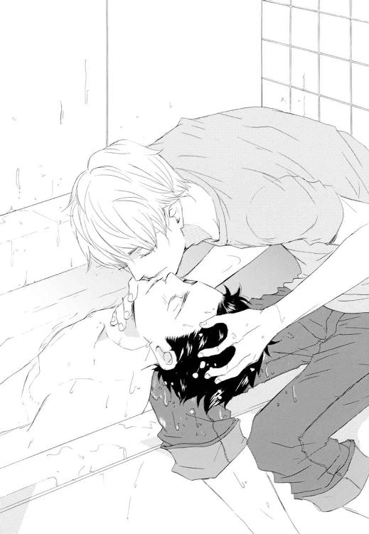
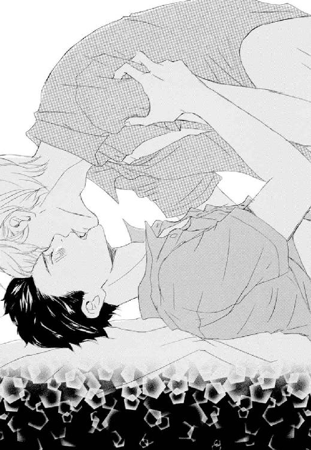

| 君しか見えない (ディアプラス文庫) | |
| 栗城偲 | |
今夏、鳥居哉の周辺で流行しているものは「怖い話」である。
夏の風物詩といえば色々あるが、テレビの特別番組や、行きつけのゲイバーでその話が始まりだすと、ああ夏だなあ、と感じるものだ。
「......そしてね、壁紙を剝がしてみたら、一面に赤い文字で『たすけてたすけてたすけて』って書いてあったんだってぇ......」
きゃーこわーい！ と野太い声が上がるのを聞きながら、哉はやれやれと溜息を吐いた。筋骨隆々の体をくねらせながら隙を見ては他人の尻を揉んでいるその悲鳴の主のほうがよほど怖い。
二十一時を越えたバーには、それなりの人数の客が集まっている。「怖い話」で盛り上がっているのはその一角に過ぎなかったが、皆割に興味を持って耳を傾けているようだ。
話の輪には入らないまでも、「怖い話と言えば」とか、昔の妖怪漫画の話などが静かに伝播していく。カウンターに並ぶ別の二人組は、先日三丁目で働いていた男が飛び降り自殺をした、というリアルに怖い話までし始めた。
ハイボールを呷りながら、哉はもう一度嘆息する。
「哉、怖い話苦手？」
バーカウンターの奥で洗い物をしていた店長──神崎に揶揄いまじりの口調で問われ、哉はふっと鼻を鳴らした。
「苦手といえば苦手ですね。ある意味」
「ある意味って？」
「俺、幽霊とか超常現象とか、まったく、一ミクロンも信じてないんです」
「そうなの？」
フィクションとしては面白いと思うが、本気で「おばけ」を信じている人を見ると、生温い気持ちになってしまうのだ。
だが、そういう相手にそんな意見を告げれば当然むっとされてしまう。だから、興味もないし信じてもいない話題を振られても、一言も文句を挟まず、聞き流さなければならない。それが辛いので、「怖い話は苦手」なのである。
そう説明すると、神崎は小さく吹き出した。
「えー。そんな顔してんのに。なんか意外」
「よく言われますけど、顔と性格、関係ないんで」
哉はいわゆる「童顔」で、もう二十代も半ばを過ぎたというのに、私服でいると高校生に間違われることも多い。黒目がちで丸い目は小動物を彷彿させ、人の目にはより頼りなく映るだろう。背は一応成人男子の平均くらいはあるのだが、頭が小さく細身のせいか、実際よりも低く見られやすい。先日も夜に飲み屋街を歩いていたら私服警官に補導されそうになった。
車の整備士という仕事柄、幅広い年齢層の男性が多い仕事場でも、初見でなめられることがままある。己の外見で得をした覚えのない哉は、あまり見た目について言われるのが好きではなかった。
「生まれてこのかた、そういう不思議現象に遭ったこともないですしね」
「それは俺もだけど......お化け屋敷とか行ってもびっくりしないの？」
「しますよ。誰だって不意打ちはびっくりするじゃないですか」
「......そういうびっくり？」
日本一怖いと有名なお化け屋敷に友人と行ったときも、不意打ちの登場や音にびっくりすることはあっても「怖い」という思いはまったくもってなかった。
ディテールの細かさに感心しつつ進んでゴールまで行ったら、一緒にいた友人がぐったりしていておかしかったがそれだけで、高い遊興費を払ってまで行くところだったかと言われると疑問だ。
遊びは楽しんだもの勝ちなので、ある意味損な性分だ。
「俺、だから霊能者とか占い師とかスピリチュアルカウンセラーとかも駄目なんですよ。大きな声じゃ言えないけど」
「あー......」
何故かはわからないが、新宿二丁目に出入りする性嗜好の持ち主や、芸能関係にはその手の人物が多い。石を投げれば「オーラが見える」「前世がわかる」「占いが出来る」という人物に高確率であたる。その度に辟易してしまうのだ。
「なんていうんですかね、詐欺師を見てる気分で」
哉の科白に、神崎はひでえ、と笑う。
「あからさまな結婚詐欺を横目で見ながら、でも騙されてるほうは本気で信じてるし、俺がそれ詐欺だよって言ったら『どうしてそんなこと言うんだ！』って怒られるから、それを見過ごさなきゃならない。そんな辛さと、もやっと感」
「わかるようなわからんような」
この店に出入りしている中にもその手の人物は数人いて、特に有名な男は、時折店の中でスピリチュアルな話をしていることがあった。そんなに注目を集めたいのかねえ、と哉はいつも内心呆れていた。
軽く店内を見回してみるが、今日はいないようだ。
こういう類の話になると、哉はいつも初恋の男の子を思い出す。
哉の初恋は中学生の頃で、三年間同じクラスだった男友達のことが好きだった。
彼はとてつもない怖がりで、周囲はいつも面白がって怖い話をしたり、ホラー系のＤＶＤを見せたりしていた。その度に彼は悲鳴を上げ、怖がらせようとしない上に動じない哉の元へ泣きついてきたのだ。
学校以外でも一緒に遊びに行ったりと仲良くしていたのだが、進路が分かれたらぱったりと連絡を取らなくなり、気が付いたら連絡先も変わっていて、関係が切れてしまった。
それを寂しいと思う一方で、安堵していたのも事実だ。
中学生当時は、哉もまだはっきりと己の性嗜好を自認してはいなかった。自分はゲイじゃない、と抗っていた。
彼と一緒にいると、どきどきしたり、切なくなったりする。そんな気持ちから目を逸らしていた。
だから、連絡が取れなくなったとき、哉はほっとしたし、追いかけたりはしなかったのだ。
「とにかく、俺は幽霊だの超常現象だの、そんな話は嫌いなんですよ」
そんなものより現実のほうがよっぽど怖い、とお決まりの科白を、酒と一緒に飲み込んだ。
翌週の金曜日、再び神崎のショットバーへ行くと、店の中央奥に置いてあるテレビに「心霊特番」が映っていて哉は思わず顔を顰めてしまった。
ここは本来スポーツバーで、ワールドカップなどスポーツの大会が行われるときはその試合を映して皆で盛り上がれる場所だ。
だが、今日は夏の風物詩ということで、心霊特番を映しているらしい。「おわかりいただけただろうか......」というスピーカーからの言葉とともに、そこかしこから、息を飲む音や小さな悲鳴が聞こえた。
息を吐き、カウンターに座ると、神崎がおしぼりといつもの一杯目であるビールを渡してくれる。
「神崎さん、夏っつったらナイターだろ。ナイター見ようよ」
「やだ。俺野球嫌いー」
スポーツバーのマスターのくせに、と文句を言ってみたが、あっさりとスルーされてしまう。
もっとも、こんなに盛り上がっている状況でチャンネルを変えたら、それこそ恐ろしい目に遭うだろうことは想像できた。
今夜は早めに退散するかと哉が嘆息したのと同時に、からんとドアベルが鳴る。視線だけを出入り口に投げると、若い男が二人、肩を並べて入ってきた。
なんだカップルか、と少々残念に思いながらもその二人をさりげなくチェックする。
先に入ってきたのは、上背があり、細マッチョで、この界隈ではモテるであろう雰囲気の男だった。髪の色は暗めの照明ではっきりとは見えないが、それほど明るい色ではない。シンプルで趣味のいいカッターシャツとベスト、だがアクセサリーは哉にとってはうるさいと思えるくらいつけられていた。
後から入ってきた男も、同じくらいの背丈と体型だ。一人目の男よりほんの少しだけ背が低いが、一般的に見て十分高身長だろう。こちらは明るめの髪色で、少し長めの、ふわふわとした髪をしていた。服はごくごくシンプルなＴシャツとパンツを着用している。あまり派手にきめるより、これくらいのほうが哉にはお洒落に見える。
──二番目のほうが好みのタイプだな。
顔は双方ともよく見えないので、完全に遠目の印象で判定する。
もっとも、カップルなので、哉の好みかどうかは二人にとってはどうでもいいことなのだろうけれど。
あまりじろじろ見るのはよそう、と哉はカウンターに向き直ってビールに口をつける。
だが、その二人は少々迷いながらもカウンターへと座った。ひとつ席を空けて、哉の隣に来る。
神崎が二人分のおしぼりを渡し、話しかけた。
「いらっしゃい、増田くん。あれ、こっちの彼は初めてだよね？ ......なんか具合悪い？ 大丈夫？」
「......あ、いえ。平気です」
先程、哉が好みのタイプだと思ったほうが返事をする。中低音の声は耳に心地よく、そちらも好ましかった。
「──今日って祖師谷さんは来てないの、店長」
増田と呼ばれた男が、幾分硬い声で問う。
祖師谷、というのは、哉同様この店の常連だ。だが、哉とは殆ど喋ったことがない。
所謂「スピリチュアル」な人物で、オーラが見えたり、予知が出来たり、幽霊が見えたりするそうだ。それが当たると評判で、わざわざ祖師谷に会いにこの店に来る客も少なくないという。
初期のころに「哉も見てもらえば？」と言われたが、丁重にお断りした。祖師谷も不信感丸出しの哉には殆ど関わって来ないので、哉にとっては詐欺まがいのことばかり喋るものの、そこだけは好ましい。
──......うわぁ......こいつらも、わざわざ会いに来たんだ......。
「祖師谷くんは、最近見ないね。そういえば。彼と待ち合わせ？」
「いや、そういうんじゃないけど......実は」
深刻な響きをもって落ちた声に、横で聞きながらぞわぞわとする。
「こいつが、数週間前からなにかに取り憑かれてるらしくて」
──出たー。『なにかに取り憑かれてる』。絶対気のせいだからそれ。
そんな話を受けて、神崎は「ああ、だから元気がないというか......くたびれてるの？」などと返している。
──神崎さん優しいなぁ。具合悪いなら病院行けって話だよなぁ......。
「だから祖師谷さんに見てもらおうと思ってたんだけど、誰か連絡先とか知ってるやついないですかね？」
「うーん、どうだろう」
体に不調があるなら医者に診てもらえばいいだけの話なのに、神頼みだの、霊能者だのに頼るのは遠回りすぎやしないか、と心の中でツッコミを入れる。
本人たちは真剣なのだろうが、哉から見るとはなはだ滑稽だった。
──そんな胡散臭いものに縋るくらいだったら、リアルな解決方法見つけたほうがよっぽど建設的だっての。
酒がまずくなるから早いところどこかへ行ってくれないかと念を送っていると、神崎がカウンターの中から哉の顔を見て苦笑した。
「......祖師谷くんなら、誰も連絡取れないんじゃないかな。勿論俺も連絡先知らないし」
「そうですか......」
打ちひしがれた声を出し、隣の男がしゅんと肩を落とす。
馬鹿な男だとは思うが、視界の端に映るその萎れた様子に、少し同情心を覚えた。
「じゃあ、今日は帰るか」
──おいおい、なにも頼まずに帰るのかよ。
増田の科白に内心ぎょっとすると、傍らの男が緩く首を振った。
「......一人より、他の誰かが沢山いたほうが落ち着くし......」
「でもなぁ......」
渋る増田が腕を引くも、男は頑として動こうとしない。よっぽど一人になりたくないのだろう。間もなく男が酒を注文したので、増田も諦めて腰を据えることにしたようだ。
哉は超常現象だのなんだのは信じていないが、怖がっているのを可哀想だとは思える。心細いからここにいたいのだという彼に、信じている態の増田が「いいから早く行こう」と急かすのは、少々無神経ではないのか。
「あ、じゃあこの子とちょっと話してみれば」
唐突に指を差されて、哉は目を剝く。
急になにを言いだすのだと視線で問えば、神崎はカウンターの中から哉の肩を叩いた。
「生まれてこのかた、不思議現象に出会ったこともなければ、怖い話に一切動揺しない強靭な心の持ち主。しかも名字が『鳥居』！ ご利益あるかもよ？」
「鳥居......？」
話を聞いていた別の客が後方から「ホラー映画だったら真っ先に殺される雑魚キャラタイプ」と余計な茶々を入れて来る。
どうせ俺は夜の街でも雑魚キャラだよと少々やさぐれた気分でいると、横に座る男がじーっとこちらを見ている気配がした。
頰に視線が刺さって居心地が悪い。
あんま見るなよ、と言おうとしたら、男がずいっと身を寄せて来た。
「な......っ」
「哉!? 俺、俺俺！ 熊谷！ 熊谷蓮司だよー！」
「は......っ？」
熊谷、と復唱して、傍らの男の顔を初めて正面から見据えた。
その顔にぼんやりと見覚えがあって、哉は眉を寄せる。
不意に、十年も昔の切なさが急に胸に蘇って、息が止まりそうになった。
「......蓮司？」
「うん、久しぶり！」
哉の中では中学生のときの、少年のときのままでイメージが止まっているので、急に大人になって現れた初恋の男子に戸惑ってしまう。
中学生のときは、哉と殆ど変わらないくらいの身長だった。自分の身長があまり伸びなかったというのもあるが、今は見上げるほどだ。短かった黒髪も、ふんわりとした明るい茶色の髪に変わっている。体つきも、少年らしい頼りない細さはもうなく、男性的な体になっている。
声も、声変わりのさなかで安定しなかった少し掠れたものではなく、すっかりと落ち着いた中低音に変わっていた。
けれど、にっこりと笑ったときに、少し八重歯がのぞくのは、昔と変わらない。
──......本当に、蓮司だ。
意識した瞬間に、とくんと心臓が跳ねる。
初恋補正というだけではなく、蓮司はすっかり現在の哉の好みのタイプに成長していた。
「──誰？ 知り合い？」
ぽうっと見惚れ掛けていた意識を、硬く低い声によって現実に引き戻される。
奥に座っていた増田が、目を細めながら蓮司の腕を摑んでいた。一見他意はなさそうに見えるが、「てめえなんなんだよ」という威嚇が見て取れる笑顔だ。
だが蓮司は増田の様子には気が付いていないようで、にこにこと頷く。
「うん、中学のときの友達」
「──です。ドーモ」
軽く顎を引いて挨拶すると、「へえ」と言いながら増田はじろじろと哉を見やった。
まるで値踏みするようなその視線に、少々腹が立ったが、気が付かない振りをする。
「びっくりした。哉と会えるって思ってなかったから」
そんなことを言いながら、蓮司は出された酒に口を付ける。
──俺だって思ってなかった。
連絡先がわからなくなったのは、もしかしたら自分の気持ちが知られたからだと思っていた。友達のまま、綺麗に互いの関係を終わらせるために、音信不通になったのだろうと。
告白するつもりはなかったけれど、その当時も哉は、蓮司の判断は正しかったと思っていた。そこで終わったから、自分の初恋は切ないながらも今も綺麗な思い出のままなのだと。
だから、きっとどこかで見かけても声はかけずにいようという覚悟もしていた。──それなのに、今、こんな場所で会うなんてまるっきり予想外だ。
くるくるとグラスを回しながら、哉は動揺を隠して息を吐く。
「......お前、ゲイだったんだ」
恨み言に聞こえないように、そっと呟く。
蓮司の顔を見るのが怖くて、哉は揺れる水面に視線を落とした。
「──俺、中坊のとき、お前のこと好きだったんだよ。哉」
唐突に放り投げられたまさかの科白に、グラスを握っていた手が強張った。
だが、すぐにその言葉が「過去形」だったことに、安堵する気持ちと残念な気持ちが綯い交ぜになる。
だから、なんだか少し笑えてしまった。
「そっか。実は俺も、あの頃お前のこと好きだった」
「......そうだったんだ。じゃあ俺たち、あの頃両想いだったんだね」
残念、とあっさりと落ちた言葉で、哉は自分の初恋が完全に終わりを迎えたことを知った。
当時の痛みや切なさをずっと抱いてきたわけではないけれど、全部過去形で語られた「思い出話」に、泣きたくなるような、肩の荷が下りるような、不思議な気持ちになる。
軽く昔話や旧友の近況などを話し、その途中で蓮司がトイレに立った。
ふっと息を吐き、自分の近況を語ることを避けているのを自覚する。
「こんなところで同級生に会うとかすごい偶然だね」
ふと増田に声をかけられて、哉は苦笑した。彼には交われない会話で盛り上がってしまったので、少々気まずい。
「すみません、地元トークとかしちゃって」
「いいよ別に。昔の友達と会ったらそういうもんだし。俺も久しぶりに元気な蓮司見られてほっとしたし」
鷹揚ぶった話し方は、彼の癖なのか、それとも意図的なものなのか。
先程思い切り睨みつけてきたくせに、今更遅いだろうと思うが、哉はなにも指摘はしなかった。
すみません、と再度口にしたのと同時に、増田にぐっと肩を摑まれる。少々強い力で、哉は思わず顔を顰めてしまった。
「でも、俺たち付き合い始めたばっかりなんだ。だから蓮司とちょっと距離とってくれると嬉しいかな。......初恋とか言われると、内心穏やかじゃないし」
平たく言えば、邪魔するな、ということだろう。
「......はい」
別にそんなつもりもなかったので、素直に頷く。
ありがと、と言いながら、増田は手を離した。なんだか摑まれたところが気持ち悪くて、哉は襟を正すふりをしてその場所を擦る。
──随分余裕ないんだな......別に、邪魔するつもりはないし、俺の存在が邪魔になるとも思えないけどな。
蓮司だって、どれだけの「好き」だったのかはわからないが、今更哉への恋に執着しているようには見えなかった。
随分と焼き餅焼きの恋人のようだと内心呆れながら酒を口に運ぶ。
その瞬間、遠くで悲鳴が聞こえた。
店内の喧騒に紛れてあまり大きくは響かなかったが、蓮司の声だったような気がして哉はトイレのほうへと顔を向ける。
すると、真っ青な顔をした蓮司が慌ててこちらへ戻ってきた。なにかを振り払うような動作をしたあと、小走りでやってくるその姿は普通ではなく、哉は眉を顰めた。
「どうしたんだよ？」
哉の問いに、蓮司は青褪めたまま頭を振った。そして、ふと視線を上げる。
「蓮司？」
どこか呆けたような表情で、蓮司は哉を見つめた。弱々しく哉の腕に縋りながら、肩のあたりに額を乗せてくる。
「......そうだった、哉......」
「な......、ど、どうした？」
唐突な接触にどぎまぎしたが、蓮司の手がいやに汗ばんでいるのに冷たくて訝しむ。
「蓮司？」
具合が悪いのかと問おうとすると、蓮司は顔を上げ、ほうっと息を吐いた。
よろよろと椅子に座り、頼るように腕を絡めて来る。流石にこのスキンシップは、恋人の隣ではまずくないだろうかと、哉は蓮司と増田を交互に見やった。増田は咎めるような目を哉に向けながらも無言だ。
「哉の傍にいると楽......」
「はぁ？ なに急に」
初恋の相手にそう言われること自体は嬉しいが、脈絡もない科白に戸惑い、焦る。
牽制した傍から邪魔するんじゃねえよ、とでも言いたげな増田には、不可抗力だと言い訳したい。
だが、そんな哉の戸惑いや焦りを察しもせず、蓮司はとんでもないことを口にした。
「哉、お願い！ 今日泊めて!?」
「──は？」
お前、彼氏の目の前でそういうこと言うか？
展開の速さについて行けず、ぽかんと口を開けてしまう。しかも、中学を出て以来連絡すらしていなかった間柄だというのに、一体どういうつもりなのか。
「蓮司、ちょっと待てよ」
止めに入った増田のほうを見もせずに、蓮司は「お願い泊めて」と言葉を重ねた。うんと言うまで離さない、とばかりに腕にしがみつかれて、哉は溜息を吐く。
「──落ち着け、蓮司。ちょい離れて」
刺すような視線があまりにも痛すぎる、と哉は蓮司の額をぺちんと叩いた。
蓮司ははっとして、多少冷静さを取り戻したのか、少しだけ身を離す。腕は握られたままだが、仕方がないので話を進めた。
「うちは１Ｋマンションだけど、泊めること自体は吝かじゃない。けど、なんだ急に？ 理由は？」
旧交をあたためる、というのが目的ではないように見える。
唐突な宿泊希望の意図はなんだと詰めよれば、蓮司は眉尻を下げて唇を震わせた。
「......さっき、トイレ行ったら『出た』んだ」
「なにが」
「......幽霊が」
蓮司の科白に、表情筋が素直に動いてしまった。
哉の顔を見て、蓮司は泣きそうな顔になる。
「哉が幽霊とか信じてないのはわかってるよ！ でも、でも本当なんだ！」
蓮司曰く、数週間前から心霊現象に悩まされているのだという。
そもそも、この店に来た理由もそれだったなと、哉は思い返した。
「こないだから、知らない幽霊が俺のところに来て......」
金縛りは日常茶飯事で、恐らく同一人物であろう幽霊が鏡や写真に映り込んだり、帰りに待ち伏せしていたり、のしかかってきたり、腕をひっぱったりするらしい。
そのせいで、このところ鏡もまともに見られない状態だという。
先程も、鏡を見ないようにしながらトイレに入ろうとした瞬間、自動式ではないはずの蛇口から突如水が出たそうだ。天井に気配を感じながらも慌てて用を足し、手を洗おうとした瞬間、白い手が伸びてきて蓮司の腕を摑んだ。それで悲鳴を上げて飛んできた、ということだった。
「......お前、手ぇ洗ってねえのかよ」
そこなの!? と、蓮司と神崎が同時に声を上げる。
重要だろうそこは、と哉が言えば蓮司は再び泣きそうな顔になった。同情したらしい神崎が、こっちおいでと蓮司を呼ぶ。
半泣きになってカウンター内で手を洗いながらも、蓮司はふふっと笑った。
「そういうとこ、哉らしい。変わってないなぁ......ほっとする」
「お前も、怖い話でびゃーびゃー泣くとこ全然変わってねえな」
一瞬どきりとしてしまった胸を、哉は鼻で笑って誤魔化す。
蓮司は「泣いてないから！」と反論してきた。その顔に血色が、少し戻って来たようでほっとする。増田を見ると、相変わらず無言のまま哉を睨んでいた。
「な、哉は怖い話信じてないんでしょ？ 俺、毎日毎日霊障に悩まされてて限界なんだ。お願い、哉のとこ泊めて」
「......とは言ってもなあ」
お前の彼氏が睨んでるんですけど、とばかりに増田に視線を投げ、指を差す。
「この人んとこ泊まれば？」
「そうだよ、蓮司。俺のところに......」
「──お願い、哉！」
増田の科白にかぶさるように、蓮司が言葉を重ねる。増田は更に不機嫌な顔をしたが、蓮司は気付いていない。いや、気が付いているが、どうしても頷けない、ということなのか。
お願いだから、とさらに重ねる蓮司に、神崎のとりなしもあって、哉はわかったと承諾した。流されて受け入れてしまったが、蓮司が増田ではなく自分を選んだ、ということにちょっとした優越感を覚えてしまう。
それに、初恋の男に泣き落としのように懇願され、嫌と言うのは難しかった。
「......まあ、俺も期待してたわけじゃないけどさ」
風呂から上がって、哉はそんな独り言を口にする。
増田に一言も口を挟ませず、蓮司は哉の家への宿泊が決まると、すぐに店を出た。後ろを振り返っていたのは増田が気になるということなのだろうか。そんな疑問を口にしたら「そっちじゃないよ」と言われたが、深くは追及しなかった。
そうして、それなりにどきどきしながら初恋の男を部屋に上げ、先に風呂に入らせる。入れ違いに入浴した哉が部屋に戻ると、蓮司はソファで寝落ちしていた。
「......恥ずかしい......」
正直なところ、まったく期待していなかったわけではなかったのだと、眠る蓮司に落胆した己の心で自覚する。
心霊現象など有り得るはずもないので、もしかしたらそれを口実に......という淡い期待を抱いていた自分を張り倒したい。自意識過剰だった。
──......俺、まだこんなに緊張出来るんだな。
同じ部屋に蓮司がいる。
それだけで、胸が早鐘を打つのだ。
初恋は、再会と同時に吹っ切った。そう思っていたはずなのに、昔と変わらぬ蓮司を感じて、けれど大人になったところに気付いて、胸が疼く。
哉はこんなにも意識しているのに、緊張など微塵もなく、ソファですやすやと眠っている男が少し憎らしい。
息を吐き、哉は眠る蓮司にブランケットをかけてやる。んん、と微かに声を上げたが、蓮司は起きなかった。
その寝顔を、そっと覗く。
端整な面差しは、記憶の蓮司より幼さが抜けて、すっかりと大人のそれに変わっていた。
だが顔色は悪く、窶れた顔貌は痛々しくも映る。
──そういや、毎日なにかしら起こるとかなんとか言ってたっけな。
本当に、何事か起きるのだろうか。
──俺はまったくわからないけど......幽霊とか、信じてるほうは深刻なんだろうな。
そういう現象に悩まされる、ということは、なにか悩みや気にかかっていることがあるからに違いない。
心配事や恐怖心が生む幻影が「心霊現象」なのだろう。
──なに悩んでるんだよ、お前。
朝になったら訊いてみよう、と哉は体を引いた。
「ん......」
蓮司が身動ぎをした拍子に、腕がソファから落ちる。ブランケットから出てしまった彼の左手首に痣が浮かんでいた。
哉の家は１Ｋの間取りのため、部屋を分けて眠ることはできない。
同じ部屋に初恋の男がいると思うと、それだけでどきどきして落ち着かず、昨晩は寝つきが悪かった。明らかに寝不足で、今日が土曜日でよかったと、目覚めてすぐに哉は溜め息を吐いた。
半分眠った頭で枕元を探り、携帯電話を手に取る。時刻は午前七時五分前だ。
「あ。おはよ、哉」
既に起きていたらしい蓮司と、ばっちりと目が合ってしまう。蓮司はソファに寝転がったまま携帯をいじり、手を振っていた。
慌てて起き上がり、哉も「おはよう」と返す。
──......間抜けな寝顔、見られたかな。恥っず......。
ソファはベッドの対面に置いているので、蓮司のほうから哉の顔がばっちり見えていたはずだ。別に蓮司にとってはどうということもないのかもしれないが、無防備な顔を見られるのは恥ずかしい。
でも自分も昨夜散々眺めてしまったので文句は言えない。
「......よく眠れたか？」
もそもそとブランケットをベッドの端に寄せながら訊くと、蓮司は身を起こして頷く。
「こんなにぐっすり眠れたの、久しぶり。ありがと」
「そりゃよかった」
確かに、昨晩と比べて蓮司の顔色はいい。その事実にほっとして、哉はベッドを降りた。
「朝飯どうする。軽いのでいいなら作るけど」
「えっ、食べる！ 俺も手伝うよ」
二人で協力して、バタートーストとハムエッグ、グリーンサラダに味噌汁という朝食をさっと作った。
インスタントコーヒーを入れて、朝食を並べたソファ前のテーブルに持っていく。
床に座り、いただきますと手を合わせると、蓮司が笑った。
「どうした？」
「いや、俺らも成長したなあとしみじみ思って」
「あー......」
中学生のとき、家庭科の時間に同じ班だった哉と蓮司は、ミートソースを作る授業で二人同時に指を切って保健室へ行く羽目になった。
以来女子からは包丁を触らせてもらえず、卒業するまで味見と皿洗いの係になったのだ。
言われてみてそんな過去を思い出し、苦笑する。
「懐かしい」
「ね」
いつもつるんでいたので、中学生のときの思い出は、大概が蓮司とセットだ。叱られるときも必ず一緒で、哉は蓮司と「二人一組」扱いされるのが嬉しかった。
バタートーストを齧りながら、対面の蓮司を見る。
「なあ」
「んー？」
「......お前、なんで俺のこと切ったの？」
哉の問いに、蓮司の表情が固まる。
高校に進学してすぐの頃に、いつものようにメールを打ったら宛先不明で返ってきてしまった。
電話をしても「お客様のご都合によりかかりません」という女性のアナウンスがあり、すぐに蓮司が連絡を取れないようにしたのだと気付いた。
「怖い話」については鋼の心臓の持ち主だが、哉は打たれ強いわけではない。男同士で、しかも仲のいい友人を好きになってしまった後ろめたさと、それがばれたのではという恐ろしさに心はぽっきりと折れ、その理由を深く探ることはしなかった。出来なかった。
「......俺の気持ち、気付いてた？ だから切ったのか？」
でも今なら、そこに肯定が返ってきても受け止められる。
そう思って問うと、蓮司は困ったように笑った。
「違うよ。......昨日も言ったけど、俺もその頃、哉のこと恋愛的な意味で好きだったし、哉が俺のこと同じように好きだなんて知らなかったよ。......思ってもみなかった」
穏やかに返された言葉に、安堵する。
「じゃあ、なんで？」
「......一つ言い訳すると、連絡できなくなったの、哉だけじゃないよ。あの後ちょっと色々あって、結局誰の連絡先もわかんなくなっちゃったんだ」
それが噓か本当かわからないが、答えを聞いて哉はほっとした。
そっか、と一言口にするだけにとどめる。
「それに、実は俺、哉と連絡取れなくなってちょっとほっとした」
「なんで」
自然と硬くなった声に、蓮司は苦笑した。
「俺、哉のことやらしい目で見てたから」
その発言に、哉はコーヒーを吹き出しそうになる。
目を瞬かせていると、冗談を言ったわけではないらしく、蓮司は少々言いづらそうに続けた。
「でも、ゲイとかバイとかそういう自覚もなかったし......認めたくないって気持ちもあって、ダチのことやらしい目で見てる罪悪感もあって、正直めっちゃ悩んでた」
現実から目を背けたかったのだと言われ、身に覚えのある哉は、それ以上問う気持ちにはならなかった。
同じ時期に、同じことで悩んでいた。ならば今は──そう問いかけた口をどうにか噤む。
「──ところで、今日は」
この後はどうする、と訊こうとした哉より早く、蓮司は「あ」と声を上げた。
「俺、これから出勤」
「お前、土日休みじゃないのか」
「うん、俺美容師やってんだー。よかったら今度来て？ サービスするから」
そう言いながら、蓮司は自分の財布を取り出して、名刺をくれる。
さほど遠くない駅が最寄りのようだ。
「美容室なんてしゃれたとこ、行かないんだけど俺」
「しゃれたって......そんなすごいとこじゃないから来てよー」
そのうちな、と答えて、哉は蓮司の名刺をテーブル脇に置いた。
「哉は今なにやってるの？」
昨夜、意図的に避けた話題を振られて、些か動揺してしまった。もう会うこともないだろうと思っていた過去に好きだった相手に、今の自分の話をするのが躊躇われたからだ。
「哉の名刺もちょーだい」
「めんどくせ」
「ひどい！」
泣き真似をする蓮司に苦笑し、哉は通勤用の鞄から名刺を取り出す。
蓮司はそれを受け取って眺め、目をぱちぱちとさせた。
「一級整備士......わ、しかも大手じゃん。すごい哉！」
「いや......それが、今年から現場じゃなくなってさー......」
昨年度までは現場で自動車整備士として働いていたのだが、資格を買われ春の人事で開発部の実験科へ異動になった。主な仕事は実験と評価で、開発段階における車両品質保証。
定時の出社と退社が可能となり、周囲からは出世街道だとか言われるが、車を弄りたくて整備士になった哉には少々落胆する人事であった。
そんな愚痴をぶちぶちと話すと、対面の蓮司がにこにこしている。訝しんで首を傾げると、蓮司は嬉しげに言った。
「哉、車好きだったもんね。好きな仕事してるんだ」
「......ああ、うん」
「初志貫徹かー。哉らしいや」
中学生の時分に、そんな話をちらりとしたことがある。あの頃はまだ「将来」が途方もなく遠くて、将来の夢にも現実味がない時期だ。子供時代の与太話を蓮司が覚えてくれている。そのことに、胸がきゅっとした。
「......お前だって、昔から美容師になるって言ってただろ。家族がそうだって」
蓮司は哉の名刺を自分の名刺入れにしまいながら笑った。
「そうそう。俺は安直な理由だよねー」
「あれ？ でもお前怖くて鏡見られないとか言ってなかったっけ」
美容室といえば、大きな鏡が何面もあるだろう。
哉の言葉に、蓮司はさっと顔色を失くした。折角血色がよくなったのに、と己の失言に内心舌打ちをする。
「......仕事中は、お客さんの頭とか顔とか必死に見るようにしてる。でも、ちらちら映るんだ」
「なにが？」
「......血まみれの男の人」
頭から血を流した男が、後ろの方で棒立ちになりながら蓮司を見ているのだそうだ。赤黒い液体に濡れた顔は、視界の端に白い眼だけがはっきりと浮き上がり、それがより恐ろしいという。視線を逸らして足元に目を向けると、気付けとばかりに赤い液体がゆっくりと押し寄せてきて、悲鳴を上げそうになるのだとか。
「......でも、毎日なにか起こるって言ってたけど、俺んちでなんもなかったじゃん」
フォローのつもりで言ったが、蓮司は何故か愕然とした顔をした。
「蓮司？」
「......ごめん、こんなの信じられないよね」
しょんぼりと肩を落とした蓮司に、困惑する。そしてすぐに、「なんも出ねーじゃん、噓つき」と言ったように聞こえたのかと気づき、慌てて首を振った。
「お前が噓言ってるとかそういう意味じゃねーよ！」
焦って言い訳をすると、蓮司はそっと視線を上げた。
悲しませるつもりはなかったのだと、哉は頭を搔く。
「正直なとこ、俺は幽霊だのなんだの、信じちゃいねえよ。でも、お前が本気で怖がってんのはわかるし、それを否定する気はねえ。......とにかく、昨晩安眠できたんだからよかっただろってだけ」
少々早口でまくしたて、ちらりと相手をうかがう。
「......でも、哉は幽霊とか信じてないんだろ？」
「お前は信じてんだろ」
見えると嘯き、それで人を怖がらせたり、金儲けをしたりというのなら話は別だが、蓮司はただ怖がっているだけだ。それを頭から否定してもしかたがない。
「お前の中で本当なら、お前の気持ちは信じるよ。俺は」
蓮司は微かに目を瞠り、それからほっとしたように表情を緩めた。
「ありがと。......やっぱ俺、哉のそういうとこ、好きだぁ」
増田という恋人がいるくせに、気軽に好きだなんて言うなよ馬鹿。
そう言いかけて、やっとの思いで口を噤む。そんなことを告げたら、互いに変な意識をしてしまいそうだ。
「今度、一宿一飯のお礼に奢る！ 奢らせろ！」
「別にいいって、マジで大したことしてねえのに」
「えー、でもでも、ぐっすり眠れたし、なんにも起こらなかったし、絶対哉のお陰だから」
そして、徐に携帯電話を取り出し、連絡先の交換を迫ってくる。特に断る理由もなかったので、互いに番号とメールアドレスなどを交換した。
すぐに今月の予定を訊かれて、次に会う日時まで約束してしまった。来週の金曜日の夜には、二人で焼き肉だ。
別にいい、などと言ってみたものの、また蓮司と会えるのかと思うと、やっぱり嬉しい。口元が緩みそうになる。
蓮司は携帯電話を大事そうに握り、哉、と呼んだ。
「ありがと」
「なんで礼？」
「ここに哉の連絡先入ってると思うと、心強い」
それは、超常現象を信じていない人間のものが入っていると、なんとなく霊障を祓えそうだから。
期待しかけた心を、そう戒める。
別にそれが哉だから、というわけではない。きっと深い意味はないのだ。思わせぶりな言い方するなよ、と思いながらも、その言葉に心が浮き立つのがわかる。
食事が終わると、蓮司は哉の分の食器まで洗い、すぐに玄関へと向かった。
「じゃあ、またね」
「おー、気をつけてな」
お邪魔しました、と言いながら靴に足を入れ、蓮司がドアノブに手をかける。
がちゃ、と音がしたが、ドアが開く気配がない。
「ん？ あれ？」
なんで？ という蓮司の声と、がちゃがちゃ、と鍵のつまみを動かす音だけが響く。哉は怪訝に思って、玄関の方へと足を向けた。
「なにしてんの？」
「や......なんか、ドアが開かなくって」
「チェーンかけっぱなしとかじゃねーの？」
「いや、かかってないよ？」
言われて視線を向けると、確かにドアチェーンはかかっていない。
「鍵開けるときって縦向き？」
「そうだけど......」
どれ、と哉もドアノブに手をかける。
捻って押すと、特に引っ掛かりもなくドアは開いた。開かない開かないと言うものだからちょっと力を入れ過ぎて、勢い余って裸足で一歩飛び出してしまったくらいだ。
「......開くじゃねえか」
「あれー......？ で、でも本当に開かなかったんだよ!?」
「うちは押し戸だ」
天然か、と蓮司の頭を軽く叩く。
蓮司はむにゃむにゃと口を動かし、なんかごめんねと笑った。
「じゃあ、今度こそ......お邪魔しました」
「ああ、気を付けて行けよ」
「うん。それじゃね」
そう言って、ぱたんとドアが閉まる。
玄関で手を上げた恰好のまま固まっていた哉は、息を吐いた。
──......本当になんもなかったな。
苦笑しつつも、長年の誤解が解け、初恋の男の連絡先が手に入ったことは幸運だったと思う。
「まあ、今回はそれでよしとするかー......」
ふわ、と欠伸をして、哉はもう一度寝なおすために踵を返した。
蓮司から連絡があったのは、約束の日ではなく、その翌日の、日曜日の朝のことだった。
メッセンジャーアプリに、「今日行ってもいい？」というメッセージが送られてきたのだ。
昨日の今日でどうしたのかと思ったが、残念ながら日中は用事があった。仕事で知り合った人に誘われ、車のエンジンの展示会に行くことになっていたのだ。
そう言って断ると、「その帰りでもいい。会って欲しい」と食い下がられた。
一瞬そんなに哉に会いたいと思ってくれたのかとどきりとしたが、すぐにその切羽詰まった様子に、また「超常現象」関連かと察しがつく。
少々落胆しながらも、夜になら会えるから、先日再会したバーで、と待ち合わせをすることにした。
「──哉ぉっ！」
カウンターの立ち飲みスペースでビールを飲んでいると、ドアが開くなり哉の名前を叫んで蓮司が走ってきた。
「蓮......うわっ」
蓮司は走ってきた勢いのまま、哉にぶつかるように抱き付いてくる。
若干よろけながらもなんとか受け止め、抱きあうような恰好になった。
「ど、どうしたんだよ」
激しく脈打つ心臓に、改めて己の気持ちに気付いてしまう。
ずっと蓮司に恋をしていたわけではないが、再会した初恋の男を改めて恋愛対象として見ている。
けれど蓮司は既に新しい恋人がいるのだ。だから疚しい気持ちのままスキンシップを受け入れるのはまずい。
ふと、蓮司の肩越しに、案の定今日も来ていた増田の姿が目に入った。増田と目が合い、哉は慌てて蓮司の体を押し返す。
特に誤解されるようなことは二人の間にはないが、疚しい気持ちを悟られたくない。
蓮司は、突き放されて心細そうな顔をした。
──ていうか、付き合ってる相手の前でホイホイ他の男に抱き付くなよお前......誤解されても知らないぞ。
それに、別に二人きりだと約束をしたわけではないが、増田を連れて来るなんて聞いていない。ちょっと無神経じゃないのか、と文句を言おうとしたものの、眼前の蓮司が青褪めているのを見て、心配が先に立ってしまった。
蓮司は「また出た」とか細い声を絞り出す。
「出たって......」
なにが、と訊かなくても、それはあの「血まみれの男の幽霊」のことだとわかった。
哉の家に泊まった日には見なかった、と言っていたのに、また見るようになったということか。
「お願い、また哉んち泊めて！」
「え、いや、でも──」
ちらりと増田のほうに視線を向ける。
追いかけてきた増田は蓮司の隣に立ち、にっこりと笑った。
「さっきも言ったけど、うちに泊まればいいだろ」
その科白に、自分よりも早く、増田のほうが相談されていたのだと知って、むっとする。
じゃあそうすれば、と哉が言おうとするより早く、蓮司が首を振った。
「いい。俺、哉んちに泊まるから。行こう、哉」
戸惑う哉に口を挟む隙を与えず、蓮司は店の外へと引っ張っていく。
増田は追ってはこなかったが、哉を睨みつけていた。
──睨むなよ。俺が無理矢理連れてってるわけでもねえのに......。
もしかして己は痴話喧嘩に巻き込まれているのでは、と新たな疑問が浮かぶ。
だとしたら、ピエロもいいところだ。
馬鹿馬鹿しくなって、哉は足を止める。
「......哉？」
「離せよ。......お前、なんなの？」
恋人との喧嘩に巻き込むなよと言おうとして、蓮司が顔面蒼白になっていることに気が付く。
蓮司、と名前を呼ぶと、蓮司は微かに息を飲んだ。そして、よろめくように一歩後退し、口を押さえてしゃがみこむ。
「蓮司!? 大丈夫か!? 吐きそうか!?」
吐いてもいいぞ、と言ったが、蓮司は苦しげな表情で頭を振る。慌ててすぐ近くにあったコンビニに蓮司を引っ張っていき、トイレに押し込んだ。
数分後、真っ白な顔色の蓮司がふらふらと出てくる。哉はコンビニで買った温かいお茶を渡し、額に触れた。
「大丈夫か？ 具合悪かったのか？」
「......ん」
力なく首を振って、蓮司は息を吐いた。うっすらと汗ばんだ額は、冷たい。
タクシーを呼ぼうとしたが、歩けると言うので、無理をさせないようにしながら二人で駅へと向かう。
電車に乗って暫くすると蓮司は落ち着いて来たようで、顔色が戻ってきて哉もほっとした。
だが自宅前にさしかかり、はたと気が付く。
なんとなく流されてここまで来てしまったが、何故哉の家にまた泊まるという流れになっているのか。
先程の具合が悪そうなのが演技だとは言わないが、してやられた、と思う。
仕方がないので家に上げ、ソファに腰を下ろして「で？」と促した。
蓮司は床に座って、もう冷めてしまったであろうお茶を飲みながら、首を傾げた。
「なにがあったんだよ」
「......また出たんだ」
なにが、とは質さなくてもわかる。──「幽霊」だ。
「昨日、哉のところに泊まらせてもらったとき、今までにないくらい体が軽くて。もう大丈夫だろうって思ってたんだけど......仕事場に行ったらやっぱり、いて」
少し距離を置いた反動のように、怖い目に遭ったのだと蓮司が言う。
「誰かと一緒にいると安心するってことか？」
「......安心はする、けど」
言い淀み、蓮司は口を噤む。
何故そこから一足飛びに「泊めて」になるのか。
「だったら増田さんのとこでいいんじゃないの。なんであっちに行かないんだよ」
付き合っている相手のところに泊まるのが一番なのではないだろうか。
同性の友人と寝泊まりをするのは、普通はおかしな話ではない。けれど、哉も蓮司も、増田も、同性が恋愛対象なのだ。邪推を生むような真似は、慎むべきである。
「あの人、一昨日から自分のとこ泊まれって言ってただろ」
嫉妬心で、少々詰問するような口調になってしまって、内心で舌打ちする。
「増田さんは別に......」
「付き合ってるんだろ？ だったら俺んとこいちゃまずいんじゃないの」
こんなこといちいち言わせるなよ、という思いを込めて睨めば、蓮司は何故かぽかんとしていた。
一瞬の間を置いて、激しく首を横に振る。
「ないないない！ え？ なんでそんな誤解してんの!? 俺とあの人が!? ないよ！」
「誤解......？」
哉は先日、増田がはっきりと「蓮司と付き合っている」という旨の発言をしたのを聞いたのだ。
だが蓮司は、誤解だ、と主張する。
「俺とあの人は友達っていうか、仕事上でちょっと仲良くさせてもらってるけどそれだけだよ!? それに、あの人多分バリタチだし！ 俺もだもん！」
「は......左様で」
絶対ない！ と強く否定する蓮司に、気が抜けた。
そして、噓を吐いてまで牽制してきた男に、徐々に腹が立ってくる。
すっかり騙されてしまった。悩んだり、遠慮したりした気遣いを返せと、今はここにいない男への恨みを心中で呟く。
「......付き合ってるかそうでないかは置いといて、泊まるなら別に増田さんのところだって構わないだろ」
そう言うと、蓮司は不安げな顔をした。
「うん、実は俺も泊めてもらったことはある......んだけど」
あるのかよ、と苛立ちながらも、哉は「だけど？」と促す。
「......あの人の家に泊まると、もっと怖い目に遭う、から」
「俺のところだってそうだろ」
一緒のパターンじゃないかと言うと、蓮司は「違うよ！」と声を上げた。
「増田さんの家に泊まっても、確かになにも起こらないんだ。でも、哉の家とはなんか違うんだよ」
「なんか違うって、なにが？」
間取りか？ と茶化してみるが、蓮司は笑わずに頭を振る。
「なんて言ったらいいかな......哉の家が、綺麗な池だとしたら、増田さんちは綺麗なんだけど、微生物一匹いない池、みたいな......」
微妙な譬えに、哉は疑問符を浮かべる。
「意味わからん」
「俺もよくわかんないんだけど、でも、妙に不自然っていうか、なんか変なんだよ。それに増田さんちを出た後、すげえ怖いことがあるから、もう泊まりたくない」
その説明だけだと、哉の家となにが違うのかがよくわからない。ただ、蓮司の中では明確になにかが違うのだろう。
これ以上深く掘り下げても、哉の納得のいく答えが出ないのは明白だ。なにより、蓮司はまだ混乱しているようだし、具合も悪そうにしている。
そして、増田じゃなくて、哉がいいのだと、そう言ってくれなかったことにがっかりしてしまった。そんな自分が恥ずかしい。
──恥ずかしい、恥ずかしい、恥ずかしい。
無意識のうちに期待していた己を知って、哉がこんなにも恥ずかしい思いをしているなんて、蓮司は気が付かないだろう。
気が付いてほしくなかった。
大きく息を吐き、わかった、と哉は頷いた。
「──哉！」
蓮司は表情をぱっと明るくする。
「客扱いはしねえからな。寝るのはソファか床。金払えとは言わねえけど、飯代お前もち」
「うん！ ありがとう哉！」
ほっとした様子の蓮司に苦笑し、哉は「風呂洗って来る」と言い置いて、風呂場へと向かった。
そして浴槽にシャワーを当てながら、ひっそりと溜め息を落とした。
仕事終わりに携帯電話を確認すると、蓮司からメッセージが届いていた。
帰りに一緒に飲みに行かないか、という誘いを断る理由もなく、いつものように指定場所の居酒屋へ向かうと、そこには蓮司だけではなく増田も座っていた。
しかも、隣り合わせで。
──またかよ。何度目だよこれで。
そんな文句を飲み込んで、哉は何食わぬ顔で「お疲れでーす」と言いながら二人の対面へ腰を下ろした。
「お疲れ、哉」
「お疲れ様。はい、メニュー」
「あ、どうも」
にっこりと笑う増田に、同じくにっこりと笑い返す。
ちらりと蓮司に視線を向けると、目だけで謝られた。が、気付かない振りをしてメニューを開く。
謝るくらいだったら撒いて来いよ、と言うのは、たとえ二人きりであってもあまりに大人げなくて口には出来ない。
蓮司に誘われ、飲みに行くのは今日で数度目。二人きりだと思って現場に向かったら、そこに増田もいた──というのも、今日が初めてではなかった。
曰く、「......誘ってるわけじゃないんだけど、強引についてきちゃうんだもん」らしい。
互いに大人で、まして恋人同士というわけでもないので、いちいちそれを指摘し合ったりはしないが、面白くないことは面白くない。
哉が取り敢えずのビールを注文すると、蓮司は「あ、俺ちょっとトイレ」と気まずい空間を避けるように席を外した。
数十秒ほどの間のあと、改めて増田を見やると、彼はにこにことしたまま「知らなかったな」と口を開いた。
「今、一緒に住んでるんだって？」
増田の言う通り、結局、あの日以降蓮司は哉の家に居ついてしまった。今は同じ部屋で寝起きを共にしている。微妙に生活時間帯にずれはあるものの、朝は一緒に起きて朝食をとり、帰りはこうして飲んでいくことも少なくない。
一緒に暮らしてみると、蓮司は意外としっかり者で、マメに家事をやってくれるタイプだった。ビビりで情けない性格だと思っていたのだが、それは「怖い話」に関するときだけで、平素は存外きちんとしていた。
日々の料理は哉が、洗濯と掃除は蓮司が担当している。
「......同居じゃなくて、蓮司が居候してるだけですけどね」
そう言うと、増田は片眉を上げた。
「なんでかなぁ。わかんないな......俺のところにくればいいのに」
こちらに話しかけているというよりは独り言のように言って、増田は腕を組みながら眉を寄せる。
だったら代わりましょうか、と言いかけて、口を噤んだ。
恋愛対象と同じ空間で生活する、というのは、いいようでいてあまりよろしくない。
同じ部屋で、息遣いの伝わる距離で寝起きするというのは単純に辛かった。
寝息一つで悶々とするし、切なくもなる。一つの部屋で暮らしていれば、接触することだってある。その度に人知れず胸を高鳴らせては、その空しさに溜め息を吐くのだ。
なにより、そんな哉に比べて、蓮司がこちらをまるで意識していないのが辛い。
過去に蓮司が哉を好きだったからといって、今も恋愛感情を抱いているわけではない。
だが、それでも増田に蓮司をあずけるのは癪だ。冗談でも、恋敵に蓮司を渡すなんて、口にしたくない。
「......そんなことより、あなた初対面のとき俺に『蓮司と付き合ってる』って言ってませんでした？」
それもあって悩んでいたというのに、ただのハッタリだったのだと蓮司から聞いてしまった。
増田は、テレビ局に出入りをして、芸能人やキャスター、アナウンサーなどの服を用意する、いわゆる「衣装さん」という職業の人だ。蓮司は美容院で働く傍ら、伝手で同じくテレビ局での仕事をすることもあるという。そのつながりで、よく現場が一緒になるのだそうだ。
──それで、単に一緒に行動してたってだけなんだよな。
今回もそうだが、帰りが同じ頃になるので付いてきてしまうらしい。蓮司がいくら断っても、途中まで一緒に帰るくらいいいじゃない、と言いながら、同行してくるのだ。
心臓が強すぎる、と恋敵ながら感心してしまう。
自分も蓮司の恋人というわけではないので、哉からは強く牽制出来ないのがもどかしい。
僅かな沈黙を破るように、お待たせしましたー、と店員がビールを運んできた。
「こちら、本日のオススメですので、よろしければご注文お願いしまーす」
そう言いながら、店員はテーブルの脇に立てかけられていた二つ折りのメニューを置く。店員が立ち去るのを待って、哉は増田を見やった。
「なんでそんな噓ついたんです？」
増田と二人になる機会自体が今までなかったので、ここぞとばかりに訊いてみる。
増田は首を傾げ「願望もありつつ、牽制しただけだよ」と悪びれなく言った。ライバルを増やさないためには噓も方便、というところだろうか。
そういう戦法はわからなくもないが、やはり正攻法とは言えない。噓を吐いても悪びれない増田の胡散臭さが、嫉妬抜きで蓮司を任せられないと思う理由の一つでもある。
──まあ、これで増田さんが善人だったとして、蓮司を譲ってもいいかと言われるとそれもまた違うけど。
だが、蓮司が「怖い目に遭うから増田の家に泊まりたくない」と思うのは、恐らく本能的に身の危険を感じている、ということなのだろう。
それに、一見人当たりが良く、フレンドリーに話しかけてきているが、増田は哉に対して薄気味の悪い態度を取る。
値踏みするような、ねぶるような視線は、はっきりと気持ちが悪い。
「ただいまー」
そんな気まずい空気を破るように戻ってきた蓮司に、増田は「あっ！」と指さしながら声を上げる。
蓮司はびくっと身を強張らせ、増田が指さした方向を見るようにきょろきょろと周囲を見回した。
「噓だよ、なんにもいないってー」
「......びっくりするじゃないですか！」
怒る蓮司に、ごめんごめんと言いながら、増田はべたべたと触る。
こういうところも、気に食わない。
蓮司はひどいじゃないですか、と気丈に笑ってみせるが、本当は怖がっているのだろう。微かに唇を震わせていた。
増田が蓮司の言う「心霊現象」を本当に心から信じているのかいないのかは、よくわからない。でも哉はこんな風に蓮司を徒に怯えさせるような真似はしたくなかった。
「そんなに怖いなら、早くこっちおいでよ」
恐怖心を煽って、スキンシップを図ろうとしたり、近づいたりしようとするのがありありとわかる。先日の飲みの席では、蓮司のシャツの背中に氷を入れたりして脅かしていた。
それがカップル間の本来の「おばけ」の使い方なのだろうが、少なくとも蓮司は体調が悪くなるくらい気に病んでいるというのに、増田は無神経だ。
とはいえ蓮司が強く言わない以上、それを口に出すのも憚られ、哉は苛立ちと共にビールを飲みほした。
蓮司は先程よりも少し増田から距離を取りながら「なんの話してたんですか」と話題を振る。
「二人が一緒に住んでるって話。部屋が狭いって哉くんが言うから、じゃあ俺のところで引き取ろうかって話してたんだ」
「えっ......」
増田の言葉に、蓮司が顔色を失くす。
哉は慌てて首を振った。
「言ってない！ そんなこと！ 一言も！」
だが哉の否定は傍から見れば、必死に誤魔化そうとしているようにしか見えないかもしれなかった。
案の定蓮司は、哉が言いたくても言えない本音なのでは......というような顔をしている。
息をするように噓を吐く増田を、哉は思い切り睨みつけた。今後、蓮司が変な遠慮をしそうで怖い。
「うそうそ、冗談」
つまんねえんだよ、と心中で増田に悪態を吐きながら、哉は先程店員が置いて行った二つ折りのメニューを手に取る。
和紙のような紙に、手書き風の文字で季節のメニューが印字してあった。
どれか頼もうと、二人にも見えるようにメニューを開いて置く。向かいに座る二人が同時に息を飲んだ。
「──え？」
顔を上げると、蓮司と増田が、信じられないものを見るような目で、メニューを見下ろしていた。
つられて哉も視線を落とすが、そんなに驚くようなものは書かれていない。
今が旬である、鱸、いさき、太刀魚などの刺身や天ぷらがオススメとして並んでいる。
一体どうしたのかと問うより早く、増田が物凄い勢いで哉の手からメニューを取り上げた。そして、それを滅茶苦茶に破り捨てる。
増田の暴挙に、哉はぎょっとした。
「な、なにしてるんですか!?」
「──」
まるで全力疾走をした後のような荒い息を吐きながら、増田は哉を睨む。その目はぎょろりと忙しなく動き、それからなにも言わずに走って店を出て行ってしまった。
蓮司は同じ表情のまま固まっていて身動ぎすらしない。
「え？ なに？ なんだよ？」
わけがわからず、哉は立ち上がって蓮司の肩を叩く。
一方の蓮司は思い出したように身の強張りを解き、哉を見た。
「本当に......どうしたんだよ、お前ら」
「......の......？」
掠れた声で、蓮司がなにごとか呟く。
「なんだって？」
「......哉には、見えないの......？」
一体なんの話だと、哉は眉を寄せた。
「見えない、って。なにが？ お前らにはなにが見えてたわけ？」
増田に破り捨てられたメニューの残骸には、特におかしなところは見当たらない。
そのうちの一つを摘み上げると、蓮司に手を叩かれた。
「いっ......なにすんだよ!?」
「触っちゃ駄目！」
帰ろう、と腕を引かれて、まだビール一杯しか飲んでいなかったというのに、退店を余儀なくされる。
哉の腕を摑んで走り出した蓮司を追いかけながら、「待て待て！」と叫んだ。
蓮司はぴたりと立ち止まり、哉を振り返る。
「......どうしたんだよ？」
「あれ、なんだったの？」
「あれって......？」
言いながら、増田が破ったもののことだと思い至る。
「なにって、メニューだったろ。手書きっぽい、今日のオススメっていう」
「違うよ。違った」
ゆるゆると首を振りながら、蓮司は震える声で否定する。
哉にはメニューにしか見えなかったし、店が用意していたのも間違いなく旬のオススメを書いた紙だっただろう。
だが、二人には別のものに見えていた。
そこには、赤い、恐らく指で書かれた文字で紙面いっぱいに、
「 ち か づ く な 」
とあった──らしい。
正直なところ、二人に担がれたのでは、と居酒屋を出たときに哉は考えていた。
少々蓮司が病んでしまって、幻覚でも見ているのかもしれないと疑ったりもしたが、それにしては増田と二人揃って同じものを見た、と訴えるのはおかしい。
家に帰ってからも蓮司は怯えた様子を見せており、それから三日ほどは、仕事に行く以外は出来る限り哉の傍から離れなかった。
蓮司は本気で「幽霊」に恐怖心を抱いているのだろうが、哉にとっては、初恋の男との距離のあまりの近さに、嬉しいよりも辛くて仕方がなかった。
ここ数日、やっと蓮司が落ち着いてきてほっとしたが、哉の心労は既に限界に近い。
今日は蓮司が遅くなると言うので、哉は神崎のバーで夕飯を兼ねて酒を呷っていた。一体どうしてこんなことになったのだろう、と頭を抱えてしまう。
疲幣した様子の哉に、神崎はグラスを磨きながら首を傾げる。
「うまいこと同居に持ち込んだと思ったのに、なんでそんなぐったりしてるわけ？」
先日、哉と蓮司が互いに初恋だった、などという会話をしたせいで、神崎がそんな風に揶揄う。
「もしかして」
「──『寝かせてもらえないとか？』とかいう冗談は今躱せないんで言わないでくださいね。俺たち友達。清い仲」
軽口を叩かれる前に自分から言うと、神崎ははいはい、と肩を竦めて離れた。
今日はとにかく、一人で静かに飲みたい気分なのだ。
ちびちびとビールを飲んでいると、背後から「ねえ」と声をかけられた。
振り返ると、黒縁の眼鏡をかけた青年が立っている。哉が反応を示す前に、「ナンパじゃないよ」と断って哉の横に座った。
「なに。俺一人で飲みたいんだけど」
「それは申し訳ない。訊きたいことがあって」
「......俺ら初対面だよな？」
じっと顔を見つめてみたが、やはり見覚えはない。面識のないはずの男が一体何の用かと訝っていると、男は高市と名乗った。
「高市さんね。なに？」
「......最近、増田と一緒にいるけど、仲いいの？」
不意の質問に、哉は一瞬言葉に詰まった。
意図がわからないが、増田と仲良くなった覚えはないので否定した。
「いや、俺じゃなくて友達が」
そう返すと、高市は中指で眼鏡のブリッジを押し上げ、そうか、と呟いた。
「......気を付けたほうがいいよ。あいつ、ちょっと変だから」
確かに変なことは変だが、それをわざわざこちらに忠告する目的が知れない。
既にあの男の奇行は目の当たりにしているので、少々情報が遅かったなと他人事のように思いながら、グラスを口に運ぶ。
あまり反応を示さなかった哉に、高市は拍子抜けした様子だった。
「俺の話、信じてない？ 初対面だから信じろってほうが無理か」
難しい顔をする高市に、リアクションに困ってしまう。
「信じてないもなにも......知ってるし。あの人が変なことは」
対処法もなくただ気を付けろと言われても、と冷めた気分でいると、高市ははっと目を見開いた。そして剣呑な表情になったかと思うと、なにも言わずにいなくなってしまった。
一体どうしたのかとその背中を見送る。また肩を叩かれた。
今日はやけに声をかけられるなと振り返れば、目の前に今話題に上っていた増田がいてぎょっとする。同時に、高市が退席した理由を悟った。
「......増田さん」
「どうも、こんばんは。隣いいかな」
返事も待たずに、増田は哉の横に腰を下ろした。増田に会うのは、先日の飲み会以来となる。
相変わらず、表情と裏腹に目が笑っていない男だ。無意識に距離を取ると、増田は「そう警戒するなよ」と言った。
警戒しているというよりは、気色悪いだけなのだが。
そんな暴言を心の中で吐きながら、哉は「それで」と促した。
「この間は、どうしたんですか急に。お店のもの壊すの、どうかと思いますよ」
哉の言葉に、増田はぎくりと身を強張らせた。
印刷されたメニューとはいえ、突然それを破り出すような振る舞いは、哉の常識の範囲外だ。よって、金輪際、これ以上お近づきにはなりたくない。
増田は検分するように哉を見ると、ふっと笑った。
「......なるほどね、うまいことやるもんだよ」
「なにがですか」
唐突に「なるほど」などと言われても、なにを納得したのかもわからない。増田はすぐに、その疑問の答えを口にする。
「そうやって、幽霊とか信じてません、なにも見えませんって言うほうが蓮司にとっては有効だって知ってたわけだ」
「......はあ？」
一体なんの話だと、哉は眉を顰める。
「そうやって霊感がないってアピールして蓮司の気を引いてるほうが、よっぽど卑怯じゃない？」
蓮司にとっては、共感して怖がったり、守るからと言うより、「そんなものは見えない。存在していない」と言い切るほうが心強い、そういうことだ。
だが、狙ってそう主張しているわけではなく、実際に哉にはなにも見えない。というより、この世に幽霊などいるはずがない。哉は見たことがないし、怖がる人々の中で実際に可視できた人はどれほどいるというのか。
「......仕込んだんだろ？」
「なんの話です、さっきから」
前後の脈絡もない話し方に、次第に苛立ってくる。
それは相手も同じようで、増田はにやにやとしながら「わかってるよ」と言った。
抑えた声音だったが、尋常ではない様子に、哉は体を引く。
「あの血文字だって、お前が仕込んだんだろ？ 怖がらせようって魂胆だったんだろ？」
「だからなんの......」
「なあ、しらばっくれるなよ。あんなべったり......大きく書かれた文字が見えなかったわけないだろ!?」
その言い方では、まるで見えているのが普通とでもいうようだ。
突然声を荒らげた増田に、周囲の客もちらちらとこちらを気にし始める。これは刺激をしないほうがいい気がして、哉は口を噤んだ。
「増田くん......どうしたの？ 酔ってる？」
見かねて神崎が口を挟んでくれたが、増田はそれを黙殺し、哉の肩を摑む。
「痛......っ」
指が食い込むほどの力に顔を顰めると、増田が喉を鳴らして笑った。
「下心なしにあいつの面倒見てるなんて、言わせないよ？」
「──」
不意に図星をつかれて絶句してしまう。勝ち誇ったように増田が笑った。
「......で、誰から聞いた？ 知ってるんだろ？」
焦点の定まらない目をした男に、哉は息を飲む。
「......なんの話ですか」
「俺のせいじゃないって言ってるだろ！」
「......っ！」
そう叫んだ瞬間、増田は哉の体を椅子から引き倒した。勢いよく、振り回すように吹っ飛ばされたせいで、哉の体はたたらを踏みながら後ろのテーブル席にぶつかって、派手に床へ転がる。
上がった悲鳴と共に、哉は己の状況を把握する。
テーブルに並んでいた料理やグラスに突っ込んだため、哉は頭から全身汚れる羽目になった。
増田は哉を見下ろしながら、「ざまあみろ」と笑う。
突然の暴挙に怒るというより啞然として、ひどく惨めな気分になった。
茫然としている哉の目に、増田が一歩踏み出してくる。
「立てよ。──っ！」
再び増田が手を伸ばしてきたのと同時に、天井から「がきん」と金属音がした。
頭上にあった笠のついた照明が増田のつま先すれすれに落ち、どん、と床を振動させる。
命中していたら、間違いなく大怪我をしていた状況に、騒々しかった店内がしんと静まり返った。
ＢＧＭだけが流れる店内で、一番に動いたのは増田だった。
増田は、無言で店を走り去る。
次に動いたのは神崎で、「失礼しました！ ......哉、大丈夫!?」とカウンターから出て走り寄ってきた。
「だ、大丈夫、平気」
もはやなにから驚いていいのかわからないが、取り敢えずそれだけを口にする。
大丈夫か、と色々な人が手を貸してくれたが、恥ずかしさに消え入りたくなった。
「ていうか、神崎さん、照明怖いよこれ。当たったら死ぬ」
羞恥と動揺を誤魔化すために、殊更明るく言ってみる。
落ちてきた感じ、一体何キロあるのかと思う質量だった。今日はたまたま誰にも当たらなかったからいいものの、落下してくる恐れがあるのは怖い。
だが、神崎は不可解な顔をして、落ちた照明を持ち上げた。
「でもこれ......紙製なんだけど」
「えっ」
声を上げたのは哉だけではない。
落ちてきた瞬間、鉄製かなにかだと思っていた照明の笠は、神崎の言う通り和紙で出来ていた。いわゆる提灯型のペンダントライトで、たとえ落下してきて命中しても大怪我をするような代物には見えない。寧ろ、万が一下にいた人物に当たっても怪我をしないような設計だ。
持ってみると、驚くほど軽く、中の照明も割れていなかった。
「物体の運動エネルギーは、物体の質量と速さの二乗に比例する......じゃなくて、ええと、F = ma か？」
「お願いだから普通に混乱して、哉」
──とはいえ、照明の吊るされていた位置とこの照明の重さで、あれほどの衝撃が加わるとは思えない。コードを見ると、経年劣化で千切れたのではなく、鋭利なもので切られたような切り口だった。
哉と神崎は互いに顔を見合わせたが、今はそれより、と洗い場へ連れて行かれる。
神崎がタオルを貸してくれて、手洗い場の水である程度流したが、パスタソースや肉料理に突っ込んだせいで、ベタベタしてしょうがない。
どうする、と訊かれたが、これ以上のことをしてもらうわけにはいかないので、哉はお騒がせしましたとだけ言って店を出た。
今ならまだ蓮司が帰ってくる時間ではないし、何事もなかったかのように振る舞えるだろうと思ったのだ。
蓮司が帰る前にさっさとシャワーを浴びてしまおうと哉がいそいそと戻ると、部屋の中には何故か、まだ終業時間を迎えていないはずの蓮司がいた。
おかえり、と言いかけた蓮司は「お」の口のまま、雨も降っていないのに濡れた哉を見て、驚いている。
「ど......どうしたのそれ!?」
「お前こそ、なんでいんの。仕事は？」
「なんか、サロンのブレーカーが急に上がらなくなっちゃって、臨時休業に......って、そんなことより、その恰好どうしたんだよ!?」
「......ちょっとね」
増田ともめた、とはとても言いにくい。
哉が蓮司を、というところまで言及しなければならないし、そのせいで変な空気になっても嫌なので、黙っていることにした。
まだなにか言いたそうな蓮司に気が付かない振りをして、哉は風呂場へ駆け込む。
浴槽に湯を張る間、体と髪を洗って待つことにしたが、一回洗った程度では髪が油っぽい気がしてならず、前髪をつまんでみる。
──んー......もう一回洗ってみるか......。
店で多少落としてきたとはいえ、暫くソースでべたべたのままだったので、洗っても洗えていない気分になっているのかもしれない。
再びシャンプーのボトルに手を伸ばした瞬間、浴室のドアが叩かれた。
「おーい哉」
びくりとして、哉は振り返る。動揺を抑えながら「どうした？」と水を向けると、「入るよ」と返される。
──は!? なんでだ!?
そんな問いをかける間もなく、蓮司は浴室のドアを開けた。
内心飛び上がるほど驚いたが、変に照れてしまって意識しているのを悟られるのがいやで、必死に平静を装う。
「どうした？」
「俺美容師だし、頭洗ってあげよっかなって思って。結構食べ物の油って落ちにくいし気になるんだよね」
蓮司は哉の返事も待たずに、ボトムの裾をまくりながら風呂場へと入ってきた。
当然哉は全裸なので隠したくてしょうがなかったが、怪訝に思われたらと思うと隠すこともできない。
「風邪引いちゃうから、風呂入りながらにしよ。頭だけ外に向けてくれたらいいから」
「お、おう......」
じゃあお願いするわー、と棒読みで返しながら、哉は浴槽に体を入れる。無防備に全裸を晒すよりはマシだが、浴槽に入浴剤でも入れておけばよかったと心底後悔した。
蓮司は浴槽の縁に腰かけ、哉の頭を膝の上に導く。
「あ、濡れる」
「いいよ別に。これ洗濯すればいいだけだし。はい、頭のっけてね」
これも一種のひざまくらというのだろうか、とどぎまぎしながら、哉は言われた通りに頭を載せる。
蓮司は掌でシャンプーを泡立ててから、哉の髪を洗った。わしゃわしゃ、と指が小さく円を描くように頭皮を擦っていく。
やりはじめのときは、自分だけ裸でいやだな、と緊張していた哉だったが、次第にそれが気持ちよくなってきて、自然と瞼が落ちた。
「痒いところはございませんか～」
「大丈夫。気持ちい......」
「結構凝ってるね」
「なにが？ 頭が？」
「そう。頭皮の感じとか、あと普通に首の方とか洗うとわかるよ」
言いながら、蓮司の指が首の方へと移動していく。肩は凝っていないものの、首のあたりを洗われると確かに気持ちがいい。
生え際をなぞるようにしながら、指が徐々に移動する。耳の後ろを撫でられて、哉は微かに息を飲んだ。
「痛い？」
「いや、ちょっとくすぐったい、かも」
だが我慢できないほどではない。それでも、耳の後ろを蓮司の指が行き来するたびに、体が無意識にぴくんと強張る。
蓮司の指が耳殻に触れると、「ん」と声が零れた。
「平気？ くすぐったい？」
「ふは、ちょっと」
つ、と蓮司の指が耳の曲線をなぞる。ぞくぞく、と背筋を這うものに、哉はたまらず身を縮こまらせた。
「俺結構くすぐったがりなのかも......でも大丈夫」
やはりそこを触られると、体が跳ねる。浴槽の中で膝を抱えながら必死に堪えた。ようやく洗い終わったのか指が離れていってほっとする。
蓮司はただ髪を洗ってくれているだけなのに、なんだか変な風になる体がひどく恥ずかしく、自己嫌悪に陥った。
体育座りをやめられないまま、足の指先をもじもじと動かす。蓮司がシャワーヘッドを持つ気配がしたので目を開けると、思ったより近くに蓮司の顔があって、どきりとさせられた。掌で湯の温度を確かめていた蓮司は、哉の視線に気が付いたのか、見下ろして目を細める。
「熱かったり冷たかったりしたら言ってね」
「ん」
適温になったシャワーの湯に、泡が落とされていく。二回目のシャンプーとはいえ、自分で洗ったときよりもさっぱりとしている感じだ。
流石美容師、と呟けば、蓮司がおかしそうに笑った。
「哉？」
「んー？」
「ありがとね、色々と世話になっちゃって」
「あー？ なんだよ今更」
すっかりと居ついてしまった男が改まって礼を言うのに、哉は笑ってしまう。今更にもほどがある。
もしかしてこのシャンプーはそのお礼のつもりだったのだろうか。
「俺のこと、信じてくれてありがと」
「別に？ なんだよほんと」
蓮司は眉を下げて、笑う。
哉は、頑ななほど「この世ならざるもの」を信じていない。だから、心霊特番などを見ても怯えないし、お化け屋敷でも驚かない。
だが、幽霊の存在を怖がっている人でも、他人が「出た」という言を心から信じてくれる人は少ないのだという。特にそれが、生活や仕事にまで影響したりすると、途端に馬鹿馬鹿しいと切って捨てられるそうだ。
なんだそりゃあ、と哉は首を傾げる。
「怖がるけど信じてねえって、矛盾してねえかそれ」
「うーん......でも、哉は信じてくれるんだね」
「俺だって、別にこの世に幽霊なんていねえって今でも思ってるぞ」
哉の科白に、蓮司が表情を強張らせる。
「幽霊を信じているわけじゃなくて、俺は蓮司が噓を言っているわけじゃねえって信じてるだけだ」
哉がきっぱりと言い切ると、蓮司は一瞬ぽかんとした。
「......それって、幽霊信じてるのとなにが違うの？」
「だから、いるかいないかは問題じゃねーの。お前が怖がってるのが本当なら、それは本当だっつってんだよ」
蓮司の気持ちを否定しない。それが自分の中での偽りのない気持ちだ。
わかったか、と言えば、蓮司は目を丸くした後、ふっと吹き出した。
「哉、変わんないな。昔から」
「そんなに人間が変わってたまるかよ......──」
不意に、顔に翳が差す。なんだろうと瞬きをしたら、目の前に蓮司の顔があった。
「蓮──」
名前を呼びかけた哉の唇に、身を屈めた蓮司の唇が重なる。

触れるだけのキスはすぐにほどけ、哉は見上げた格好のまま固まった。
顔の輪郭を撫でられて、はっとする。そして、まだ感触が残っている唇を、哉は手で押さえた。
怒濤のように押し寄せてきた動揺や困惑や照れを誤魔化すように、擦って拭ってしまおうかと思ったが、躊躇してしまう。
折角の、蓮司との初めてのキスの感触を搔き消すことが勿体なくて、哉は口元を押さえたまま硬直した。
「哉、やだった？」
問いかけられて、哉は蓮司を見上げる。
「やだったって、そんなこと、俺は、別に」
「もう一回してもいい？」
「待っ......」
「するよ」
蓮司は哉の手首を摑み、再び無防備に晒された唇にキスをした。啄むようなキスのあと、唇を舐められて、哉はおずおずと口を開く。そこに舌が入り込んできて、思わず息を飲んだ。
舌先を舐められ、絡めとられて、哉は強く目を瞑る。それほど経験もなく、応える術もしらない哉の項を、蓮司はあやすように撫でた。
「......っ」
お化け怖い、なんて情けないことを言う蓮司にイニシアチブを取られて、哉は困惑する。
ようやく唇が解け、哉はくったりと浴槽の縁に縋った。
「のぼせちゃった？」
お前のキスにな、とは恥ずかしすぎて言えず、哉は力なく首を振る。
──なんで、突然。
哉の部屋に居候するようになってから今まで、そんな素振り、一度もなかったのに。
──......俺のこと、昔は好きだったって言ったけど、今は、なんとも思ってないんじゃ......なかったのかよ。
蓮司は哉の頭を撫でて、「ねえ」と優しい声を上げた。
「......俺、哉のことが好きだよ」
その言葉に、無意識に体が硬直した。
「正直な話、ずっと哉だけに恋してたわけじゃない。......初恋は今でも大事で、ずっと、消えないけど、いつもそれだけを抱えてたわけじゃない」
それは、哉も同じだ。だから、哉は頷いた。
「中学生のときのまま、哉が好きなわけじゃない。......でも、あのときからずっと変わらない哉に、大人になった哉に、また、恋したんだ」
ねえ、と囁く蓮司の指が、哉の髪を撫でる。
「哉が、好き」
哉は？ と促されて、顔を上げる。蓮司の瞳は甘く潤み、けれどどこか不安げにゆらめく。
哉は身を起こして、蓮司の頰に触れた。
俺も。
そう伝えたいのに、緊張と羞恥で声にならない。逡巡しているうちに、長いこと時間が経ってしまう。
一言、たった一言俺もだと言えばいいのに、声にならない。
ああ、と嘆きながらもなんとか気合いを入れて、
「増田さんのことってどう思ってるんだ、お前」
と、よりによって手持ちの札の中で一番駄目なものを切ってしまった。
蓮司も「何故そこでその話題？」とでも言いたげな驚きの顔をしている。
──ああ......あああー......。
助走の途中で足踏みしてしまった哉は、今更スタートラインに戻ることも、踏切位置に行くこともできずに立ち往生してしまった。
自分がこれまでの人生でやってきた失敗は色々あるけれど、今、この瞬間が一番ひどい失敗だ。
逃げ出してしまいたいほどの情けなさだったが、ここは哉の家で、しかも風呂で蓮司に頭を洗われていて、出奔したところで意味がないし、裸で外に出たらお縄になる。
どうして悪い選択ばかりをしてしまうのだと絶望している哉をよそに、蓮司は「あー......」と曖昧な相槌を打ち、口ごもる。
「......増田さんは、ちょっと」
「やっぱタチは無理か」
タチ同士で恋愛は成立しないか、と哉が訊けば、蓮司はますます苦い顔をしながら、哉の頭にコンディショナーを馴染ませる。
「いや、それもあるけどそればっかりじゃなくて......」
ていうかさ、と蓮司は苦笑する。
「それって、俺の告白への答え？ 増田さんとくっつけばいいって思ってる？」
「──違う！」
瞬時に否定すると、蓮司はほっとしたように唇を緩めた。その表情に、申し訳ないやら、愛しくなるやらで、哉は「ごめん」と素直に口に出来た。
「......あの人、怖がってる蓮司のこと煽るから嫌だったんだよね、俺」
それでも蓮司がいいなら諦めようとは思っていた。
そんな心中を吐露すれば、蓮司は「んも～哉ぉ～」と甘えた声を出してわしゃわしゃと哉の頭を搔き混ぜる。
この男、俺を猫か犬かなんかだと思ってないか、と疑問がよぎったが、余計な口は挟まないことにした。
「いや、俺の好みじゃないってのもそうなんだけど──実は結構不穏な噂を聞いちゃって」
「不穏な噂？」
なんだそりゃ、と言いながら、高市と名乗る男に話しかけられたのを思い出した。直後に会った増田とのやりとりのほうが強烈で忘れかけていたが。
「うん、俺も又聞きなんだけど......なんか、最近増田さんの恋人が亡くなったらしくて」
「え......」
最近、というのがどれくらいの範囲をさすのかはわからなかったが、そんな雰囲気は微塵もなかった。
「なんで？ 病気とか？」
「詳しくはわからないけど、事故とか」
哉は恋人を亡くしたことはないけれど、友人や近親者が亡くなったときは、暫くは気持ちの切り替えなど出来なかった。
まして、恋人が亡くなったのにすぐに次の恋愛相手など探せるものだろうか。
それが事実だとしたら、人間性を疑ってしまうし、確かに信用は出来ない。高市という男が言っていたのは、そういうことなのだろうか。
「......実は、俺の周りで変なことが起こるようになったのって、増田さんと仲良くなってからなんだよね」
今までは面識があるという程度だったが、誘われて飲みに行ったりするようになり、微妙に口説かれ始めて間もなく、蓮司の周囲で不可解なことが起こり始めたのだそうだ。
つまり、その「恋人」が、なにかしら関連しているのではないか、ということなのだろう。
「それ、増田さんに言ってみた？」
「いや、なんか言いにくいじゃない」
それもそうか、と哉は眉を寄せる。
タチ同士、つまり好みではないということも勿論なのだが、蓮司は自分が悩まされている大元の原因が増田ではないかと思っているのだ。それもあって距離を取りたくとも、仕事に関わることもあるし、なにより増田がぐいぐいと来るのでそれも難しい。
だったら、哉と蓮司が付き合ってしまえば、その「恋人（の幽霊とやら）」の誤解も解けるのでは。
そんな提案をしかけて、すんでで飲み込んだ。
それでは、増田にぶつけられた「霊感がないってアピールして蓮司の気を引いてるほうが、よっぽど卑怯」という言葉の通りになってしまうような気がした。
しかも、先程の告白をスルーしておいてそれはない。
まごまごとしていると、先に蓮司が「ごめん」と口を開く。
「──今のなし。亡くなった人をそうやって変な風に言うの、駄目だよね」
ちょっとひどいよね、と蓮司が力なく笑う。
その顔を見て、哉はますます自己嫌悪に陥ってしまった。
「ところで」
「ん？」
「俺のさっきの告白の返事は？」
そういえば話が逸れてそのままになっていた。
哉はむにゃむにゃと口を動かし「わかんだろ」と素っ気ない科白で誤魔化してしまう。察したであろう蓮司は、笑顔で「ダメ」と断じた。
「ちゃんと言ってよ」
「......今度な」
今更改まって言うのが照れくさくてそう返すと、蓮司は怒るでもなくにやにやしていた。
そして、「恥ずかしがりやさんめー」と言いながら、再びキスをしかけてきた。
思いがけず初恋の男と両想いになり、時折キスはするようになった。
だがはっきりと「好きだ」とは言いそびれたままだ。いつかちゃんと告白しなければとは思うのだが、そんな機会も改まって作れるものではない。
このままなし崩しに同居が続くのであれば、いずれ機会はあるだろう、と温いことを考えていた頃、そのつけを払うような出来事が起きた。
いつものように、神崎のバーで蓮司と待ち合わせをしていると、店の奥でなにごとか言い争う声が聞こえた。
痴話喧嘩か、とさして気にしていなかったが、言い争っている双方に見覚えがあって、哉は目を丸くした。
きゃんきゃんと嚙みついているのは、先日哉に「忠告」をしてきた高市という男だった。そしてその高市に絡まれているのは、増田だ。
「──なんでだよ、それくらいいいだろ!?」
高市の悲鳴じみた声に、増田は面倒くさそうに「知らねえよ」と吐き捨てる。
「知らないって、なんだよそれ！ 恋人じゃなかったのか!? 墓の場所くらい──」
「うるせえな、知らねえもんは知らねえんだよ。......お前の方こそ、そんなに大事な友達のくせに、なんであいつの実家も知らねえわけ？」
嘲るような口調で言われた高市が、息を飲んだのがわかった。
言葉を失った高市を、増田が笑う。そのいたぶるような目に、話の内容はわからないが、とにかく増田の一言が、高市の心を抉るものだったのだろうということはわかった。
そして増田は、高市が傷つくのを確信して、的確にその言葉をぶつけたのだ。
「それは、秦野が、親と折り合いが悪かったから......」
「俺に言い訳なんてする必要ねーけど。......もういいだろ、どっか行けよ」
邪険に追い払うような仕種をして、増田が舌打ちをする。高市は増田に詰め寄り、シャツの襟を締めあげるように摑んだ。
「じゃあ、あいつのもの、なんでもいいからくれよ。少しくらい、なにか残ってるだろ」
「あいつのもんなんて、なにも残ってねーよ。全部捨てちまった」
「な......」
「死んだやつのもんなんて、残してたって、しょうがねえだろ？」
離せよ、と言いながら突き飛ばされ、高市はその場に立ち尽くす。先程までの勢いを急激になくして、肩を震わせて泣き出した。
「あんだけあいつのこと束縛しておいて......秦野がかわいそうだと思わないのかよ」
高市の言葉は、増田の耳には届かないらしい。なんのリアクションも示さなかった増田に、高市が唸る。
「地獄に落ちろ！ このクズ野郎！」
涙を滲ませた声で罵られた増田は、知らん顔をして酒を飲んでいる。
高市は目元を拭って、出入り口の方へ走っていった。哉とすれ違ったが気が付かなかったようで、高市は目を真っ赤にしたまま外へ飛び出していく。
店内に広がるざわめきは、戸惑いに溢れていて、哉も落ち着かない気持ちになる。ここでの待ち合わせは止めて別のところで落ち合おうと連絡を入れようとしたら、目ざとく増田に見つかってしまった。
「哉くんじゃん。奇遇だね」
「......どうも」
この男は、一体どの面をさげて挨拶をしてきたんだ、と厚顔ぶりに呆気にとられる。
「蓮司と付き合い始めたんだって？」
謝ってもこなければ悪びれた様子もなく、そんな探りまで入れて来る。いっそ見事だ。
ふいと顔を逸らしたら「怒ってんの？」などと訊いてくる。
「怒ってはいませんけど......俺、あなたのこと嫌いなんで話しかけないでもらえますか」
哉の言葉に増田は目を瞬かせ、そして声を上げて笑った。
「そうなんだ。俺、別に君のこと嫌いじゃないんだけど」
一体どういうつもりなのか、そんなことを嘯きながら増田が隣に座る。
「──増田くん。ちゃんと謝れないなら、さっき言った通り出禁にするよ」
見かねたのか、いままで静観していた神崎が口を挟む。
「哉に謝るって言うから出禁にしないっていうのが約束だろ。それに、他のお客さんの迷惑にもなってる。これ以上騒ぎを起こすなら──」
「え、ごめんなさい。そんなつもりなかったんだけど......すみません、反省してます。哉くんもこないだはごめんねー」
へらへらしながら、それでも一応謝罪の言葉を口にしたので、神崎はそれ以上は言わなかった。
だが、にこりともしないので、神崎も相当怒っていることだろう。
スポーツバーであり、酒を提供する場なので、この店では時々喧嘩や騒ぎが起きる。そんな中でも普段は優しい神崎は、不問にすることが多い。
滅多やたらと怒らない神崎にこんな表情をさせて、この場に居座れるとは、相変わらず心臓が強い。
「......高市さんと、なんの話してたんですか」
哉がそう切り出すと、増田は一瞬真顔になった。そして、またへらへらと笑いだす。
「別に？」
「秦野さんって誰ですか」
「さあ」
「増田さんの、前の恋人ですか」
確信的な気持ちを込めて質してみると、増田は深い溜め息を吐いた。
「そうだけど？ それが？」
「亡くなったって聞いたんですけど......本当ですか？」
「そ。俺が殺したの」
けろりと吐かれたとんでもない科白に、思わず固まる。
増田は哉の顔を舐めるように見つめ「うそうそ」と声を立てて笑った。
「そういうことにしたいやつらもいるみたいだけどね。──あいつは事故で死んだんだよ。俺は関係ない。ほんとだよ？」
そう言った増田に、哉は思わず距離を取った。微かな怯みを見て取った男は「あれ？ 驚かせすぎちゃった？」などと言って頭を搔く。
「ほんとだよ。完全な事故。俺は無関係」
「......遺品、なにも残してないんですか」
高市が先程増田に言っていた言葉が気にかかって訊いてしまう。
増田は肩を竦めて息を吐いた。
「だって、残してたってしょうがないだろう？ もういないやつのもの、後生大事に取っておいたって意味がないもの。それに、新しく出来た恋人が、前の恋人のもの見つけたらいい気はしないだろ？」
それはそうかもしれないが、あまりに切り替えのサイクルが早すぎるのではないのか。
彼が、恋人の死を悲しんでいるようにはどうしても見えなくて、哉は信じられない気持ちで男を見返した。
幽霊の存在を信じているわけではないが、もし、蓮司を悩ませている幽霊が増田の元恋人なのだとしたら、あまりに報われない話だ。
面識もない相手のことを思って、哉は鬱々とした気分になる。
「......もういいだろ、死んだやつのことなんか」
「そんな言い方──」
あまりにも情がなさすぎる。
そう責めようとした哉の顎を取り、増田が顔を近づけて来る。微かに唇が触れた瞬間、哉は思い切り増田を突き飛ばした。
増田は「おっと」と言いながら数歩後ろに下がった。
「あんた、なに......ッ」
ほんの少し触っただけだったが、あまりの気持ち悪さに哉は必死に唇を拭う。
増田はにやにやとしながら「うるさいから、黙らせようかなと思って」と嘯いた。
「前から思ってたけど、哉くんて可愛い顔してるし。俺、蓮司みたいな綺麗系も好きだけど、哉くんみたいな可愛いタイプも結構好きなんだよね」
知るか、という文句を言う間も惜しくて、唇を押さえる。
「慰めてよ。哉くんのせいで失恋したんだよ？ 俺」
「......っ」
──気持ち悪い......っ、最悪だ......。
唇に残った感触に、断続的に鳥肌が立つ。気持ち悪い、気持ち悪い、と半泣きになりながら口を擦っていたら、ふと後ろから肩を摑まれた。
「哉、大丈夫!?」
「れんじ......」
些か大丈夫ではない、と無言で訴えれば、蓮司は増田を一睨みして、哉の腕を引いた。
お金、と哉が慌てると、神崎が「今度でいいよ」とカウンターの中から手を振る。
「蓮司！ ちょ、待って」
蓮司は哉の手を引いたまま、ずんずんと駅に向かって歩みを進める。
店から十数メートルほど離れた場所で立ち止まり、振り返った。
「れん......痛っ」
蓮司の掌が、ぐいぐいと哉の唇を乱暴に拭う。その強さに堪らず、痛い、と顔を逸らした。
手を離してくれたが、蓮司の表情は強張ったままだ。少しの沈黙のあと、今度は確かめるように、親指の腹を優しく唇に押し当ててきた。
どのタイミングで傷がついたのかわからなかったが、それだけでぴりっとした痛みが走る。反射的に顔を顰めると、蓮司は柳眉を寄せた。
「......蓮司」
きっと、先程不意打ちでキスをされたところを見られていたのだろう。蓮司は怖い顔をして、哉を見つめている。
そして、くそ、と悪態を吐いて前髪を搔き上げた。
「ごめん、乱暴なことして」
「......いや、うん。平気」
怒ってくれたことが嬉しかった、というのは、気に病んでいる蓮司を前に言いにくい。
だから、哉は蓮司の手を握るだけにとどめた。一瞬びくりと強張ったが、蓮司は手を握り返してくれる。
「......ごめん、哉。もう外で待ち合わせるのやめよう」
「え、どうして」
外で落ち合うのは、少しデートのような気分だったので嬉しかったのだ。
だが、増田の暴挙を懸念した蓮司が、そう提案するのも仕方がないとも思う。残念だったが、哉は「わかった」と素直に頷いた。
「もう増田さんに関わるのやめよう。俺も、なんとかして仕事帰りには撒くようにするから」
あの人変だよ、と蓮司が呟く。
それは今に始まったことではないような気がしたのだが、確かに先程も少し様子がおかしかった。きっと蓮司も、改めてその結論に至るようななにかがあったのだろうが、詳しく訊くのは今日はやめておく。
「......そこが一番難易度高いんじゃないの？」
ちょっと笑って茶化すと、蓮司もそうだね、と口元を緩めた。
手を解いて、二人並んで駅に向かう。外で夕飯の予定だったが、今日はもうそんな気分ではないので、家で食べることにした。
新しい、増田の元恋人の情報を得たものの、その晩は蓮司も気を張っていたようなので、日を改めて言ってみようと哉は思っていた。
けれど、次の日の夜から、蓮司は哉の元には帰って来なくなった。
初日は、仕事が遅くなったのかと思い、それほど気にはしていなかった。
だが朝になっても蓮司は戻らず、いつもならば遅くなるだけで連絡をしてくれるのに、電話もメールもメッセージも残っていなかった。連絡が欲しい、という内容のメールを一つ送った。
相手も社会人だし、それでもあまり気に留めずにいたが、二日目の夜になっても連絡がない。電話をかけても電源が入っておらず、やはりメールの返信もない。流石に不審に思い、哉は三日目の朝に蓮司の勤め先へ電話を入れた。
家族でもない哉からの電話に些か不思議そうにしながらも、電話の相手は、蓮司は一昨日から泊まり込みでテレビ局の仕事についている、と教えてくれた。テレビ局は、スタジオによっては圏外になることも多いのだという。
電話を切り、哉はほっと息を吐く。それならそれで、時間を見つけてどうにか連絡をしてくれればと思わないでもなかった。もしかしたらなにかあったのではないか、と心配していたので、気が抜けた。
ただ、それまでマメに連絡をくれていた蓮司だったので、少々不安になったのだ。
翌日、仕事を終えた哉は携帯電話を確認した。今日も蓮司からの連絡はない。
忙しくてそんな暇もないのかな、と気に留めないようにして、哉は仕事帰りに数日振りに神崎の店へ足を向けた。
飲み代をつけたままだったのと、前回騒がせてしまったことの詫びを入れるためだ。
ドアを押すと、既に入っていた客の殆どが、飽きもせずに放送されている心霊特番にくぎ付けだった。
それを横目に、真っ直ぐにカウンターへと向かう。
「こんばんは。神崎さん、この間はすみませんでした」
神崎は哉の顔を見て、目を細める。
「あの後大丈夫だった？」
「はい、特になにもなかったというか......神崎さんこそ、あれから増田さんって来てます？」
言いながら、店内に軽く目を向ける。
神崎はいや、と頭を振った。
「増田くんも、あれから見ないね。流石に気まずいのかも。......今日も蓮司くんと待ち合わせ？」
頼む前から差し出されたビールを受け取りながら、哉は苦笑する。
「いえ、今日は一人で。なんか蓮司忙しいみたいで、ここ二、三日顔見てないんですよ」
「へー。まあ、忙しいのはいいことだよね」
まったくです、と笑っていると、不意にひらりと紙片が落ちてきた。
目の前に落ちてきた紙片は、一葉の写真だった。手元に落ちたそれを拾い、哉は天井を見る。
「どうしたの？」
「いや、上から写真？ が落ちてきて......」
「写真？ うち、内装にそんな装飾してないけど」
どこから落ちてきたんだ、と写真を返すと、そこに映っていたのは蓮司だった。
「......蓮司？ なんで蓮司の写真が？」
「え？ どれ？」
カウンターから身を乗り出すようにして、神崎もその写真を覗き込む。鋏を握って、笑顔で客に話しかけている写真だ。普段働いている姿を見ることがないので、どうしてここに写真があるのかは置いておいて、少し新鮮で、得した気分になる。
何気なく裏、表と返すと、神崎が息を飲む気配がした。
「？ どうかしました？」
神崎が茫然と唇を震わせ、なにごとか言おうとした瞬間に、背後から悲鳴があがる。
テレビ番組が佳境にでも入ったのか、と思いながら振り返ると、画面に映っていたのは清涼飲料水のＣＭだった。
悲鳴を上げたと思しき人たちは、テレビではなくテーブルを見つめている。
なにかあったんですかね、と言いかけた哉の言葉を搔き消すように、今度はまた別のテーブル──左手方向から叫び声が聞こえた。
そしてすぐに、右手方向からも絶叫が響く。
いつもなら真っ先に動く神崎が、カウンターの中で立ち尽くしたまま出てこない。怪訝に思いながらも、哉は後ろのテーブルに「どうしたんですか」と近づいた。
その場にいた客がびくっと飛び上がり、不安げに強張った顔で哉を振り返る。
覗き込むと、そこに落ちていたのは蓮司の写真だった。哉の手元にあるものとは違う場面のものだ。
着替え中なのか、歯ブラシを口に咥えて、シャツのボタンを留めているところだった。
──......ん？
なにか違和感を覚えるが、その正体がわからない。訝りつつ今度はまた別のテーブルにも行ってみる。そこに座っていたであろうグループは既に離席し、遠巻きにしていた。
やはり、テーブルの上には蓮司の写真が置かれている。哉がそれを手に取ると、傍観していた男たちが何故か「えっ!?」と驚きの声を上げた。えってなんだ、と思いながらもう一つのテーブルへも行くと、また同様に奇異の目を向けられる。
なんなんだよ、と蓮司の写真を回収し、ざっと並べてみて、哉は違和感の正体に気付いた。
──これ、カメラ目線が一つもない。っていうか......。
明らかに「盗撮」だ。
これが誰によって撮られたものかも問題だが、何故これが、突然降ってきたのか、というところも謎である。
うーん、と首を捻りながらカウンター席に戻ると、神崎が目を零れ落ちそうなくらいに開いて哉を見つめていた。
「どうしたんですか、変な顔して」
「どうしたんですかって......哉くん、それなんとも思わないの？」
「なんともって、気持ち悪いなって思いますよ。これ盗撮じゃないですか」
一体誰がこんなこと、と憤慨すると、背後から「そこじゃねーよ！」と声が上がる。
一斉に上がった叱責にも似たツッコミに、哉は目を白黒させた。
「そこじゃねえって、他になんかあるんすか」
「いや、だってそれ......裏に、赤い文字が」
「赤い文字？」
既視感を覚えながら裏返してみるが、そこには写真用紙のメーカーのブランドロゴが印字されているだけだ。捲って他の写真も確かめる。だがやはりなにもない。
「なんもないですけど」
「え？ ちょっと噓でしょ？」
本気で言ってるの、と問い質されて、哉は眉を寄せる。
「噓って、なにがですか？ なんもないですよ」
「それ本気の本気で言ってる？ 俺のこと怖がらせようとしてない？」
「ちょっと言ってる意味がわかんないんですけど......」
周りも、揃って自分を担ごうとしているのでは、と思ったが、いつまでも、誰も種明かしをする気配がない。
「あの、文字ってことはなにか書いてあるんですよね？ なんて書いてあるんですか？」
「お、俺にそれを読めって言うの!? 呪われそうで嫌だ！」
ぎゃー、と神崎が首を振る。要領を得ない会話に一体なんなんだと若干辟易し始めていた頃に、遠巻きにしていたうちの数人が、すすすとカウンターに寄ってきた。
赤信号、みんなで渡れば怖くない、と意味不明な文言を呟きながら、見知らぬ客がカウンターに並べた写真をおっかなびっくりといった様子で見下ろす。
──......みんなで俺を騙そうとしてんのか、これ。
フラッシュモブというやつだろうか、と半ば傍観していると、せーの、と言いながら男たちが写真を左端から指さし、声を揃えた。
「たすけて」
「くまがいくん」
「ますだのへや」
「とじこめ」
書かれているらしい文字を読み上げられ、哉は顔を顰める。
熊谷、というのは蓮司の名字だ。
「......助けて、熊谷くん、増田の部屋、閉じ込め？」
復唱すると、うんうん、と周囲が頷く。
助けて熊谷くん、という解釈も出来るが、増田の部屋に閉じ込められている熊谷を助けて、とも捉えられる。
「......増田って、増田さん？」
最近知り合った中に、増田という人物は一人しか心当たりがない。
それでもまだ、周りが冗談を言っている可能性も捨てきれず、蓮司や増田が「ドッキリでした」とひょっこり出て来るのでは──と対面の神崎をちらりと見る。
神崎は顔面蒼白で、後退りながら哉には真っ白にしか見えない写真を見つめていた。
──どん。
不意に、ドアになにかがぶつかった音がした。その音に、店内にいた全員がびくっと飛び上がって驚く。
ドアは開かない。どん、と再び音がする。まるで、誰かが体当たりをしているような音だ。飲食店のドアは、営業時間に鍵など締めてはいない。しかも、この店のドアは押し戸で、ドアノブを捻らなくても、押せば開く仕様だ。
どん。
体当たりでもしているような、ぶつかっている音がする。だが、開かない。
どん。
どん。どん。どん。どん、どん、どん。
どんどんどんどんどんどんどんどんどんどんどんどんどんどんどんどんどんどんどんどん。
誰も一歩も動かないので、仕方なく哉がドアの方へ向かう。
忙しなく叩かれているドアを開いた。複数の息を飲む音がする。
「──......いない」
だが、そこには誰も立っていなかった。走って逃げてしまったのだろうか。
誰もいないですね、と振り返ると、全員が壁際まで下がっていた。
そんなに怯えるほどのことだろうかと首を捻り、一歩踏み出したのと同時に今度は携帯電話が鳴った。
ひい、とそこかしこから悲鳴が上がる。
鳴っていたのは、哉の携帯電話だ。もしかしたら蓮司からかも、と嬉々として電話を手に取ると、知らない番号からだ。
──......全部記号？
本来相手先の電話番号が表示される場所には、十一桁のが並んでいる。どういう仕様でこうなっているのだろうと疑問に思いながら、通話ボタンをタップする。
「はい、もしもし」
──。
なにも聞こえない。無音だ。もしもし、と問うてみるも、相手の返答はない。
耳を澄ませてもなにも聞こえないので、ひとまず終話にする。
それから間もなく、同じ番号からかかってきた。再度取ってみるが、結果は同じだ。
応答はなく、なにも音がしない。
なんなんだよ、と内心苛立ちながらカウンター席へ戻ると、神崎が「営業妨害だ......」と泣きそうな顔で呟いた。
「なにがですか？」
「なんで平気なの哉くん......」
だからなにが、と首を傾げると、テーブルの上に置いた携帯電話が、メッセージの受信音を鳴らした。メッセンジャーアプリが起動し、画面に表示される。
やはり哉以外はその音にびくつき、距離を取る。なんだよ、と言いながら覗くと、本来相手のアイコンが表示されるはずの部分になにもなかった。
「......誰？」
当然名前も表示されていない。バグだろうかと首を捻る。
最初に表示されたのは、「はじめまして」の文言だ。いたずらだろうかと疑う間もなく、メッセージはそのまま連なっていった。
次に表示されたのは、東京都から始まる住所だった。マンション名。そして、その最寄り駅。
「......なにこれ？」
一体誰が、と首を捻ると、一枚の画像が送信されてきた。
ベランダ側から撮られたマンションの一室だ。ベランダの柵、並べられたプランター、その隙間から覗く窓越しに、人が見える。はっきりと顔はわからないが、男性が横たわっている写真だ。
だがそれは、蓮司によく似ているように、見えた。
「......蓮司？」
思わず呟いた一言に、神崎や、周囲の幾人かが「え」と声を上げる。
──熊谷くんは、ここにいる。
──増田のマンション。早く。急いで。
連続して送信されたメッセージを、哉は半分疑いながらも信じることにした。
「神崎さん！」
哉の携帯電話の画面を覗いていた神崎は、背筋を伸ばした。
「え、はいっ」
「俺、今から増田さんの家に......この住所のとこに行ってきます。もしかしたら、そこに蓮司がいるのかもしれないので！」
よくわからないが、蓮司がこの場所に閉じ込められている可能性がある。
もしこれが噓で、神崎たちを巻き込んだ、蓮司と増田の噓でも、それはそれで構わないのだ。本当だったら、早く助けてやらねばならない。
身を翻して走ると、神崎が哉を呼んだ。
「わかった。警察にも連絡しておく！ 問題なかったら一緒に怒られてあげるから！ 気を付けて！」
「ありがとうございます！」
タクシーを捕まえたほうが早いか、電車で行ったほうがいいのか、微妙な距離だったが、哉は駅へ向かった。
ホームに着くのと同時に到着した電車に滑り込み、乗り継ぎもスムーズに行く。名前のない相手から送られてきた住所を頼りに走ると、恐らく増田が住んでいると思われるマンションに辿り着いた。
だが、マンションはオートロックで、来客側からは開けられない。呼び出したところで、増田がドアを開けてくれるとは思い難かった。
住人が出入りするついでに入れないだろうかと覗いていると、部屋番号を呼び出してもいないし、内側にも外側にも誰もいないはずなのに、自動ドアが開いた。
風圧で開いたのかもしれない、ラッキーとばかりにエレベーターへと向かう。増田の部屋がある階層のボタンを押し、息を整える。
待ち時間がもどかしく、足踏みしながら待機し、ドアが開くのと同時に走る。
「......ここ、か」
送られてきた部屋番号と見比べて、ドアの前に立つ。表札にはきちんと「増田」と書いてあった。ここまで半信半疑だった哉だが、それを見て少なくとも住所は噓ではなかったのだと知る。
増田の部屋のドアには、神社か寺で貰って来たのか、いくつもの札が張ってあった。
そして、ドアの入り口足元には、小皿に塩が盛ってある。それを端へ避け、哉はチャイムを鳴らした。
もう一度鳴らそうと手を伸ばすと、チェーンと鍵の外れる音がした。
だが、待てどもドアが開く気配はない。若干躊躇したが、哉はドアを開くことにした。
「......失礼します」
そっとドアを開ける。物音はしなかった。返事もない。
ちょっとした泥棒気分を味わいながら、哉はそろそろと中に入る。
玄関から伸びる廊下の奥にあるのはリビングだろう。廊下に面した部屋は二つだ。その二つの部屋のドアには、玄関先と同じように、札が何枚も張られていた。目張りをするように張られているが、ドアノブを引くと、破れずに剝がれた。
「......蓮司？ いるのか？」
薄暗い部屋をそっと覗く。
「え......？」
一瞬、目に飛び込んできた光景が理解できなかった。
それを哉の脳が処理するより早く、後頭部に強い衝撃が与えられる。
──あれ、俺、殴られた？
そう自覚した瞬間、哉は昏倒した。
頭が痛い。
その痛みで哉は目を覚ました。覚醒したら余計にずきずきしてきて、たまらずに呻く。
痛む場所を手で押さえようとして、初めて自分が拘束されていることに気が付いた。
後ろ手にガムテープかなにかで手首をひとまとめにされていた。幸い目や口や足などは解放されていて、苦心しながらなんとか身を起こす。
床に転がされていた哉は、自分がいるその部屋を改めて見回し、絶句した。
「......蓮司」
本人の姿はない。
部屋の壁一面に、写真が張り付けられている。それは全部、蓮司の写真だった。
一枚一枚確認しているわけではないが、そのどれもが、不自然に蓮司を捕らえていて、恐らく彼の与り知らぬタイミングで撮影されたものだと見当が付いた。
店で見たのと、同じようなものばかりだ。
異様な部屋に茫然としていると、背後から伸びてきた手に顎を摑まれた。
「......っ！」
息を飲み、恐る恐る振り返る。
「──やあ」
つい、と部屋の主に顎を撫でられて、全身に鳥肌が立った。
殴られそうだとか、殺されそうだとか、そういう危機感が全くないわけではない。だが一番恐ろしいのは、その得体のしれなさだった。
気持ちが悪い。怖い。
そんな思いに体が逃げるが、拘束されているせいでままならない。無意識に震えだした体に、内心で舌を打つ。
男はそれを悟ると、喉を鳴らして笑った。
「......知ってたんだ？」
「な、にが......」
「まだ知らない振りするんだ？ 別にいいけど」
一体なにを言っているのかわからず、だが哉自身も現状に混乱していてなにも返せない。
「すっかり騙されたよ」
「だからなにが......──ッ」
増田は哉の体を床に引き倒す。肩が強くぶつかって、衝撃に息を飲んだ。
「馬鹿馬鹿しいよね。俺としたことが、お札なんて買っちゃったよ......全部、哉くんが仕組んでたんだろ？」
「だから、なんの話を......痛っ」
頭を床に押し付けられ、哉は顔を顰める。一方的な暴力を受けた経験などない哉は、無闇な恐怖に言葉を失う。
「まあ、いいよ。......呼ぶ手間も省けたし」
「......？」
なんのことだと視線で問えば、増田は哉の腰の上に馬乗りになった。
襟元に伸びてきた手に、絞め殺されるのかと身が竦む。それを察してか、増田はくすくすと笑った。
「やだな、そんなに怖がらないでよ。なにも殺そうっていうんじゃないんだから」
そんな科白が信用できるはずもなく、体の震えは止まらない。こんなことになるのなら、蓮司にはっきり好きだと伝えておけばよかったと心底悔やんだ。
増田は青褪める哉のシャツのボタンを一つ、外した。
「え......」
「蓮司は、好きな子を寝取られたら......どんな顔をすると思う？」
増田は、己の想像に高揚したのか、声を上ずらせる。
「俺、蓮司の顔が好きでね。笑うのも、真剣なのもいいけど、怖がるのが一番好きで......見るとぞくぞくするんだ」
また一つ、ボタンが外される。
「閉じ込めて、怯える顔見てたらさ、この間、哉くんにキスしたときの蓮司の表情思い出して......たまんなくて」
その言葉に、やはり蓮司は増田に拘束されていたのだと確信する。
「......っ」
いたぶるように、増田はことさらゆっくりと哉の服をはだけさせた。哉の素肌に触れ、つつ、と指を滑らせる。
「俺に犯されて喘ぐ哉くんを見たら、蓮司、どんな顔するかなぁ......」
恍惚の表情を浮かべて、増田が身を寄せて来る。
普段は割とモテそうな印象で、人当たりもよさそうな男だが、これが本性だったのだろうか。
そのまま顔が近づいてきて、身を捩って逃げようとしたが、顎を摑まれて強引に顔を押さえつけられた。
ぬろ、と口元に這った舌の感触に、全身が総毛立つ。
──気持ち悪い、気持ち悪い......っ！
まるで蛞蝓が顔に貼りついたようだった。強引にキスをされて、息を止める。けれどそんな哉に気付いて、増田は唇をしつこく合わせて来た。
顎の下を圧迫するように押さえつけられ、本能的な恐怖に身が竦む。思い出すのは蓮司のことばかりで、涙がこみあげてきた。
どうしてちゃんと好きだと言葉にしなかったのだろうと、後悔ばかりが胸を過る。
「はは、ふ、ははは......っ」
無意識のうちにぼろぼろ泣いていた哉を見下ろして、増田が嗤う。
こんなやつにいいようにされて泣いてしまう自分が悔しくて、哉は歯嚙みした。
「蓮司に助けを求めなくていいの？」
近寄ってきた増田の顔に、必死に顔を逸らす。
大丈夫だと虚勢を張ろうとしたが、唐突に堪え切れなくなった。
「......蓮司」
助けて、と哉は小さく呟いた。
「──哉！」
するとまるで呼応するように、大きな音を立ててドアが開く。そこに立っていたのは、数日振りに見る蓮司だった。
蓮司、と口を開くのとほぼ同時に、哉に伸し掛かっていた増田が息を飲んだ。
「う、うわあああああああああああああああっ！」
絶叫し、増田が哉の上から転がるように退く。悲鳴を上げながら、男はばたばたと部屋の隅へと逃げた。
壁に背を向け、もうそれ以上後方へ下がりようもないのに後進しようとするせいで、体を激しくぶつけている。
蓮司はドアの前に立ち、「これ!?」と横を向いて喋った。
その傍らには誰も立っていない。人の気配もない。明らかに蓮司は一人なのに、まるで誰かと話している態で「こっち!?」と問う。
「これ？ これ剝がせばいいんだね!?」
誰に訊いているのかそう叫ぶと、蓮司がドアに貼ってあった札を勢いよく剝がす。
その刹那、蓮司の手の中の札が音を立てて爆発した。
「あっつ......く、ない！」
反射的に悲鳴を上げた蓮司だったが、そんな間の抜けた言葉を放つ。
先程まで蓮司の手中にあった札は、どういう仕掛けか、一瞬で燃え尽きていた。
「哉！ 大丈夫!?」
駆け寄ってきた蓮司が哉を起こし、拘束を解いてくれる。哉は目の前で起きた光景に若干動揺していたものの、慌てて蓮司の手を取った。
「お前、手......火傷は!? 怪我はしてないか!?」
「うん、大丈夫」
結構な勢いで爆発していたように見えた。無事なはずあるか、と強引にその手を確認したが、両掌とも、まったくの無傷だった。
そんなことより、と蓮司ははだけられた哉のシャツを搔き寄せ、強く抱きしめて来る。
「......よかった、間に合って......」
「それは、こっちの科白......」
何故助けにきたはずの哉が、逆に蓮司に救出されるような展開になったのか。いまいち頭が付いて行かない。
けれど、蓮司の両腕に抱き寄せられて、言いようのない安堵を覚えた。涙腺が緩みそうになり、隠すように蓮司の胸元に顔を埋める。
「哉」
蓮司は特になにも言わず、そっと哉の頭を撫でてくれた。
「──寄るな、寄るな......っ！」
ひぃ、とひきつった声を上げて、増田が叫ぶ。
振り返ると、増田は天井を見上げながら、ぶんぶんと腕を振り回していた。
増田には、そこになにかが見えているのだろうか。哉には、なにもない空中に向かって、哀れなほどに騒いでいる男しか見えない。
男があげる意味不明の声に紛れて、玄関のドアを何度も叩く音が聞こえる。
増田は追いつめられたように壁を叩き、爪を立て、金切り声をあげた。
「知らない！ 俺のせいじゃない！ 来るな！」
男の悲鳴じみた声に、蓮司が哉を抱く腕が強くなった。
唸りながら頭を搔き毟り、増田が首を振る。
「来るな！ 消えろ......消えろ、くそがぁ！」
廊下のほうから、どたどたと忙しない足音が聞こえ、ドア付近から見知らぬ男性が二人、顔をのぞかせた。哉にも見えているということは人間だろう。
突然の訪問客を気にすればいいのか、増田の様子に注意すればいいのか判断に迷う。
「俺が悪いんじゃない、お前が、お前が勝手に死んだんだ！」
吐き捨てるように増田が叫ぶ──と、蓮司の写真が一葉、ひらりと舞った。
「ひ......」
それを皮切りに、天井にまで貼られていた写真が一斉に増田へ向かって降っていく。
「ぎゃあああああああああああ！」
狂ったような叫びとともに、増田は仰け反りながら昏倒した。びくん、と大きく体を痙攣させ、動かなくなる。
その異様な光景に、哉は息を飲んだ。蓮司は哉の体を支えるように、縋るように抱きしめる。
怖がりの蓮司がしっかりと立っているのが意外だった。単に、身動きが取れないほど動揺しているのかもしれなかったが。
遅れて登場した男性二人も、茫然とした様子で硬直したまま動かない。
哉はひとまず増田の元へ歩み寄ろうと、蓮司の腕をほどこうとした。蓮司ははっとして哉の腕にしがみつき、「ひとりにしないでよ！」といつものように情けない科白を吐いた。
けれど、それで哉自身もいつもの調子に戻ったような気がして、ほっとする。
増田は白目を剝いて倒れていたが、一応息はしていた。
「あ、生きてる」
蓮司は哉の手を摑んだまま、こわごわ、増田の顔を覗き込んだ。そして、息を飲んで自分の喉元を押さえる。
一体どうしたのかと蓮司を見て、増田に視線を戻した。
増田の首元が、赤黒く変色している。指の跡のようなものが、付いていた。
ごくりと唾を飲み込み、哉も無意識に自分の首を擦る。
「......あの」
立ち竦んでいる蓮司と哉に、遅れてやってきた二人組の男性が声をかけてくる。
はっとして、哉は二人を振り返った。そして、改めてその二人の恰好を見て、彼らの正体を知る。
「警察です」
見たままのことを言う警察官二人に、哉と蓮司は顔を見合わせた。
警察官二人は、神崎たちからの通報を受けたことでかけつけてくれたようだった。
一人は増田から事情を聴くために現場に残り、もう一人は哉と蓮司を連れて警察署へと移動した。
哉は後頭部に大きなたんこぶが出来ていたので一度治療を受け、それからの事情聴取だ。
蓮司とは別室に連れていかれ、現場に駆けつけてくれた警察官に問われるままに事情を話した。彼はなにか言いたげにしていたが、哉がそれ以上特に話すことはないと結ぶと、深くは突っ込まなかった。
哉はすぐに解放されたが、蓮司は監禁の被害者でもあったために長い時間拘束された。
ことが進展したらまた呼ぶことになるかもしれません、とだけ言われたが、特に文句はない。
今日のところは、と帰された二人が哉の家へと戻ったのは、深夜一時を過ぎた頃だった。
「たっだいま～......」
ぐったりとしながら哉が言うと、蓮司も小さくただいまと言いながら上がる。そのことに安心した。
ベッドに腰を下ろし、哉は促すように自分の隣を叩く。蓮司はひとつ頷いて、傍らに腰を下ろした。
なにから話せばいいのかわからずに無言でいると、先に蓮司が口を開く。
「......まさか、来てくれるって思わなかった」
どうしてあの場所がわかったの、と問われて、哉もなんと答えたらいいかわからない。
実際に増田の姿を見るまで、いまいち信用しきれていなかったのだ。自分はなにを真に受けているんだろうと。
けれど、哉の常識では有り得ないことが起こって、あの場に導かれた。携帯電話を確認してみると、十一桁全ての番号の着信履歴も、メッセンジャーアプリでやりとりをした形跡も、今はなにも残っていない。
だが、夢を見ていたわけでもないことは確かなのだ。それは、目の前にいる蓮司が証明だ。
しかし説明するのも難しく、哉は「蓮司こそ」と話題を逸らした。
「よく、俺があそこにいるってわかったな」
哉の科白に、蓮司はさっと顔色を変えて、哉にしがみついてきた。
「......怖かった......」
「......それ、俺の科白じゃない？」
少々間の抜けたやり取りをすると、蓮司は勢いよく顔を上げて、そうじゃないんだよ、と訴えた。
「秦野さんが助けてくれたんだ」
「秦野さんって......」
「増田さんの元恋人って人」
どこかで聞き覚えがあると思ったら、先日、増田と高市が口論していたときに出てきた名前だ。
「秦野さんって人のこと、知ってたのか。お前」
「いや、本人から聞いた」
「本人って」
「あの場にいた幽霊さん」
秦野と名乗ったその人は、哉が蓮司を救出するために単身乗り込み、逆にとらえられてしまったことを、拘束されていた蓮司に伝えた。
見えないので気が付かなかったが、神崎のバーから増田の家に来るまで、秦野はずっと哉の傍にいたらしい。マンションのオートロックがなにもせずに開いたのも、増田の家の鍵がひとりでに開いたのも、その秦野が力を貸してくれていた、ということだ。
哉が増田の家に到着したとき、蓮司はあの部屋に放り込まれていた。気絶した哉と入れ違いに、蓮司はリビングへ放置されたのだ。
そして哉を助けるために、秦野は蓮司の拘束具を外して、一緒に乗り込んで来てくれた。
だが、札の貼られた場所には入れないということで、蓮司は言われるままに札を剝がしたという。
とてつもなくアクティブな幽霊だなと感心しながら、哉は顔も知らない秦野に感謝する。
「......で、なにが怖かったって？ めっちゃいい人じゃん。秦野さん」
哉の疑問に、蓮司は顔を真っ青にし、今にも泣き出しそうになった。
「だって......」
「だって？」
「──秦野さん、頭半分潰れてるんだよ......!?」
怖いよ！ と蓮司は半泣きになる。
哉にはまったく見えないので全て伝聞だが、それによると秦野は頭半分潰れた状態で、顔は肌色が見えないほどに血まみれらしい。それは以前蓮司から聞いた「鏡に映りこむ幽霊」と同じ特徴で、つまり二人の幽霊は同一人物なのだろう。
確かに、そんな人が近づいて来たら怖いかもしれない。
しかも、哉には「写真が天井から降ってきた」ようにしか見えなかったあの場面も、蓮司たちには違う風に映っていたようだ。
写真は全て、人間の肘から下の腕に見えており、つまり増田視点で見ると腕がばらばらと己めがけて勢いよく迫り落ちてきたように見えた、ということだろうか。
そして、その中から頭の割れた秦野が己めがけて飛び出してきて、増田の首を絞めた。
蓮司だけではなく、あの場に居合わせた警察官にも、同じ光景が見えていたと聞いて驚く。道理で歯切れ悪く「他になにかありませんか......」と何度も聞かれたと思ったのだ。
因みに、本来ならば警察官も、通報を受けたからといって令状も、住人の許可もなく上がり込むことはできない。だが、二人の警官が玄関のチャイムを鳴らしたときに、内側からドアが開いたのだそうだ。
誰が開けたのかは──言わずもがな、である。
「でも、哉が大変な目に遭ってるってわかったら、怖がってる場合じゃないなって思って」
蓮司はきゅっと唇を引き結び、哉を抱きしめてきた。
「......無事で、よかった」
哉よりも蓮司のほうがよっぽど危なかっただろ、と言いかけて、言葉に詰まった。
思ったより、自分でもダメージを受けていたらしい。改めてほっとすると同時に泣けて来そうになって、必死に堪えた。
「何度も、ちゃんと哉に好きって言ってもらえばよかったって、考えてた」
「......俺も」
蓮司がいなくなって不安だった。増田に伸し掛かられたときも、考えたのは蓮司のことばかりで、ちゃんと告白すればよかったと後悔した。
照れたり勿体ぶったりして、大事なことを言わないままになるなんて、もうこりごりだ。
「蓮司」
「うん」
「俺も、蓮司が好きだ」
唐突な告白の言葉に、蓮司は一瞬目を丸くした後、幸せそうに顔を綻ばせた。
「......うん。うん、そうだね。俺も好きだよ」
うん、ともう一度頷いて、蓮司は哉の頭を撫でた。その掌の優しさに、また泣きそうになる。
「......それはそうと蓮司。お前、まさか犯されちゃったりとかしてないだろうな？」
ふと浮かんだ疑問を口にすると、蓮司ががっくりと肩を落とす。
「......平気だよ。もうちょっとしたらやばかったかもしれないけど」
「そっか」
「それより、哉は？ ......なんかされなかったか」
問われて、哉は反射的に手の甲で口を押さえた。
蓮司はすっと表情を失くし、哉の顔を覗き込む。
「......なにされた？」
思い出したら気持ち悪くなってきて、目が潤む。
ごしごしと唇を擦りながら、哉は「......キス、された」と呟いた。
蓮司は哉の手首を摑み、強引に外させると、哉の唇にキスをする。強張り、引き結んだままの哉の唇に優しく啄むようなキスを繰り返した。
蓮司は辛抱強く、哉の唇を解く。
「哉」
名前を呼ばれ、哉は微かに口を開けた。その隙間を逃さぬように、蓮司の舌が入り込んでくる。
気持ちが悪くてたまらなかった増田の感触を上書きするように、蓮司は優しく丁寧に、哉にキスをした。
「......んん」
「あと、は？」
キスとキスの隙間に囁かれた言葉が熱くて、哉はこくりと息を飲む。
「胸、触られた」
言いながら、哉は自らシャツを捲る。触れられたのは、鳩尾の上あたり、丁度胸の真ん中だ。言ってから、「胸」よりも「胸元」のほうが正確だったかとはっとする。
言い直す暇もなく、蓮司の手に首元までシャツをたくし上げられた。蓮司の指が、柔らかな哉の胸の突起に触れる。
「んっ」
痛いようなむず痒いような感覚が走り、哉は反射的に身を竦めた。
親指の腹で転がしたり押しつぶされたりすると、項のあたりから腰にかけて、落ち着かなくなる。たまらなくなって、哉は蓮司の手を押し止めた。
「そ、そこじゃない......っ、そこは、触られてない」
「そう？ じゃあこっち？」
「わっ、あっ」
掌全体で、女性でいえば乳房にあたる部分を摑まれて、哉は小さく悲鳴を上げた。
大きな掌は、哉の胸には当然余る。貧相な胸を蓮司に揉まれ、哉は羞恥に震えた。
そんなところを触っても、なにもならない。そう思いながら必死に恥ずかしさと格闘し、哉は首を振った。
「ちが、そこ」
「これも違うの？ もう胸って呼べるところないけど......」
「そうじゃ、なくて、やっ、あ！」
柔らかな肉に、彼の指がきゅっと食い込む。たったそれだけのことなのに、体の熱がふわふわと上がっていく気がした。
増田の手の感触などとうに吹っ飛び、このままではおかしなことになりそうで、哉は慌てて蓮司の体を押し返す。
蓮司に背中を向けて、哉は揉みしだかれて熱くなった胸元をシャツで隠した。なんだか、触れられた場所が熱く、じんじんする。
まだ触られただけだというのに上がり始めた息をなんとか抑え込もうとすると、背後から胸を鷲摑みにされた。
「ひ......っ、ちょ、ちょっ」
動転して、言葉になっていない科白が零れる。
蓮司は哉の体を抱き寄せ、腕の中に閉じ込めた。
「......嫌なら、やめる」
「い、いやとか、そういうんじゃ」
ないけど、という言葉が尻すぼみになる。
そう、と頷いた蓮司の指が、哉のパンツの釦を器用に外した。隙間を縫って、蓮司の手は更にその下の、哉のものに直に触れた。
「......っ、れ、蓮司、待っ」
「嫌なら、やめるよ？」
「だから、いやなわけじゃ、なくて」
だが、些かテンポが速い。その訊き方は卑怯だと訴える間もなく、蓮司は哉のものに指を絡ませた。
「ぅあ......、噓、待って」
触れられてすぐに、自分のものがぬるついたのがわかる。それが恥ずかしくて頭を振ったが、「いやなら」とお約束の言葉で反論を封じられた。
下着が汚れるから、と言ったら、愛撫を加えながら蓮司は哉のパンツを下着ごと脱がせてしまう。
「待って、蓮司......待......っ！」
「待たない」
ふっと耳に息を吹きかけられた瞬間、堪えていたものが一気に爆発する。
びくびくと震える体を、蓮司は後ろからきつく抱きしめてきた。哉は胸を大きく喘がせて、あっという間に果ててしまったことが恥ずかしく、自己嫌悪する。
蓮司は柔らかくなった哉のものを、まだ優しく撫でていた。
「や......」
「......後悔したんだ。もう、哉に触れないんじゃないかって思って」
囁く蓮司の息が熱い。
「中学生の頃の恋愛感情引きずって、なんか緊張してキスしかできなくて」
両想いになって即ベッドに行かなかった理由を、蓮司が口にする。意識していなかったが、哉も恐らく同じだった。昔を知っている分、なんだか照れ臭かったのだ。
「だから、もう待たない。ごめん」
「蓮司......、っ」
ぬるま湯につかるような快感に、哉の目に涙が滲む。それをキスで受け止めながら、蓮司は「嫌なことはしないから」と言った。
「......だから、哉の好きなところ、ちゃんと知りたい。教えて」
「そんなこと、言われても......──ひぁっ」
一度達したことで弛緩していた哉の体の中に、濡れた指が入ってくる。
柔らかく、解し広げるために動く指に、哉はたまらなくなって目を瞑った。視界が塞がれると、背後にいる蓮司の息遣いや、その熱さが強く伝わってきて、ますます熱に浮かされる。
指が徐々に増やされ、それを体が喜んで受け入れるのが自分でもわかった。つま先からせりあがってくるような甘い痺れに、哉は抱き留める男の腕に縋る。
「いい？」
耳にかかる吐息に、弱々しく頷く。
下腹に溜まった熱を吐き出しそうになった寸前、蓮司が中を蕩かせていた指を抜いた。
唐突な喪失感に戸惑って肩越しに振り返ると、微笑む蓮司にキスをされる。
「もう、入れても平気？」
促され、こくりと頷けば、蓮司は向かい合わせになるよう哉の体勢を返させる。
今まで同じ方向を向いていたので見えていなかったが、蓮司のものは既に漲り、首を擡げていた。自分のものより大きなそれを見下ろして、哉はこくりと唾を飲む。
蓮司の腰に跨り、首元に縋るようにしながらしがみついた。
「......蓮司？」
けれど一向に動こうとしない蓮司を怪訝に思って身を離し、顔を覗き込む。蓮司はいつものようににこにこしながら、「入れてもいいの？」と訊いてきた。
「さ、さっきも訊いたくせに」
「うん、でもちゃんと言葉で言ってくれないと。......入れても平気？」
──こ、こいつ......っ！
悪気があるのかないのか、その表情からはわからない。哉はただでさえ緊張と恥ずかしさでキャパオーバー寸前だというのに。
だがこのままでは進まない。哉は躊躇いがちに頷いた。
「......入れ、て」
「うん、わかった」
言いざま、蓮司は哉の腰を摑んでいた手を、ぐっと下に引いた。
「ん、んん......っ」
大きなものが、哉の体の中に入ってくる。物凄い圧迫感に腰を止めたくなるが、引いても押しても辛いのなら、最後まで押し込んだ方が得策だ。
「く......」
じりじりと、焦らすような速度で受け入れているせいか、蓮司もくっと息を詰める。
なんとか最後まで飲み込み、哉は蓮司にしがみついた。
「大丈夫？」
「平気......動いて」
汗びっしょりになった哉の額を撫でて、蓮司がもどかしいほどゆっくりと腰を揺する。
痛いくらい張りつめていた下腹も、徐々にほどけて余裕が出て来る。前後に揺すられるだけで、自然と嬌声が上がった。
「哉、平気？」
「ん、ん」
「どこを、どうされるのが、感じる？」
なんてことを訊くのだと、快感でぼんやりしていた頭が覚醒する。
かあっと全身が赤くなった哉は、眦を吊り上げた。
だが蓮司は冗談を言っているわけでも揶揄っているわけでもなく、真剣に「哉の好きなところ、教えて」と熱っぽく囁いた。
「痛くしたくないんだ。だから言って。......どこが、いい？」
「そんな、こと」
恥ずかしくて言えない、言いたくない、とぎこちなく首を振ると、お願いだよと懇願される。
──なんでそんなこといちいち......っ。
けれど、互いにこのままではいられない。
暫く二人とも押し黙っていたが、根負けしたのは哉の方だった。
哉は身を震わせ、腕で顔を隠す。あまりの羞恥に泣きそうになりながら、強張りそうになる唇を動かした。
「上の、とこ......気持ちいい......」
すり、と微かに腰を摺り寄せてその場所へ導くようにすると、蓮司は唇を舐め、哉の腰を摑んだ。
「上？ ここ？」
「──ッ！」
腰を抱き寄せられて、蓮司のものが当たる角度が変わる。的確にその場所を擦られて、哉は甘い悲鳴を上げた。
「......っぁ......」
びくびくと身を震わせて、哉は達する。
「哉、哉」
まだ感じ入っている最中の体を、蓮司が揺する。
「なんか、噓みたい」
「......っ？」
「ガキの頃、哉のことこういう風にするの、すっごい想像してた......っ」
感じる部分を突き上げられて、哉は声もなく仰け反る。下肢は粗相したように濡れ、身動ぎするたびに水音を立てていた。
「や......」
快感が過ぎて、気持ちいいというよりは辛さが先に立つ。いやだ、やめて、と泣くと、蓮司はようやく腰の動きを止めてくれた。
はらはらと涙を零す哉の目にキスをして、蓮司が微笑みを浮かべる。
「浅いのと深いの、どっちが好き？」
「ぅ......」
どちらも同じくらい感じるが、今、深いところを突かれたらどうなるかわからない気がした。ただでさえ、達したばっかりで神経が剝き出しになったかのように敏感になっている。
ん？ と微笑む蓮司に、哉は懇願するように口を開いた。
「あ、浅い、の」
「浅いところね」
言いながら、蓮司は抱っこしていた哉の体を、優しくベッドの上に押し倒す。そして、上から腰を叩きつけるように哉の体深くを抉った。
「うぁ......っ？」
体が跳ねるほど強く突かれて、哉のものからまた、体液が零れる。
「ぁ、あ......、やぁ......っ、い、や......っ！」
ぎし、ぎし、と大きな音を立ててベッドが軋む。その激しさを聴覚でも思い知らされる気がして、哉は男の腕に爪を立て、泣いて困惑しながら責めた。
「なん、っで......やだ、やっ、あさ、浅いとこって、言った......っ」
「うん。でも、こっちのほうがもっと感じるよね？」
こいつ、と哉は蓮司を睨む。
けれどどろどろに蕩かされた状態では眼光も弱く、蓮司は色っぽいなどと囁きながらキスの雨を降らせた。

「うー......っ、うぅ、やぁ......っ」
情けない男のくせに、お化けが出たと子供のような主張をして涙目になるくせに、と心中で文句をぶつける。口に出して言いたかったが、全て嬌声に変わってしまいそうで唇を嚙んで堪えた。
「......いい、哉？」
哉にとっては責め苦だったが蓮司からすると、本当に「哉のために」最善を尽くしているのだろう。
揶揄う様子も、手玉にとって喜んでいる様子も、蓮司にはない。
哉は両手を伸ばし、蓮司を抱きしめる。蓮司も強く抱き返し、甘い声で「哉」と呼んだ。
深い場所で、熱いものが爆ぜる感触がする。
哉はそれを受け止めながら、意識を手放した。
恋愛ごとはさておいて、色々と片がついたのは、盆も過ぎ、八月も終わりに差し掛かる頃のことだった。
会わせたい人がいるのだと言われ、久しぶりに蓮司と揃って神崎のバーへと顔を出すと、相変わらず店は繁盛しているようだった。先日の怪奇現象のお陰で客足が途絶えるかと思いきや、あれはあれで受け入れられたらしく、むしろ「この店にいれば怪奇現象に出くわせるんだって？」と足を運ぶものもいるとか。
神崎も商魂たくましく、強く否定はしていないらしい。
夏も終わりなので、店内のテレビは心霊特集ではなく、サッカーの試合が映っている。
神崎は哉たちに気が付くと、久しぶり、と手を振った。
「最近お見限りだったじゃん。......どう、周辺は落ち着いた？」
「お陰様でなんとか」
増田は最終的に、逮捕・監禁罪で実刑判決を食らうことになった。
この店周辺ではブラックリスト入りとなり、事実上の出入り禁止となっている。仕事の方も、続けるのは恐らく難しいだろう。
ゲイのコミュニティは広いようで狭く、少なくとも東京方面では男漁りはもう難しいだろう、というのがこの界隈での一致した見解だった。
全て解決したように見えたが、気になるのは増田の元恋人だという秦野の存在だ。
秦野の件については、増田が裁かれることはなかった。それは、増田を訴えられるほど実情を知っているものが、哉たちも含めいなかったことが最大の理由だろう。幽霊が、といっても詮のない話だ。
なんとも後味が悪い結果となってしまったのが心残りだった。
しんみりと、蓮司と哉はカウンターで肩を落とす。
「で、そのことなんだけどね」
神崎が言いながら、ちょいちょいと指を差す。揃ってそちらの方向に目をやると、カウンターに見知らぬ男性が立っていた。
哉よりは少しだけ目線が上だが、彼も小柄で、中性的な顔立ちをしている。細身のデニムジーンズとカッターシャツのシンプルな着こなしがよく似合っていた。その傍らには、高市が立っている。
彼が一体どうしたのかと首を傾げた哉の後ろで、蓮司が「ひぃっ！」と悲鳴を上げる。振り返ると、まるで幽霊でも見たかのような顔で戦慄いていた。
「蓮司？」
「お、おばけー!!」
「生きてます！ 生きてますから！」
絶叫した蓮司に苦笑して、男性はほら足もあるし！ と主張した。
どういうことなのかと疑問符を飛ばしながら神崎を問うように見やる。神崎はすっと手を差し出しながら「彼が、秦野くんです」と紹介してくれた。
「はい......？」
秦野というと、増田の元恋人で、脳漿がこんにちはしていた血まみれ幽霊のことではなかろうか。
だが、哉に今見えているということは、彼は幽霊ではない。
「......どういうことですか？」
わあわあと騒ぐ蓮司の口を塞ぎつつ問いかければ、秦野は隣の高市と目を合わせてから、少々照れたように笑った。
「いやぁ、なんか俺死んだと思われてたみたいなんだけど、普通に生きてたんですよ」
けろっと答えた秦野に、哉と蓮司はあんぐりと口を開けた。
というよりも、本人も自分は死んだ、と思っていたらしい。
増田は、一応見目がよく優しいのだが、ひどく束縛するタイプの男だったようだ。秦野はそれに我慢できず、別れを切り出したところ、今回の蓮司のように監禁された。奏野もまた、そのとき初めて自分が隠し撮りや盗聴をされていたことを知り、恐怖したのだという。
外にも出してもらえず、増田としか話すこともできず、犯されるだけの毎日。ついに耐えかね、思い余ってベランダから逃走を図ろうとしたところ、足を滑らせて落下してしまった。
増田が口を噤んだため、秦野は身元不明のまま病院に搬送され、そしてそのままになった。死んだという噂が立ったのは、そのせいで誰も行方を知らなかったためだ。
だが実のところは、意識不明の状態で入院していたのだという。
「とにかく、落っこちるときに、俺みたいな被害者を出したくないってことで頭がいっぱいで」
気が付いたら、増田の傍にいたらしい。増田は最初怯えた様子で成仏しろと言っていたが、すぐにどこからか除霊グッズを持ってくると、秦野を締め出すことに成功した。
そして増田はすぐに次のターゲット──蓮司を見つけた。
それを察知した秦野はとにかく蓮司を増田から引き離すことに奮闘、とはいえ幽霊なのでアプローチの仕方がちょっとオカルト風味になってしまい、申し訳なかったと笑った。
増田が捕まって役目が終わった、と満足した結果、目を覚ましたということだ。
「なるほど......」
即座に納得した蓮司に、哉はぎょっとしつつも苦笑した。
──あっさり信じるお前がよくわからん......。
幽霊だの生き霊だの、非科学的なものの存在を心から信じたわけではなかったが、そうでなければ説明できないこと、というのも恐らくあるのだろう。
哉もそう納得することにした。
「あ、そうそう。それでね」
話がひと段落ついたところで、神崎がカウンターの中でごそごそとなにかを探す。
そして、一通の手紙を哉に手渡した。
「なんですか、今度は」
「ええと、祖師谷くんから哉くんにって。今旅行中らしくて、その旅行先から送られてきたんだ」
「......俺に、手紙を？ わざわざ？」
祖師谷、というのは、神崎のバーの常連の一人で、所謂スピリチュアルな男として少し名の知れた存在である。そもそもは、蓮司はこの祖師谷に会うために、ここに来たのだった。
だが、哉とは互いに顔を知っている程度で、話をしたことはないはずだ。それは哉が超常現象を信じていないこともあるし、祖師谷もそういう相手に自分は本物だと主張するようなことをしなかったからだ。手紙を送り合うような仲ではない。
訝しく思いながらも、哉は祖師谷からの手紙を検める。
そこに並んでいた文字の羅列を読み、哉は思いきり眉を顰めた。
「あの......祖師谷さんて今どこに？」
「先週まで台湾行ってたみたいだけど、今週からは旭川だか北九州だか忘れたけど、なんかすごい遠いところにいるみたいだよ」
「なるほど......」
それがどうかしたの、と蓮司が手紙を覗き込んできた。そして、数行声に出して読み上げて、青くなる。怖いよう、と蓮司は最後まで読まずすぐに目を逸らした。
祖師谷からの手紙には、今回のことが時系列順に書かれていた。
当事者しか知らないはずのことも何故か書かれており、お大事になさってください、という見舞いの言葉もあった。頭を殴られたことは、蓮司にも言っていなかったのに。
「......なんか、ちょっと冷えるな」
「......ほら、そろそろ秋だから」
うん、そうに違いない、と言い合って、哉は手紙を封筒へ戻した。
「まあ、でも、結局さ」
なんだかんだ言って、一番怖いのは生きている人間なのではないだろうか。増田も祖師谷も、種類は違うが両方恐ろしい。
そんな結論に至った哉に、蓮司は無言のまま苦笑する。
そして──一つ気にかかったのは、手紙の中に、哉の知らない情報が書かれていたことだ。
「なあ、蓮司」
「ん？」
「......生島さんって人、知ってる？」
哉の問いかけに、蓮司はきょとんと目を丸くした。
「誰それ？」
「いや、知らないならいいんだ別に」
首を傾げる蓮司の手を、哉はこっそり握る。外ではあまりスキンシップをとらない哉からの接触に、蓮司は一瞬驚いた顔をした後、相好を崩した。
そして、蓮司の唇を頰で受け止める。
見えないものは、存在しないものと同じこと。
封筒にしまい直した手紙を、哉は丁寧に折り畳み、そっとゴミ箱へ捨てた。
熊谷蓮司がベッドのシーツを替えていると、風呂掃除を終えた鳥居哉が眠そうな顔をしながら寝室へ戻って来た。明日にすればいいのに、と言ったが、哉は少々ふらつきながらもブラシを握り、やると言って聞かなかったのだ。
Ｔシャツに、下は下着一枚という恰好だが、上のサイズが大きめなので尻まですっぽり隠れている。そこから出ている、すらりとした脚を眺めつつ、蓮司は「お疲れ様」と声をかけた。
ん、と頷いて、哉がベッドに倒れ込むように身を横たえる。蓮司は目を細め、恋人の頰に唇を落とした。頰に二度キスをしてから、唇を啄む。
そのまま深く交わろうとしたが、顔を押し返されて阻まれた。
「......馬鹿。もう、できないって」
「ご、誤解だよ。キスだけ。いいでしょ？」
胡散臭いと言わんばかりの目を向けながらも、哉は蓮司の後頭部に手を回し、引き寄せる。軽く舌先が触れる程度のキスをして、哉が離れて行った。
「ほら、これでいいだろ。寝る」
「もー、哉ぉ......」
名残惜しいが、蓮司は大人しく引いて、哉の隣に潜り込む。
明日は、珍しく二人の休みが重なった。元々蓮司の勤め先が定休日だったところに、哉が有給消化の休みを合わせてくれたのだ。
それもあって、今夜は少し無理をさせてしまった自覚が大いにある。日付が変わる前にベッドに入ったのに、もう午前三時を過ぎていた。
する前に一度、終わってからもう一度入るので、追い炊き機能付きの風呂のある物件にして正解だったなと思いつつ、蓮司は大きく欠伸をする。傍らの哉も、釣られるように欠伸をした。
「明日どうする？ ......港のほうに行こうか？」
蓮司の問いに、哉が「うーん......」と眠そうな相槌を打つ。
先日、蓮司と哉はめでたく同棲を始めたのだが、まだ家具が揃いきっていない。
明日は家具店やホームセンターにリビングに置くソファを買いに行く予定だ。
細かいものはそれぞれが持ってきたもので間に合わせたり、互いにちょこちょこと買い揃えていたのだが、大きな家具に関しては折角だから二人でちゃんと希望を擦り合わせたかった。ただ休みが合いにくいこともあり、伸ばし伸ばしになっていたのだ。
「どこでもいいぞ、車出すし。色々見て回ればいいじゃん......って、なにニヤニヤしてんの」
「んー？ こういうのって新婚っぽくない？ 家具選び」
はしゃいだ蓮司に、哉はハイハイと適当に流した。本気なのに、と頰を膨らますと、哉が苦笑する。
「午前中にあんま張り切りすぎると、夜までもたねーぞ。飲みに行くんだろ」
「あー......うん......」
今日の晩は、神崎の店へ飲みに行くことになっている。同棲したことの報告も兼ねていた。
気が重いスケジュールの話に、蓮司は息を吐く。
「神崎さんは好きだけど、あそこ行くと絶対怖い話されるんだもんー......」
「あー......」
夏に起こった増田の事件以降、蓮司の霊媒体質と、哉の幽霊バリア体質が周囲にも知られてしまった。しかも祖師谷が「蓮司は他の人よりもはっきりと見えるタイプ」などとどこかで言ったらしく、祖師谷がいないときに心霊現象相談などをされるようになってしまったのだ。
「見えるだけでなにもできないし、俺。祖師谷さんがいたら、俺はあんまり訊かれないからいいんだけどさぁ」
噂を聞いた警察関係者、探偵、果ては不動産会社の社員などに協力してくれと頼まれることも増えた。
「祖師谷さん今日来るかなぁ......」
来て欲しい、と祈るような気持ちでいると、哉が眉を顰める。
「......でも俺は正直、あんまり会いたくない」
「そういえば、面識はあるけどあんまり喋ったことないんだっけ？」
二人はどうもタイミングが悪いようで、哉と蓮司が付き合い始めてからまだ一度も会っていないらしい。元々彼に対して苦手意識が強い哉はあまりその気はないようだが、祖師谷は話をしたがっている。
「......いい人だよ？」
祖師谷は優しい顔立ちで、静かな声で喋る男だ。同い年くらいにも、もっと若くにも、逆にすごく年上にも見える不思議な風貌をしている。
蓮司はあの後、もう何度か祖師谷と会って話をしていた。偶然だがそれは必ず哉のいないタイミングで、祖師谷はいつも残念そうだ。
哉は頭を搔き、嘆息した。
「善悪とかじゃなくて、なんか苦手なんだよ。聞きたくない話されそうだし」
「まあ、でも......そうかな？」
彼がいれば確かにこちらに怖い話はふられないのだが、同じ空間にいれば彼の恐ろしい話が耳に届くのも常だ。
思い出して怖くなり、蓮司は毛布の中に潜り、哉に縋る。哉は少々身動ぎしながらも、蓮司を抱き返してくれた。同じボディソープを使っているはずなのに、哉の体からは甘い匂いがする。哉自身の匂いを吸い込みながら、甘えるように胸元に顔を押し付けた。
「......お前も、慣れないねえ」
よしよしと頭を撫でる哉が苦笑する。
「慣れないよ。怖いものは怖いの。経験とか関係ないの」
蓮司の瞳は、他とは少し違ったものを映す。人の形をしているそれらが、自分以外には見えていないのだと気が付いたのは幼稚園の年長の頃だ。恐らくかつては生きていたであろう彼らを「おばけ」「幽霊」と呼ぶことは、同じ時期に絵本で知った。
彼らのせいで、蓮司は「騒がしい子」だと大人に怒られることが多かった。なんの前触れもなく悲鳴を上げたり、一人で逃げ回ったり、突然おもらししたりすれば、そんな扱いを受けて当然だろう。
「幼稚園の先生の肩にキノコみたいに生えた子供の顔とか、全身びしょ濡れの青白い女の人とか、首が明後日の方向に曲がったサラリーマンとか、瞳孔の開いてる能面みたいな顔したお婆さんとかがさ、なんの前触れもなく目の前に現れたら怖いでしょ」
「ああ、まあそれは怖いな......」
「子供だったら、おもらしのひとつやふたつするレベルでしょ」
けれど、それが他人に見えないのであれば、いくら必死に説明してもわかってもらえない。言えば言うほど、却って「変な子」「構われたがりの子」と思われるのが関の山だった。
「哉......？」
不意に頭を撫でる手が止まる。怪訝に思って顔をあげると、哉は蓮司を抱きしめたまま眠っていた。
すうすうと規則正しい寝息を立てている哉に、蓮司は目を細める。肩まで毛布をあげ、起こさないようそっと身を離した。
眠る恋人の額にキスをし、蓮司は頰を緩める。
──こんな風になるなんて、思わなかったなあ......。
哉と会って、人生が変わった。傍にいてくれるのが、いられるのが、嬉しい。
伝えたかった科白を飲み込み、蓮司は常夜灯を消して目を閉じた。
周囲の怪訝そうな目や、母親に病院に連れて行かれたりしたことで、蓮司は次第に「幽霊が見える」ということは言わなくなった。家族に心配をかけるのも心苦しかったし、なにより友達に嫌われるのが怖い。
だから、口を噤んだ。黙っていれば、誰にもなにも言われない。見えない振りをすれば、幽霊たちも、滅多に接触をしてはこない。
その甲斐もあって、長じるにつれて「変な子」扱いはされなくなったが、怪談話やホラー話になると派手に騒ぐので、蓮司は胆の小さいやつだと認識されていた。
「──噓つき！ お笑いライブ見るって言ったじゃんか！」
蓮司が悲鳴を上げると、友人たちは人の悪そうな顔をして、蓮司の肩を両側から押さえつけた。
四月──中学に入学して最初のクラスで仲良くなったグループだったが、もう蓮司の小学校での噂は聞きつけていたらしい。今日はクラスメイトで、同じバスケットボール部の小川の家で、お笑いライブのＤＶＤを見ると言っていたのに、噓だったのだ。学校ではあまり幽霊の類を見ないので油断していた。
「いいだろ、夏の風物詩じゃん。蓮司もちょっとは耐性つけたほうがいいって」
「耐性なんていらないし！ 噓つきー！」
嫌だと必死に抵抗したのに、数人がかりで部屋の中に引きずりこまれる。まあまあ、と宥めながらも笑う友人たちの力は強い。無理矢理ベッドの前に座らされて、蓮司はごくんと唾を飲み込んだ。
部屋が薄暗い。今日は快晴で、部屋にも日が差しているのに、まるで遮光カーテンで遮られているかのように暗かった。
友人の部屋に置いてあるテレビ台の上には、ＤＶＤのケースが何枚か重なっている。
蓮司はテレビから顔を逸らした。
──......だから、嫌なんだよぉ......。
ケースに書かれているタイトルは、よく見えなかった。蓮司の視力の問題ではない。重なったケースの前に、ぼんやりと浮かぶものがあって、遮られていたからだ。
けれどそのせいで、蓮司にはそれが「ホラー系」のものなのだと察することができた。
ぼんやりと佇むのは、若い男だ。服装や容姿に特徴的なところはない。シャツにチノパン、短く切られた髪の毛に銀縁の眼鏡。
だが、その顔は青白く、首が不自然に伸びて捻じれていた。彼が、友人たちの誰かに呼ばれてここに存在しているのではない、というのは明白だ。
「なに、ケース見るのも嫌なの？」
「いくらなんでもビビりすぎだって」
怖がりの蓮司がケースを見るのも嫌なのだと解釈したらしい友人たちは、声を立てて笑う。ほらほら、と鼻先にケースを一枚突き付けられて、息を飲んだ。
男の幽霊の爪先がちらりとこちらを向いた気がしたが、ケースの重なっているところに留まったまま動かなかった。そのことに胸を撫で下ろす。
──やっぱり、俺にしか、見えてないんだ。
そう思うと寂しくもあり、より怖くもなった。震える息を吐いて、蓮司は膝を抱える。
ホラー映画やホラー番組、恐怖映像系を見るときに、決まって彼らは現れる。
映像でも施設でも書籍でも、その周囲には必ず「本物」がセットで付いてくるのだ。だから、画面を見ようとしても「本物」に遮蔽されてしまい、蓮司はホラー物の類をきちんと鑑賞できたためしがない。
見えるだけで、オカルト方面の知識に詳しいというわけではない蓮司には、彼らがホラー物の傍に現れる理由はよくわからない。呼ばれるのか、それとも蓮司自身がなにがしかの力をもって引き寄せているのか。
わかったところで解決策が見えるわけでもないので、こうなると蓮司はひたすら恐怖に耐えるしかなかった。
そして友人たちは、蓮司が「怖がり」であるとわかるとこぞって面白がり、ホラー系の番組や映画を見せてくる。反応を面白がっていることもあるだろうが、過剰に怯える誰かが傍にいれば自分は冷静でいられるから、という側面もあるのだろう。
蓮司にとっては、作り物の内容は問題ではない。いつも「邪魔」されて見えないからだ。見たこともないものを怖がることはできない。その傍にいる彼らが恐ろしくてしょうがなかった。
やいやいと馬鹿にされ、泣きそうになる。
──......夏なんて、嫌いだ。
夏は蓮司にとって、怖く、辛く、悲しい季節だ。
友人たちに悪気はないのだろう。けれど、本当に怖がっているのを面白がられるのも、軽率に恐怖に晒されるよう仕向けられるのも、悲しかった。
だが、どうしたって見えるのは自分だけだ。訴えたところで、本気にしてもらえるはずもない。十中八九、笑われて終わる。今までの経験から、それはわかっていた。
幽霊が見える、と自称する女の子も小学校にはいたけれど、本当に「彼ら」が見えている子は一人もいなかった。
──俺が、おかしいんだろうな。......おかしい俺が、悪いのかな。
震える息を吐き、恐る恐る視線を画面のほうに向ける。
けれど、蓮司の視線が床を伝う途中で、さっきこちらを向いたと思った青白い爪先が目に入った。
「っ──」
悲鳴を上げそうになって、必死に飲み込む。
ぺたり、と近づく足は一歩、二歩、と蓮司との距離を詰め、数十センチ先で止まった。ゆっくりと膝が折れ、目の前に幽霊の男がしゃがみ込む。
隣ではわいわいと友人たちが話をしているのだが、それがやけに遠く聞こえた。指先が、膝が、震える。
──怖い、怖い......っ。
目を逸らしたら、蓮司が気が付いていると知れたら、きっとなにかが起こる。
落ち窪んだ瞳が、ぐるんと回転して蓮司のほうを向いた。やけにぎらぎらとした生気のない目が、顔を覗き込んでくる。
──な、なんで......？ なんでこの人、こんなに近づいてくるんだよお！
これほど近くに来るのは珍しい。
鼻先が接触するほど近づいてくる男。緊張と恐怖で、呼吸が上手くできない。じっとりと冷たい汗が滲んでくるのが自分でもわかる。涙で視界が霞んだ。
軋むような、肉が潰れて歪むような音が、男のほうから聴こえた。ぼと、ぼと、となにかが床に落ちる音もする。
一体なにが起こっているのか、確かめる勇気はない。
誰か助けて、と心の中で叫んだ瞬間、目の前が明るくなった。
決して日当たりは悪くなかったのに薄暗かった部屋が、ぱっと明るくなる。
「え......」
先程まで目の前にいたはずの、薄気味の悪い幽霊の姿がない。まるで吹き飛ばされるように、蓮司の眼前から綺麗さっぱりといなくなっていた。
今まで経験したことのない状況に混乱していると、傍らの小川が背後に向かって声をかける。
「おー、来た来たー」
「これで今日全員？」
振り返ると、新たに来たらしい、三人の男子が立っていた。そのうちの一人には、見覚えがある。同じクラスの鳥居哉だ。まだちゃんと話したことはないが名前だけは憶えていた。
今日の彼は、やけに不機嫌そうだ。
「あれが二組の吉田と渡邊、で、あっちが同じクラスだから知ってるだろうけど、鳥居。三人とも陸上部で、俺と同小で......ナオー、ちょっとこっちこっち」
小川に手招きされ、彼が寄ってくる。目が合ったので会釈をすると、あちらも軽く頭を下げて来た。
「なに？」
「これ鳥居哉。で、こっちが熊谷蓮司。お前ら正反対だから隣に座れよ」
「正反対？」
一体なんのことだろう、と思ったのは哉も同じだったようで、彼は怪訝な顔をしながら、小川が横にずれて空けた場所、蓮司の隣に腰を下ろした。
──わ......わぁ......！
至近距離に来てみると、そのきらきらとした空気に蓮司は目を瞬いた。
蓮司は幽霊を視界に映すことはできるが、人間のオーラが見えるようなスピリチュアルな能力は持ち合わせていない。
けれど、隣に座る彼が清浄な空気を放っているのは肌で感じることができた。纏っている、というよりは放っている。
先程まで部屋の中にいたあの男や、周辺の淀んだものを吹き飛ばしたのは、間違いなく哉なのだと、蓮司は本能的に確信した。
しかも、近くでちゃんと見てみると、まるで芸能人のような綺麗で可愛らしい顔立ちだ。蓮司はつい、しげしげと眺めてしまう。
まっすぐにテレビのほうを見ていた哉は、もぞもぞと体を揺らし、そして蓮司に顔を向けてきた。
「......なに？」
「えっ？ あ、ううん、なんでもない」
あまりに凝視しすぎたことに気付き、慌てて首を振る。哉が居心地悪そうに胡坐をかきなおした。蓮司は、心持ち彼に体を寄せながら膝を抱える。
「えっと、哉、って呼んでもいい？ ......哉はさ、ホラーとか好きなの？」
「好きでも嫌いでもない。今日は呼ばれたから一応来たけど。ええと......蓮司、は？」
同様に名前で呼び返してくれた哉に、蓮司は人差し指で頰を搔いて笑う。
「えっと......俺は、苦手、で」
男が怖がりだというと、大概だっせー、と笑われる。けれど見栄を張ったところで、毎度毎度泣き出しそうな勢いで恐怖してしまうので、今から鑑賞会の始まるこのタイミングで装ってもしょうがない。
気落ちしながらも正直に申告した蓮司に、哉は先程までと同じ調子で「ふうん」とシンプルな相槌を打った。
──......ふうん、ってそれだけ？
別に笑われたかったわけではないが、ノーリアクションに近い反応に、蓮司は戸惑う。
先程「好きでも嫌いでもない」と言っていたが、本当は哉も同類なのかもしれない。そう思い、勝手に親近感を覚えてしまった。
あのさ、と話しかけようとしたタイミングで、ＤＶＤがセットされ、カーテンが引かれた。
俄かに薄暗くなった室内に、蓮司は条件反射で震えあがる。
「じゃあ、ホラー鑑賞会はじめまーす」
言いながら、小川が一枚目に選んだのは有名なジャパニーズホラーだ。
──あ、俺、これちゃんと見るの初めてかも。
何度も何度も目の前で映像を流されたことはあるのだが、実際にまともに画面を見るのは、これが初めてだ。
──普通に観ちゃったらどうしよう。俺ビビりキャラ返上かなぁ......ちょっと楽しみ。
いつも見えざるなにかに邪魔されていたので、実質初の映画鑑賞にわくわくする。
そんな風にのほほんと見始めた蓮司だったが、結局初めてのホラー映画は実物とはまた違った趣の恐ろしさがあり、悲鳴を上げる羽目になった。
じっとりとしたジャパニーズホラーも、開始一分から人を殺戮し始めるアメリカンホラーも、どちらも別種の戦慄を蓮司に走らせる代物だった。
ぎゃあぎゃあと騒いだり泣き喚いたりしがみついたりしたので、隣に座らされていた哉にはさぞ迷惑だったことだろう。もっとも、あまりの恐怖に平静さを失っていたので、彼のリアクションがどうだったかは全く記憶にない。
ただ、蓮司にとってはいつもと違うホラー鑑賞だったが、周囲にとってはいつも通りの蓮司だったらしい。それでこそ蓮司、と言われ、鑑賞前の「ビビりキャラ返上」の目標は露と消えた。
結局数本見終わる前に、蓮司の顔は涙でぐしゃぐしゃになっていて、小川宅からお暇するまで散々揶揄われてしまった。
──うう......ホラーはホラーで普通に怖かった......。ていうか、実物と同じかそれ以上に怖いじゃないか......ますます幽霊が怖くなっちゃうじゃん......。
ずびずびと洟を啜り、肩を落として帰り道を歩いていると、不意に背中を叩かれた。
ホラーの恐怖を引きずっていた蓮司は「ひゃあ！」と叫ぶ。振り返ると、哉が目を丸くして立っていた。
「あ、哉......」
どきどきする胸を押さえながら、蓮司はほっと息を吐く。哉は苦笑して「よう」と片手を挙げた。
「蓮司もこっちなのか？」
小学校が違ったのに、と首を傾げる哉に、蓮司は頷く。
「うん。俺、中学あがったときにこっち方面に引っ越したから」
「そうなんだ。じゃあ一緒に帰ろう」
「ん」
哉が横に並び、二人で暫く無言のまま歩く。
蓮司は横目で哉をうかがい、斜め掛けの鞄の紐をぎゅっと握った。
「あの、さっきごめんね」
蓮司が切り出すと、哉はこちらを向いた。
「俺、ちょーうるさかったよね。ごめん」
「ああ、うん。別に？」
哉はその一言だけしか言わなかった。
隣に来ると、哉は蓮司とあまり体格が変わらなかった。同じ大きさの男がぶつかるような勢いで抱き付いたのだから、結構な負担になっただろう。しかも抱き付くだけではなく、頭を隠そうとして頭突きしたり、泣き喚いたりした記憶もある。
「......ほんとごめん」
「だからいいって」
蓮司と違って、哉は怖がりな性格ではなかった。可愛らしい容姿なのに、どっしりと構えて平然としていた。哉の紹介をされたときに、小川が「正反対」と言っていたことが今になって思い出され、恥ずかしくなる。
きっと呆れただろう、と思うと気が沈んだ。
「......俺、ああいうの苦手なんだよね」
愚痴とも言い訳ともつかない科白が零れてしまう。哉は「そうみたいだな」と一言だけ返してきた。そこから、彼の感情は特に読み取れない。
呆れているのか、軽蔑されているのか、それとも。
「中学生にもなって、怖いの苦手とかさ、ダサいよな。作り物なのに、ぎゃーぎゃー騒いでさ、泣いたりとかおかしいし......マジで、ははは」
おかしくもないのに、どうしてかへらへらしてしまう。そんな自分もよくわからなくて、でも笑わないといられなくて、蓮司は言い訳じみた言葉を口にした。
哉は、一緒になって笑うでもなく、ただ無言でいる。
反応がないことに、自分の滑稽さが際立った気がして、蓮司は口を噤んだ。
ほんの少しの間沈黙が落ちる。最初に口を開いたのは哉のほうだった。
「......俺も苦手。ああいうの」
「──噓だよ！」
間髪を容れずに、つい食って掛かるように否定した蓮司に、哉は目を丸くした。
気を遣わせていることとか、見え透いた噓でフォローされてしまっていることとか、いつもだったら笑顔で躱せたはずだ。
けれど、今日はどうしてかできない。恥ずかしくて、情けなくて、泣きそうになる。
「噓。哉は全然へっちゃらだったじゃん。そういうフォローとか、しなくていいし、されたらなんか俺、すげえ惨めじゃん......！」
かといって馬鹿にされるのも傷つくのだから、ひどく勝手なことを言っているという自覚はあった。
絶対、面倒なやつだと呆れられている。そう思った次の瞬間、頭を軽く叩かれた。
「ふぎゃっ」
「──別に、噓じゃねえよ」
宥めるような口調で言われ、蓮司は目を瞬く。
「......だって、全然、平気そうだった」
今日、ホラー鑑賞会で一番大騒ぎしていたのは、間違いなく蓮司だ。けれど、他の面子も同様に怖がっていたのは確かだろう。なんだかんだ言って、彼らも怖いのだ。それはわかっていた。
けれど哉は違う。周囲が震えあがり、体を竦ませる場面でも、微動だにしていなかった。それは接触していた蓮司だからこそ、よくわかる。
疑いの眼差しを向ける蓮司に、哉は顔を顰めて頭を搔いた。
「ホラーは平気。ていうか、興味ない。だから苦手」
「ん？ え？ どゆこと？」
哉の発言には微妙に矛盾があるように感じられて、蓮司は疑問符を並べる。哉はどうしたものか、というような表情を作った。
「蓮司、お前野球好き？」
「え？ ううん......別に好きでも嫌いでもない」
唐突な質問に戸惑いつつ答えると、哉は頷いた。
「じゃあ毎日お父さんがさ、夕飯どきにナイター中継見ててさ、ちゃんと画面見てろって言われたら、つまんなくない？」
「あ、あー......？」
蓮司の家でも、夕飯時にテレビが点いている。興味がない番組だったらとりあえず飯に集中して、あとは食後に自室に戻ればいいだけだが、他に特にすることもない状況でずっと画面を見ていろ、と言われたら確かに辛い気がした。
な？ と哉が息を吐く。
「俺悪いけど、本当に『ホラーの怖さ』がよくわかんないんだよ。実際見たこともないし、明確に見たとかいうやつに会ったこともないし」
そうは言ってもやはり蓮司のように『想像上の産物』に大声を上げて怖がっているような人間は、ひどく愚かに見えるのではないのだろうか。
「......じゃあ──」
「あと俺、あの空間が嫌いなんだよ」
俺みたいなの、馬鹿に見えるよね──そんな自虐的な言葉を遮った哉の科白に、蓮司は目を丸くする。
「え？」
「だから、あの『怖い』って言ってるやつを無理矢理参加させたりとか。そういうの、嫌」
聞けば、哉も今日はホラー鑑賞ではない、と騙されて来たらしい。
直接的にではないが、庇われたような、フォローを入れられたような気がして、心がふわっと軽くなる。
「そんで、俺がリアクションしないし平気とか言うから、『本当は怖いんだろー？』とか『無理すんなって』とかいちいち言われんのもマジで面倒くさい。もうこのやりとり、腐るほどやった」
「な、なるほど......」
自分とは正反対の状況や悩みなのに、少し共感を覚えてしまう。
わかるかも、と頷くと、哉は今までの不満そうな顔を一転、笑顔に変えた。そして、少し強めに蓮司の背中を叩く。
「気にすんなよ。俺にそういうこと言うってのは、あいつらだって本当は怖いんだと思うし。お前に甘えてんだよ」
一緒一緒、と言いながら、哉は蓮司の背を撫でた。
そんな風に慰められるのは初めてで、哉の優しさに、蓮司は少し泣きそうになる。
可愛らしい顔をした哉は、その実どっしり構えていて男らしい。
蓮司は、同い年の男子に対して初めて尊敬の念を抱き、そして、哉のことがいっぺんに好きになった。
それから、蓮司と哉はよくつるむようになった。
性格も部活も趣味も違い、共通項は同じクラスなことと、「ホラーが好きじゃない」というところだけ。それでさえも、蓮司は「怖いから嫌い」、哉は「興味がない」と同じ意味合いではなかったものの、不思議とうまがあったのだ。
二人でいたら強引に怖い話をされたり、強制ホラー鑑賞などをされることもなくなり、学校生活も楽しかった。二年に進級してからもクラスが同じで、その頃には二人セットのように見られるようになったので四六時中一緒にいた。
なにより、哉といると幽霊は蓮司の前に姿を現さない。
中学に入ってからあまり怪奇現象に遭わなくなったのは、哉によるところが大きいのだろう。哉が学校を休んだ日は、以前と同じように教室で見かけるのだ。そういうこともあって、哉は幽霊を寄せ付けない体質なのだと密かに確信した。
「──なーお！ お待たせー！」
部室棟の前で待っていてくれた哉に、蓮司は慌てて走り寄る。別に、と言いながら、哉が微笑んだ。哉は表情が硬いほうだが、笑うととても可愛い。
えへへと蓮司も笑い返し、二人並んで校門へ向かった。帰る方向が一緒なので、一年の頃から、部活の後は部室棟の前で待ち合わせて下校している。
黄昏時は、人ではないものの出やすい時間だ。けれど今はもう、葉擦れの音や暗闇に、無闇に怯えることはなくなった。
哉と一緒にいれば、幽霊は出てこない。哉が隣にいれば、自分の心も強くいられる気がした。
「......ていうかさ、蓮司。お前いいの？ 今更だけど」
「なにが？」
急になんの話かと首を傾げれば、哉は言いにくそうに「カノジョ」と呟いた。その単語に、蓮司は思わず渋い顔を作ってしまう。
「あー......いいよ別に。もう別れたし」
「は!? もう!? 早くねえ!?」
「あ、そういえば言ってなかったかも。別れたよ。四ヵ月ももったし、もう十分だよー。俺暫く彼女はいいや」
「四ヵ月しかもってねーじゃん......」
蓮司の科白に、哉は呆気にとられたような顔をしている。一年の三分の一は十分長い時間だと思うのだが。
蓮司は一年生の終わり頃から、つい先日まで、一学年上の女子と付き合っていた。付き合っている間、ほぼ毎日、彼女は部室棟の前で待っていて、蓮司と手を繫いで下校していたのだ。
告白されて、顔も可愛かったからなんとなく付き合って、キスもしたし、童貞も捨てた。触れ合うこと自体は気持ちよかったけれど、徐々に彼女がわがままになってきて、それに付き合いきれなくなってしまったのだ。
付き合い始めから、セックスにいたるまで全部彼女が主導だったから、途中で急に「私ばっかり好きみたい」と言われ、どうしたよいかわからず困ってしまった。
「それにこんな時間まで、部活違うのに待ってられても困るしさー。一個上だから、先輩のクラスメイトとかだったりしてすごい気まずかったし」
「......それはわかってて付き合ったんじゃねえの？」
「あんま深く考えてなかった」
哉は「お前はそういうやつだよ」と呆れたように息を吐く。
哉も最初の一回だけは一緒に下校したが、次の日から先に帰ってしまうようになった。恐らく彼女がなにかを言ったのかもしれないし、哉自身が遠慮したのかもしれない。だから別れた次の日に、蓮司のほうから「今日一緒帰ろう」と声をかけて、今に至る。
「いいよもう。哉がいればいーや」
「ばーか。お断りします！ 俺は彼女が欲しい！」
「えー、見捨てないでよ哉ー！」
哉ちゃんスキスキ、と腕を絡めたら、割と必死に抵抗された。
自分が先に彼女を作っておいてなんだけれど、哉が「彼女が欲しい」と言ったのが少し意外で、寂しかったので、いつも以上に甘える。
おんぶのように背後から首元に抱き付くと、哉が後ろに手を伸ばして蓮司の頭を叩いた。
「重い。でぶ」
「でぶじゃないもん！ 俺のほうが筋肉あるだけでーす。哉が瘦せてるんでしょー」
「うるせえな、そろそろ筋トレの成果が出るはずなんだよ！」
身長はお互いに伸びて、二年に進級したときの身体測定では、まだ明確な体格差は殆どなかった。蓮司は、哉に身長が抜かれてないかとひやひやしていた。幸い、蓮司のほうが若干だが体重も身長も上回っているので、哉は必死に部活に励み、牛乳を飲んでいるようだ。
二人でくだらないことを言い合って大笑いしながら、縺れあうように帰路を行く。
「──ネタに詰まってんのかなんか知らないけど、最近作文やけに書かされねえ？」
笑いが収まってから、哉はそうぼやいた。哉は理数科目は得意だが、国語にめっぽう弱い。作文も大の苦手であるようで、後ろの席に座っている蓮司は、哉が作文を書いている最中にいらいらしているのがわかっていた。
「んー、なんかあれらしいよ。県の文集みたいなやつの候補作がどうのって言ってたよ」
「はー？ じゃあ作文得意なやつだけ選んで書かせりゃいいじゃん」
もうやだ、と哉は唇を尖らせる。普段は割となんでもそつなくこなすし、大人びた態度の哉が駄々をこねるようにぼやくのが新鮮で、蓮司はつい笑んでしまう。
「しかもなんだよ今日の『ぼくの未来・わたしの未来』って。小学生かよ」
「んー。でもあれって将来の夢書かなくてもいいんじゃない？ 俺、普通に『日本の未来』とかで書いちゃった」
「えー!? なにそれ、そういうのありなのか!?」
「うん。別になんも言われなかったし、ありなんじゃない？」
マジかよー、と哉が顔を顰めた。
蓮司の場合、単に将来の夢を書くのが気恥ずかしかった、というのもある。恥ずかしい夢だということではなく、中学生らしい自意識で、自分のことを語るのに妙な居心地の悪さを感じるのだ。それは哉も同じだったらしい。
「やっちまったー。素直に書いちゃったよ俺......」
「なんて書いたの？」
蓮司が水を向けると、哉は不満げにぼそぼそと話し出した。
「車関係の仕事ならなんでも......ていうか、車語りで行稼いで最後に車関係の仕事に就きたいですみたいなこと申し訳程度に書いた」
哉らしい、と笑うと、うるせえよと肩を叩かれた。哉は車が好きで、学校でたまにメーカーのカタログを見ていたりもする。トラックの運転手もありかな、と付け加えた。
「お前は？ 作文の内容じゃなくて、将来の夢のほう」
「俺？ うーん......美容師、とかかなぁ」
「美容師。しゃれてんな」
「哉、物言いがオッサン。いや、うち、ばーちゃんも母さんもやってるし、姉ちゃんもそっち方面いってるから」
父親は会社員だし、母親も別にどんな仕事を選んでもいい、と言っているが、なんとなく自分も理美容方面に行こうかな、と考えていた。髪を弄るのは好きだし、ファッション関係にも興味がある。
そんな感じ、と言えば、哉はへえ、と相槌を打った。
「じゃあ、そういう家系なんだ」
「まあ家系っていうほどじゃないけど......」
言いながら、ふと哉の横顔を見る。
──......家系、か。
蓮司の他には確かめようもないことかもしれないが、哉には不思議な力がある。幽霊を弾き飛ばす、「盾」のようなものを持っているのだ。
それはやはり、陰陽道や霊媒師など、そういった方面の血筋だから、とかなのだろうか。
「......哉ってさ、なんかそっち系の家系なの？」
「そっち系ってどっち系だよ」
唐突な蓮司の問いに、哉は首を傾げた。
「いや、哉の苗字って『鳥居』じゃない？ だから、寺社系とかそっちの人なのかなって......」
「いや別に？」
「えっ、そうなの!?」
返事が意外だったので、つい大声を上げてしまう。哉は目を丸くして、苦笑した。
「すっげえリアクション。そんな驚くことか？」
「あ、いや、ごめん。つい」
「遡ればどこかでそういうのに所縁があるかもしれないけど、少なくとも親戚にはいないし、うちも別に普通だな」
「そっか......」
言われてみれば、幽霊などの怪奇現象に見舞われるのは自分だけで、姉も、両親も、皆普通だ。
霊が見えるのも、霊を弾き飛ばすのも、明確な原因があるわけでは恐らくなくて、自分も哉も、アレルギーなどと同じで「そういう体質」なのかもしれない。
──でも体質なら改善のしようがあるんじゃないのかなあ。原因がわかれば、排除できそうなもんだし......。でも、やっぱ治らないのかな、これ......。
せめて対処法くらいは知りたい。知りたいが、調べても大概眉唾な話ばかりで、信憑性がないのが困りものだ。
はあ、と深々と溜息を吐くと、哉が顔を覗き込んできた。
くりっとした大きな目は、いつも潤んでいて綺麗だ。そんな感想を男友達に抱くのはどうなのかと思いながらも、蓮司はその瞳に見惚れる。
「なんか、元気ないな。またなんか言われた？」
「え？ いや、そんなことないよ。大丈夫」
これから夏の時期になればまた盛大に揶揄われるのだろうが、今は哉もいるから平気だ。怖い目に遭わない、というのもあるし、誘われても哉と一緒に遊ぶからと断ればいい。
そんな計画を勝手に立てていると、哉は蓮司の肩を軽く叩いた。
「まあ、また無理矢理ホラー系誘われそうになったら俺と一緒に抜ければいいよ。二人でいるほうが楽しいじゃん」
にこっと笑いかけられ、蓮司は言葉に詰まる。
同じことを思ってくれていたのが嬉しい。一方的な思いではないと知って、たまらず蓮司は哉に抱き付いた。
蓮司より小柄な哉は、伸し掛かられてよろける。
「哉だいすきー！」
「はいはい俺も好き」
適当に返されたので、嫌がらせに頰にキスをしたら、思い切り張り飛ばされてしまった。
哉は優しい。
哉と一緒にいると、蓮司は自分がおかしいのではないか、という漠然とした不安で塞ぐこともない。
相変わらずホラー系には弱いし、幽霊を見ると体が震えるけれど、哉はそういう臆病な蓮司を否定せずにいてくれる。だからきっと、蓮司が「本当に幽霊が見える」と言っても馬鹿にしたりはしないかもしれない。
でも、哉はリアリストだ。それが彼がホラー系の話を嫌う要因にもなっている。
もし、万が一、蓮司が幽霊を見ることができると言って、嫌われてしまったら。
哉の傍にいたい。
蓮司は哉を失いたくなかった。彼がいれば怖い目に遭わずに済むから、ではない。蓮司にとって初めてできた、「二人一組」にされるのが嬉しい親友なのだ。
哉を大事に思えば思うほど、言えない。その半面、自分にとって一番重要な秘密を黙っていることに、罪悪感と後ろめたさを覚える。
受け入れて欲しい、受け入れられないと言われたくない。でも、言えない。だから、言えない。
哉と一緒にいるのは楽しいのに、いつしか、ふとした瞬間にそんな焦燥に駆られるようになり始めた。
翌年、中学三年生の修学旅行で訪れた旅館の部屋は最悪としか言いようがなかった。
何故か一日目も二日目も、敷地裏に墓地があり、幽霊が大量発生していそうな立地だったのだ。
哉と蓮司は同じ班で同じ部屋で、常に一緒にいたため、どうにか事なきを得ていたけれど、二日目の夜、皆で風呂に入ったあと、トイレに行っている間に哉の姿が消えていた。
それに気が付いたのは、部屋のドアを開いた瞬間目の前を着物姿のお婆さんが横切ったからだ。
蓮司はさっと顔色を変え、慌てて部屋に飛び込む。蒲団が敷きつめられた部屋の隅にはテレビがあるのだが、そこに三人の大人が立っていた。引率の先生でも、旅館の従業員でもない。
咄嗟に息を飲み、逃げ出そうとしたが、すぐ傍にいた友人に蒲団の上に放り投げられる。犯人は柔道部の田中だ。すぐに上から押さえ込みに入られ、蓮司は悲鳴を上げる。
「鬼のいぬ間にホラー鑑賞しようぜー！ いえーい！」
「いえーいじゃねーよ！ 絶対いやだー！」
ＤＶＤなどではなく、今から放送される心霊特番のようだ。だが、旅館の立地がとにかく悪い。先程まで三人だった人影は、いつの間にか、呼び寄せられるように五人に増えていた。
「俺これ見たかったんだよね。でも哉いたら絶対チャンネル変えるじゃん」
「俺だって見たくないー！」
「お前は反応いいし、無理矢理チャンネル変えようとはしないだろ」
それは、そもそもテレビやリモコンに近づけないからだ。そんな反論を飲み込み、蓮司ははっとする。
テレビの前に立っていたうちの一人が、振り返った。
父親くらいの年齢の、小太りの中年男性だ。スーツを着ているが、どこかだらしない雰囲気で、目の焦点が合っていない彼はぐらぐらと頭を揺らしながら、テレビの前に陣取っていた渡邊の顔を覗き込んだ。
ちがう。
声は聞こえなかったが、そう唇を動かし、隣、また隣、と顔を確認しながら、ちがう、ちがう、と移動してくる。
なにが違うのか、もし違わなかったらどうなるのか、考えるだに恐ろしく、背筋が凍りついた。
「──っ」
蓮司は上に伸し掛かっていた田中がテレビに気を取られた隙を衝いて、体を浮かせた。不意打ちに田中が転がる。慌てて起き上がり、部屋を飛び出した。
「なおー！」
あっ逃げた、という声を背に、哉の名を叫んで走り出すと、後ろから笑い声が聞こえてくる。なおー、と蓮司を真似る声もした。
情けなくも恥ずかしい気持ちになったが、それどころではないと、蓮司は廊下をひた走る。
すれ違う同級生たちに「哉しらない？」と声をかけつつ駆け回り、ふと所謂「不浄の気配」が消える瞬間を感じた。それで、蓮司は哉が近くにいると察してほっとする。
──なんか俺、まるで哉センサーだな......。
それもどうなのかと思いながら、一階のロビーに繫がる階段を駆け下りる。その途中で話し声が聞こえ、蓮司は足を止めた。
──哉の声。......と、女子？
階段の踊り場からそっと下を覗き込む。人の姿はなかったが、死角側、土産などを売っている売店の近くに、ソファの沢山並ぶ待合場所があったことを思い出した。
耳を澄ませても、会話の内容までは聞こえない。ただ、哉と女子が喋っているのはわかる。
シチュエーションを鑑みれば、それは「告白」の場面以外のなにものでもなかった。小学校時代の修学旅行のあとも、カップルが増えていたし、蓮司もこの二日、一人になった隙を衝かれて何人かに告白をされている。蓮司は全て断っていたが、哉はどうなのだろうと、眉を寄せた。
哉は以前、「彼女が欲しい」と言っていた気がする。
じゃあいい機会だ。友人の恋路を邪魔してはいけない。
そう頭の中で思っていたのは本当なのに、気が付けば蓮司の体はまっすぐにロビーへ向かって駆け下りていた。
「哉ー!? どこー！」
大声で名前を呼んで、売店の方向へ走る。あっ、ともう閉まっている売店の陰から声がした。女子が数人、隠れている。
それに気付かない振りをしてロビーの横を抜けると、自動販売機の前に、哉がいた。もちろん一人ではなく、哉の前に立っているのは、隣のクラスの、バドミントン部の坂崎だ。小柄で、小鹿のようなくりっとした目が印象的な色白の女の子だ。
二人とも風呂上がりで、少し髪が濡れていた。Ｔシャツと、下は黒のジャージを身に着けていて、図らずもペアルックのように見える。自分も大差のない恰好ではあるのだが、何故かそれが嫌だと思った。
蓮司の突然の登場に、哉は目をまん丸くして驚き、坂崎は顔を背ける。
「哉ー！ 助けてー！」
蓮司は叫びながら哉に走り寄り、抱き付く。受け止めた哉の腕が背中に回るのを感じて、ほっと息を吐いた。
「れ、蓮司？ どうしたんだよ」
「聞いてよ哉、ひどいんだよ!? 哉がいないからって、心霊特番とか見始めてさ、俺部屋帰れないよう......！」
助けてえ、と情けない声を上げて縋る。
これは本当のことだ。噓じゃない。そう、心の中で言い訳をしている自分に気付き、そんな己に戸惑いながらも蓮司は哉を抱く腕に力を込めた。
「お前なあ」
しょうがないやつ、と言う哉の口調にどこか安堵が混じっていて、蓮司は「ああ、告白したのは哉じゃなかったのか」と察する。
女の子が勇気を出して告白した。蓮司はその邪魔をしたと自覚しながら、罪悪感は湧かなかった。
「えっと......坂崎」
哉がそう言ったのを合図に、蓮司は身を離した。それから、今初めて状況に気が付いた、とばかりに二人の顔を見比べる。
目が合うと、坂崎は泣きそうな顔をした。ここから離れるつもりもないくせに、俺邪魔かな、みたいな雰囲気を出せば、哉が蓮司のシャツを引っ張る。
「......ごめん、俺」
狼狽した哉の声に、坂崎が唇を嚙んだ。そして、無言のまま走っていなくなってしまう。
それから、陰に潜んでいた坂崎の友人と思われる女子たちが、ばたばたと立ち去る音がした。周囲がしんとする。
俄かに落ちた沈黙を最初にやぶったのは、哉の溜息だった。そのままよろよろとソファに腰を下ろす。
哉が、告白を断った。ごめんと告げたその言葉に、どこかほっとしているのを自覚した。そして、そのことに愕然とする。
良心の呵責というやつか、走り去る前の坂崎の顔が思い出され、今になってずきずきと胸が痛み始めた。
──俺、こんな性格悪かったっけ......。
大事な友人から、恋人を作るチャンスを奪ってしまったかもしれないのに。女の子を、自分が泣かせてしまったのに。我ながら、なんて薄情なのか。
蓮司はポケットの中に入っていた小銭を自動販売機に入れ、パックのジュースをふたつ買った。ひとつを哉に渡し、その隣に腰を下ろす。
おごり、と言いながらストローを刺すと、哉は小さく「ありがとう」と言って、同じようにストローを入れた。
静まり返ったロビーで、黙ってジュースを飲む。ふうと息を吐いてから、哉が「助かった」と口にした。
「なにが」
とぼけると、哉が笑う。気付いていないふりをしていることに、気付かれているようだ。
暫く、二人で黙り込んだままだった。それを居心地が悪いと思わないせいで、なにもすることがないのに、ずっとこうしていられてしまう。
哉は飲み切ったジュースのパックを捻り、ゴミ箱へ放り投げた。ゴミが真っ直ぐそこへ飲み込まれるのを見届けてから、哉は顔を押さえて背凭れに身を預け、天井を仰ぐ。
「......あー......焦った」
その疲弊した横顔を見ながら、蓮司はストローを嚙んだ。
「焦った？」
「ああいうとき、どうしたらいいのか全然わかんなかった」
はあ、と哉が大きく息を吐く。
「付き合いたかったの？」
蓮司が訊くと、哉は顔を押さえていた手を外した。目をこちらに向けて、辛そうな、眩しそうな表情になる。身を起こし、哉は頭を搔いた。
「......付き合わないよ。さっきのやりとりでわかんだろ」
「なんで。もしかして......他に誰か好きな子いるとか？」
なにげなく聞いたつもりが、どうしてか声が上擦った。まるで、告白をしているかのように胸が落ち着かなくなってくる。
哉は目を瞠り、眉を顰めた。
「......そんなやついねえよ」
「ふうん」
なるべく何気ない風を装って返す。けれど、好きな子もいない、告白も断った。つまり今、誰とも付き合う気がない。その事実に、喜んでいる胸の内を感じる。
蓮司と同じように、まだ付き合うとかそういうことに興味が持てないのかもしれない。それに、哉は「なんとなく付き合う」というようなかつての蓮司のような真似はできないのだろう。
「蓮司、お前すげえな」
「は？ え？ なにが？」
突然の褒め言葉にはっとして背筋を伸ばす。哉がふっと笑った。
「この旅行中に何人に告白された？」
「んんっ？」
ジュースが気管に入りそうになって、蓮司は咳払いする。哉こそ、気が付いていて気が付いていないふりをしてくれていたらしい。断ったよ、と言えば、ふうん、とさっきの蓮司の真似をした。
「付き合う気ないの？」
「付き合わないよ。......全然、誰とも」
蓮司の返しに、哉はコメントをせず、よいしょと言いながら腰を上げる。
「そろそろ部屋戻ろうぜ」
「......うん」
残っていたジュースを一気に飲み干して、パックを捨てる。
肩のストレッチをしながら先を歩く哉の背中を見ながら、蓮司は口元を擦った。
部屋に戻ると、丁度心霊番組が終わったタイミングだった。哉と戻ってきたことを案の定笑われたが、テレビも消されたし、幽霊の姿もなく、部屋の友人たちに異変がないこともわかって蓮司は胸を撫で下ろした。
消灯時間だ、と先生が見回りに来て、一旦蒲団に入ったが、勿論みんな素直に寝るはずがない。常夜灯を点けた状態で、全員が会話をする態勢になる。
「もう寝ようよー......」
どうせこの展開から、怖い話でもしよう、となるのだ。隣の蒲団が哉なのである意味安心だが、それでも怖い話は聞きたくない。怖い話嫌だ、と哉の蒲団に潜り込もうとしたら、まだ入っていないのに「暑い」と蹴り飛ばされた。
そんな二人のやりとりに、違う違うと向かい側の渡邊が首を振る。
「馬鹿、そっちじゃねえって」
「そっちじゃないって......？」
寝返りを打って上体を起こすと、言い出しっぺの渡邊がふっふっふ、と不気味に笑い始めた。話を訊けば単純なことで、告白が成功した、という話らしい。単に自慢したかったようだ。タイムリーというかなんというか、蓮司と哉は揃って微妙な顔をした。
そこから、誰と誰が付き合っているとか、別れたとか、誰々は童貞を捨てた、という恋愛話とも猥談ともつかない話になる。哉は早々に興味を失ったようで、既に寝る態勢に入っており、仰向けのまま目を閉じ、口を挟まない。
蓮司はとりあえず怖い話じゃなければいいやと輪に入る。
「──蓮司って、童貞じゃないよな？」
だが、聞き役に徹していた蓮司は、唐突に自分に話を振られて「はい!?」と奇声を上げてしまう。周囲も「えっ」と声を揃えた。
なにそれ知らない、マジか、誰と、いつ、と詰め寄られて、蓮司は正直に「去年先輩と」とだけ答えた。
肯定の科白に、マジかよー！ と大盛り上がりになる。何故か立ち上がってうおおおと叫び出す者もいて、廊下で見回りをしていた先生が乱入してきて「寝ろ！」と怒鳴っていった。
一旦は大人しくなったが、すぐに小声での会話が復活する。
「なあ、セックスってどうなの？ 上手くいった？ やっぱオナニーと全然違うのか？」
「......んー、まあ」
たったその一言で、うおお、とみんなが盛り上がるので、苦笑してしまう。既に蓮司の脱童貞話を知っている哉は、相変わらず無視を決め込んで目を瞑っていた。
気持ちいいことは気持ちいいが、それ以上の感想は特になかった。初めてで必死だった、というのもあるし、完全に相手がリードしていたし、正直なところ「こんなもんか」と思ってしまったのだ。その後も、何度か告白されたが、結局誰とも付き合っていない。
「今誰かと付き合ってたりとかすんのか？」
「全然。ていうか俺、友達と一緒にいるほうが楽しいし」
「はー!? 出た、モテるやつの余裕発言」
「こういうやつに限って何故モテる!?」
だって疲れる、と更に理由を言ったら、大顰蹙を買ってしまった。
実際、恋人と喋っていても、哉ならこう言ってくれるのに、哉ならこんなこと言わないのに、と心の中でいつも比較してしまっていたのだ。
彼女とキスをしたとき。裸になって、彼女に触ったとき。彼女と手を繫いで下校したとき。
いつも、哉の顔が浮かんだ。
付き合って、と言われる度にそのことが思い起こされて、彼女と別れて以降とてもその気になれなかった。
きっとまだ自分に「恋人」という関係は早いのだ。
「──哉もさ、今日告白されてたろ」
「えっ!?」
急に話を振られて、哉は目を開いて身を起こした。ついさっきの話だったのに何故知っているのかと、蓮司も驚く。
「バド部の坂崎、俺の彼女の友達なんだよねー」
影に隠れていた誰かが、渡邊の彼女だったのだろうか。どうなんだよ、とつつかれて、哉は重々しく溜息を吐く。
「なあなあ、断ったってマジかよ。なんでなんで？ 結構可愛いじゃん」
哉は「別に」と一言だけ返して、枕に顔を埋める。
「え、ていうかまさか、もう誰かと付き合ってんの!?」
それには哉は「付き合ってねえよ」とだけ返した。
「あー。じゃあ他に誰か好きな奴いるんだろー」
揶揄いまじりに、渡邊が哉の頭をつつく。
先程と同じように、そんなわけないだろ、と否定するのを蓮司は想像していたのに、その問いに哉は黙り込んだままだ。
なあなあ、としつこくする渡邊の手を振り払い、「どうでもいいだろ」と言って、蒲団をかぶってしまった。
それがかえって肯定のように見えた。周囲が囃し立てる中、蓮司は一人でショックを受ける。
──哉、好きな人いるんだ......。
哉はとてもストレートな性格だ。
本当に好きな人がいないのであれば、「そんなのいねーよ」とでも返す。こうして誤魔化すというのは、渡邊の指摘の通り、誰か他に、好きな人がいるのだ。
──知らなかった。誰？ 俺の知ってるやつ？
喉まで出かかった疑問を、どうにか飲み込む。
蓮司自身は、幽霊のこと以外、なんでも哉に話しているつもりだった。
だから哉も、というのは傲慢な考えかもしれなかったけれど、好きな人くらい教えてくれてもいいのに、と悲しくなる。そして、どうしてか悔しいような、腹が立つような、なんとも言えない気持ちになった。
揺さぶってもなにをしても返事をしない哉に、皆意地になることもなく話題を変えていく。
そのうち誰かが「そろそろ寝ようぜ」と言って部屋が静かになった。
寝息がひとつ、またひとつと増えていくなか、蓮司だけはまだ、何故か目が冴えて眠れない。
ごろりと哉のほうを向くように寝返りを打つ。頭まで潜って眠ってしまったので、見えるのは蒲団だけだ。
暫くじっと見ていると、哉は蒲団の中からもぞもぞと顔を出した。起きていたわけではなく、息苦しくなって無意識に出てきたのだろう。
すうすうと寝息を立てる哉の顔が、常夜灯に照らされて、はっきりと見えた。
幼さの残る寝顔に、胸が締め付けられる。子供っぽい顔立ちなのに、微かに開いた唇がどうしてか色気を滲ませていて、蓮司は思わず息を飲んだ。
──......好きな人と両想いになったら、哉も、その人とキスするのかな。
哉、と小声で呼んでみる。哉は完全に寝入っているようで、身動ぎもしなかった。
もう一度名前を呼んで、顔を寄せてみる。ぐっと顔を近づけ、息が触れそうなくらいになっても、哉は起きない。
唇と唇が、触れた。
呼吸を止めて、蓮司は哉の唇に、自分の唇を不器用に押し当てる。
「──」
誰かが寝返りを打った気配で、蓮司は慌てて身を離した。
隠れるように蒲団を被る。心臓がばくばくと大きな音を立てているのがわかった。混乱しながら、口を押さえる。
──え？ あれ？ ......俺、今、哉に。
目をきつく瞑って、心の中で何度も何度も「哉は友達、哉は友達」と繰り返す。けれど瞼の裏に蘇るのは哉の寝顔と唇で、なにより触れた感触も生々しく残っていて、蓮司は叫び出したい気持ちになった。
蒲団の中で体を丸め、唇を擦る。
哉に好きな人がいる。自分の知らない誰かと両想いになって、キスをして。そう想像したら、勝手に体が動いた。
寝ている間にキスを奪うなんて、最低なことをしでかした。
──......最低だ。
自分が抱いた気持ちは、嫉妬だ。名前も顔も知らない相手に嫉妬した。友達を奪われると思ったから、という可愛いものではない。
──俺、哉が好きなんだ。
蓮司を突き動かした衝動は、哉の唇に最初に触れるのは自分がいいという、身勝手な独占欲だ。ひょっとしたら哉は初めてじゃないかもしれないけれど、とにかく卑怯なことをしてしまった。
友愛としてではなく、恋愛的な意味で哉のことが好きになっている。そんな自覚は罪悪感とセットでやってきて、蓮司は後悔と自己嫌悪に唇を嚙んだ。
友達なのに、あんなふうに触れるなんて、寝込みを襲ったなんて、ばれたらきっと軽蔑される。
幽霊が見えることの他に、蓮司は哉に対して大きな秘密を抱いてしまった。
結局、蓮司は幽霊が見えることも、哉への気持ちも、ずっと言えないままだった。
修学旅行のあとも今まで通り接していたけれど、蓮司の気持ちはもう、決定的に違っている。哉の寝顔や、大浴場で見た裸を思い出して、自慰をする回数が増えた。興奮するけれど、終わった後の罪悪感はとてつもなく、翌朝その手で哉に触れると昏い気持ちになった。
なにより、今まで女の子としか付き合ったことがないのに、男の哉を好きになったことにも困惑した。
自分はゲイなのか。そう自問するも、他の男に興味はない。じゃあバイなのか。違うかもしれない。だけど、自分は哉の裸や顔を想像して反応してしまう。いや違う、やっぱり俺は男が好きな訳じゃない、でも女が好きでもないのかもしれない、とひたすら懊悩する。
悩んで悩んで、別の女の子と付き合おうとしたができなくて、足搔く度に哉への好意が募る気がして怖かった。
哉に抱き付く度に、自分の恋心や下心がばれるのではないかと動揺する。好きになればなるほど傍にいたくて、でもこの気持ちがばれたらと思うと怖くて、蓮司は相反する気持ちに泣きたくなった。
なのに、一緒にいると嬉しくて楽しい。離れがたい気持ちになる。
気付いて欲しい気持ちと、気付かれたくない、嫌われたくない気持ちが、いつも拮抗していた。幽霊のことは、そのときばかりは頭になかった。とにかく一日中、哉のことで頭が一杯で、苦しくて苦しくて堪らなかった。
哉と進路が分かれ、互いに無事志望校に合格したときは、心底ほっとした。別の学校になるのは悲しかったけれど、この苦しみから解放される、と半ば本気で思っていたのだ。
卒業式の後の謝恩会の帰り、蓮司と哉は二人で学校の部室棟の前に足を運んだ。
「わー......なんかもう懐かしい感じ」
受験シーズンが本格化して以降は教室から揃って下校していたが、部活を引退するまでの丸二年間、ずっとここで待ち合わせていたのだ。引退したら用もないので足が遠のいてしまい、たった数月前のことが、ひどく昔のように思えた。
「当たり前だけど、今日誰もいないんだな」
「んー。在校生も今日は部活しないって言ってたし......まあ、そんなもんだよな」
警備員や、職員室に何人か教師はいるのだろうが、周囲は驚くほど静かだ。
部室棟の外壁を叩いていると、哉がふっと笑う気配がした。蓮司は首を傾げて振り返る。
「なに？」
「蓮司、追い剝ぎにあったみたいだなって」
言われて自分の姿を確認すると、ブレザーに付いている全ての釦、ネクタイ、校章は既になく、中のシャツの釦も一番目から三番目までが引きちぎられていた。糸が伸びていたり、布地にひどい皺ができていたりと、確かに、みっともないくらいぼろぼろな状態だ。母親はそれを男の勲章だと喜んでいたが。
蓮司はブレザーの襟を整え、眉を寄せた。
「しょーがないじゃん。みんながさぁ」
「はいはい、おモテになって結構ですね」
さらりとあしらわれて、蓮司は唇を尖らせる。
それらは全部、同級生や下級生の女子たちに持っていかれた。ください、というのでいいよと答えたら、力任せに引きちぎられたのだ。
一体なにに使うのか、と思わないでもないが、姉がいるのでそういう慣例や心理は一応知っている。どうせ来年にはどこかにやってしまうのだろう。
「でもひどいと思わないか？ これ。女子なら鋏くらい使って欲しいよなぁ」
「あ、それ差別発言だぞー、蓮司」
フェミニストのくせに、と茶化す哉のブレザーも、二番目の釦がない。しかも蓮司と違い、きちんと鋏が使われたのだろう、綺麗に糸の跡だけが残っていた。
「......自分だって、釦とかネクタイとかないじゃん」
坂崎？ と訊いたら、いつの話だよ、と苦笑された。
「ネクタイと校章は後輩にやったんだよ。お前と一緒にすんな」
じゃあ釦は女子なんじゃん、とか、俺以外の男にやるくらいなら俺にくれよ、とか、どちらにも嫉妬をして、蓮司は喉元まで出かかったそれらの言葉をやっとのことで飲み込んだ。
「......おモテになりますこと」
「お前が言うな」
笑う哉に、きゅっと胸が締め付けられる。自分ばかりがやきもきしていて、哉は普通にいつも通りだ。別になんの期待もしていないけれど、片想いであることを思い知って、切なくなる。
「......そろそろ帰る？」
哉に言われて、うん、と頷く。
「今日で、哉と帰るのも最後かぁ......」
何気なく呟いた言葉に、蓮司は自分でショックを受けた。
哉とは偏差値はさほど変わらなかったが、やりたいことや部活動の面、親の意見なども踏まえたら、同じ高校にはならなかったのだ。
それは二年の頃から話していて知っていたし、お互い志望校に受かったこともわかっていた。
けれど、卒業式も終えて急にその実感が襲ってきたら思った以上に寂しくなって、前を行く哉がそれについてなにも言わないことに、自分と同じ気持ちではないかもしれないことに、悲しくなる。
「......なーおちゃんっ」
「うわっ」
いつものように後ろから抱き付いて、首元に顔を埋める。哉の匂いがして、これからはこんな風に、毎日当たり前にしていたことができなくなるのだと、悲しくなった。
「重いって。なんだよ、甘えん坊か」
「甘えん坊だもんー。ね、飯食ってかない？」
別に今生の別れというわけでもないのに離れがたくなって言うと、腕の中の体が気まずげに身動いだ。それで、なんとなく返事は知れる。
「あー......ごめん。今日家族で飯食うって......」
「ですよねー。うん、ごめん。気にしないで」
「蓮司──」
手を離そうとした瞬間、哉が振り返る。息が触れそうなほど近づいた顔に、蓮司は固まった。
いつも抱き付いたりしているけれど、こんなに顔が近づいたのは、それこそ修学旅行で寝込みを襲ってキスしてしまったとき以来だ。
長い睫毛に縁どられた二重の瞳が、きらきら光って見えた。
──あ、やばい。
好きだ、と言いそうになった。
キスしてしまいそうだった。
言っては駄目だと、頭の隅っこで制止する声がする。
好き。好きだ。そう告げて、キスしたい。哉の唇を、他の誰にも触れさせたくない。
好きだ。友達みたいにじゃなくて、キスして、抱いてしまいたい。それが、友情を壊すことになっても。
じっとこちらを見ていた哉が、抱き付いていた蓮司の腕に触れる。たったそれだけのことで、受け入れられた気分になって、蓮司は理性が崩れそうになった。
本当にキスしてもいいのだろうか。好きと言っていいのだろうか。
「......蓮司？」
きょとんと、無垢な目で問われ、はっと我に返った。
頭から血の気が引くのを感じ、どっと冷や汗が吹き出す。途端に冷静になって、蓮司は弾かれるように身を離した。
「蓮司？ どうした？」
──やば......かった。
どかどかと大きな音を立てて心臓が鳴る。
完全に冷静さを欠いていた。それを自覚して、恐ろしくなる。
キスして、裸にしたいと思うくらい好きで、哉を想って何度も自慰をした。そんなことを知られたら、絶対に嫌われる。勝手に「いい雰囲気」だと思い込んで、それを忘れていた。
「......ううん。卒業証書、どこやったっけって思って。どっか置いて来たかなって」
「お前、深刻な顔するからなにかと思っただろ......おばさんに渡してたじゃん」
「うんそうだった。焦ったー。べつにいらないけどさ」
適当な言葉で誤魔化して、蓮司は頭を搔く。哉もつられて笑ってくれたのでほっとした。
その笑顔に、嬉しいような、苦しくなるような、複雑な感情が去来する。
哉の笑顔を壊したくない。哉に、軽蔑されたくない。そのためには、友達でいないといけないと、蓮司は強い、使命感にも似たものに駆られた。
踏ん切りをつけないと、また暴走してしまいそうな心をいなすために、蓮司は覚悟を決める。
「哉」
蓮司は手を伸ばし、哉の手を摑む。そして、腕相撲をするときのように組み直し、にっと笑った。
「俺、哉が好き！」
蓮司の言葉に、哉が目を丸くする。
「──学校違っちゃうけど、また、絶対遊ぼうな！」
「うん。絶対」
頷いて、哉もがっしりと手を握り返してくれた。それだけで嬉しくて、でも泣きそうだった。
誤魔化すように、蓮司はいつものように哉に抱き付く。
いつも通りの自分を見せないといけない。だから、蓮司は必死に笑顔を作った。
普段、哉や皆に見せていた、能天気そうな、幸せそうな笑みを、完璧にその顔の上に乗せてみせる。
「ていうか蓮司お前、学校が違うだけで大袈裟だな」
「うん。......なんか、卒業式だからセンチメンタルになってんのかもしんない」
「わからないでもないけど。......高校生になったって、友達やめたりしないだろ」
いつものように、哉は優しく蓮司の頭を叩く。
それだけで自分の恋が報われたような気がする。今までそんな謙虚な思いなんて抱いたことがないくせに、そんな風に思える自分が不思議だった。
その気持ちは本当なのに、どうしてかひどく悲しくて、涙が出そうになった。
「うん。俺たち──ずっと友達だもんな」
友達、という振るときの常套句を自ら使って、恋を破る。
当然だろ、という言葉が返って、胸の奥底に深く沈んだ。
哉に気付かれないよう、目一杯、能天気で馬鹿な男のふりをした。
最後に少しだけ強く抱きしめて、腕を解く。
「じゃ、また連絡する！」
「うん」
いつも通り、ただバイバイと口にして哉と別れる。哉は、家族と待ち合わせているからと駅のほうへと向かって行った。
蓮司は帰宅せず、ぼんやりと繁華街に足を向ける。
卒業式があったことだし、制服を着た自分が泣いていてもきっと不思議じゃない。とはいえ他の誰かに見られたらばつが悪いことも確かなので、溢れそうな涙を必死に飲み込んだ。
けれど、途中でどうしても耐えられなくなって、蓮司は繁華街へ向かう途中の橋の上で立ち止まった。ここなら人通りがあっても、泣き顔を見られずに済むと思ったからだ。
欄干に肘を置き、川面を見つめるふりをしながら涙を零す。丁度西日が沈む頃で、やけに目に染みた。
──哉......。
ただひたすら、涙が零れる。ずびずびと洟を啜りながら、蓮司は涙も拭わずに息を吐いた。
──俺、失恋して泣いたの初めてかも。かっこわるー。
失恋の経験がないわけじゃない。けれど、自分から好きになった恋が破れたのは、これが初めてかも知れない。
そう考えると、今まで告白してくれた子たちはすごいなと思う。
蓮司は告白して、断られるのが怖かった。友達だと思ってたのにと軽蔑されるのが、恐ろしかった。幽霊が見える、という話をするのに躊躇したときと同じだ。噓つきと罵られることを想像しただけで、胸が潰れそうになる。
だから誤魔化した。あの瞬間に自分が取った行動は正しいと思ったけれど、本当は、臆病過ぎただけなのかもしれない。
彼を困らせるのが本意ではないのも噓ではない。ただ、そこに自己保身があったのも否めない。
──かっこ悪......。
欄干に顔を伏せ、溜息を吐き出す。
告白もできず、後悔ばかりして、こんなところで一人で泣いて、格好悪いことこの上ない。
──消えたい......恥ずかしい......マジで、消えてなくなりたい......！
袖で涙を拭い、一息吐いてから顔を上げる。
「──」
目の前に、頰のこけた男の顔があった。全身ずぶ濡れの男は欄干の向こうから覗き込むように蓮司を見て嗤う。青白く、蠟のような質感の肌は綻びていた。
落ち窪んだ眼窩は真っ暗だが、表情はわかる。
久しぶりに至近距離で幽霊を見てしまった。しかも、目が合った。相手も、蓮司が目を合わせた、ということに気付いたのがわかる。
男は、にや、と笑った。綻びていた口の端が、ぼろりと壊れた。カッテージチーズのようにぽろぽろと崩れた皮膚の向こう側に、赤い肉が見える。
おいでよ。おじさんといこう。
男がそう口を動かした。見てはいけない、と思うのに、金縛りにあったように体は動かず、視線も外せない。
つらいんだろう。きえたいんだろう。じゃあ、おじさんと、いこう。おじさんといっしょにいこう。いこう。
ヘドロのような匂いが鼻腔をつく。それは川から上がって来たものなのか、それとも目の前の男から漂ってきているのかわからない。
つらいなら、がまんするひつようなんてないよ。いこう、おじさんと。いっしょなら、さみしくない。
絶対に駄目だ。そう思うのに、どうしても体が動かない。
「さあ、おじさんといこう」
そうはっきりと聞こえ、腕を摑まれた瞬間、意識が落ちた。
まるで、電源がブツンと切れたように、目の前が一瞬で真っ暗になった。
気が付いたら、蓮司は病院のベッドの上だった。
両親は泣きながら怒って、無事で良かったと蓮司に縋ってまた泣いた。
橋の近くのマンションで、たまたま蓮司の様子を気にしてくれていた人の話によると、頰杖を突いていた蓮司が突然欄干の上に身を乗り出したように見えて焦ったそうだ。
だが欄干によじ登るような雰囲気でもなかったので最初は肘を滑らせたのかと思い、けれどその割に体勢を戻す気配もないので一体なにをしているのかと眺めていたら、そのままずるずると前方向に滑っていき、橋から落下したという。川に落ちた後ももがく様子がなかったことから、恐らく何らかの要因で失神して滑り落ちてしまったのでは、という話になっていたそうだ。
自殺じゃないんだなと念を押されて、そんなことする理由がないと笑ったら、微妙な顔をされた。笑ったから却って噓っぽく見えたのかもしれない。
けれど、すぐに納得してくれた。それには理由があったのだ。
「もう治ったと思ってたのに」
涙を引っ込めて、いつもの調子に戻った母は、入院の手引きを読みながら呟いた。
「治ったって、なにが」
「覚えてないか。あんた赤ちゃんの頃から小学校に上がるくらいまで、よく失神してたのよ」
「は？ そうなの？」
「そーよ。なんの前触れもなくコトッと意識失うから、そういう病気なのかって心配でね。でも検査してもなにも出ないし、ある程度おっきくなったら全然そういうことがなくなったから、疳の虫というか癇癪の一種だったのかなって」
「へー......」
蓮司は本能的に「幽霊に触ってはいけない」と警戒していた。恐怖心から触れる気にもならなかったが、それは幼い頃の体験によるものだったのかもしれない。今回も触れられた瞬間、意識が落ちるまで間がなかった。
「怖いもの」に触れると気絶する。だから目を合わせてはいけない。触れてはいけない。原理はわからないが、この体質からして説明は付かないのだから考えても仕方ないのかもしれない。
──でも、きっとあれは俺が呼んだんだ。
失恋して、気分が滅入っていたから「悪いもの」を呼んでしまったのだ。思い出して身震いし、腕をさする。
──下手したら、本当に道連れにされるところだった。
これからは、哉と一緒に行動できないのだから、自衛しなければならない。
「あ......」
哉の顔が思い浮かび、蓮司は身を起こす。携帯電話はどこにやったのだろうか。
傍らの母に訊くが、首を捻られた。
「持ってなかったわよ。......落としちゃったの？ じゃあ見つからないわよ」
「そんな」
「新しいの買ってあげるから諦めなさい。どうせ見つかっても使えないわよ」
それは確かにそうなのだが、あそこには連絡先だけではなく、中学時代の思い出の画像も沢山入っていた。哉との思い出も、沢山。
全部なくなってしまったのかと思うと流石に落ち込む。
「──......でも、丁度よかったのかも」
ぽつりと呟くと、母が「なに？」と振り返る。曖昧に首を振って、蓮司は目を閉じた。
──哉への想いを断ち切る、いい機会だったのかもしれない。
連絡先が残っていたり、メッセージのやりとりや二人で撮った写真が残っていたら、きっと未練になる。番号も変えて、まっさらなものにしよう。
哉を諦めるためのきっかけだったと思えばいい。
連絡が取れなくなったら、哉は怒るだろうか。怒らないな、と苦笑する。哉はきっと、蓮司の意思を尊重するだろう。
失恋はしたし、幽霊には遭遇するし、死にかけるし、災難だった。散々な中学最後の日だ。
──あーあ。俺の初恋、終わっちゃったな。
格好悪い幕切れだったと、しまらない自分に自嘲の笑いが零れる。
さよなら、哉。と心の中で呟いたら、また少し泣きそうになった。
目を覚ますと、目の前に哉の顔があった。伏せられた睫毛は長く、まだあどけなさが残っている。
一瞬、修学旅行のときの顔と重なって混乱したが、同時に昨晩の記憶も蘇って蓮司は苦笑した。
──あー、違う違う。ここは俺の家で......俺と哉の家で。
手を伸ばし、寝ている哉の頰に指で触れる。
まさか、十年以上経って、初恋の相手と恋人関係になるだなんて、想像もしていなかった。
──幸せ。
当時のことを、哉は「中学の時は無自覚だったけど、その頃から蓮司を恋愛的に好きだったんだと思う」と述懐した。
あのとき告白していたら、なにか変わっていただろうかと考えることもある。けれど自覚もしていない彼を口説いていたら、哉を壊してしまったかもしれない。
幼い恋は、きっとすぐ駄目になってしまったような気もする。
──......また、会えてよかった。
あれから蓮司は哉以外の人と恋をして、男とも女とも付き合ったけれど、初恋を忘れることはできなかった。
いつまでも色褪せないのは、きっと初恋の相手だからだということもあるのだろうと、そう思っていたのだ。
大人になって再会して、変わった部分も変わらない部分もあって。想像していた通りのことも、違うこともあって。
「......哉。好き」
ぐっすりと眠っている哉にそう告げて、唇を寄せる。
触れるだけのキスをすると、むず痒そうに、口をもにょもにょと動かしているのが可愛くて、小さく吹き出してしまった。
子供っぽくて可愛いけれど、その表情が色っぽくなるのも知っている。もうできない、と泣きながらも、感じて乱れる哉に興奮した。色んな哉を知っているし、無垢な寝顔を見ていると罪悪感に似た優越感も湧いてきて、堪らなくなる。
──昨夜はちょっと、泣かせちゃったな。
ふにふにと頰を突くと、微かに眉が顰められた。すごく幸せで、蓮司は相好を崩す。
「なーお。起きないと、いたずらしちゃうよ」
寝込みを襲う言い訳を口にして、蓮司は哉の体を抱き寄せる。中学卒業の時点で少しあった体格差は、大人になったらもっと開いていた。今では哉は両腕にすっぽりと収まるサイズになっていて、それもまた可愛くて堪らない。
耳元にキスをしながら、哉の股の間に足を差し込み、軽く開かせる。太腿を軽く押し付けて揺すると、「ん」と声を上げて顔を顰めた。
けれどまだ覚醒するには至らないらしく、身動ぎしながら哉は蓮司の胸に顔を埋める。甘える仕種に、蓮司はごくんと唾を飲み込んだ。
──んあー......哉かわいい。
息が荒くなりながらも、蓮司はなんとか衝動を堪えつつ、手を哉の下肢へと伸ばす。腰を撫で、下着の中に手を差し入れ、昨夜散々いじめた場所に指を這わせた。
──あ、まだ柔らかい。
少し熱を持ったそこを指でくるくると撫で、差し込む。念のために塗った薬が体温で溶けていたせいもあって、容易く入ってしまった。
ぴくんと哉の体が震える。んん、とむずかるように身を捩ったが、まだ起きない。余程疲弊させてしまったんだなと反省する気持ちと、どこまでやったら起きるかなといういたずら心を抱えながら、蓮司は入れた指を動かす。
「......っ、......ふ」
先程までさらっとしていた互いの肌は、気付けば熱を持って汗ばんでいた。これはちょっともう引くに引けない気がすると、蓮司は下唇を舐める。
自分のものはとっくに臨戦態勢だし、哉の体も同様に綻び始めていた。
子供の頃、妄想していたのより結構すごいことをしてしまっているかも、と反省しながら、哉の感じる部分を重点的に責めた。
「ん、ん......あっ!?」
一番敏感な部分を擦ったのと同時に、哉は体を強張らせ、目を見開いた。
目覚めて最初に、蓮司の脂下がった顔があったからだろう、哉は状況が一瞬飲み込めなかったようで、頰を上気させ、瞳を潤ませながらきょとんとしていた。
「おはよ、哉」
「お、おは......？ ひゃっ」
ぐりっと指を動かすと、哉が可愛らしい声を上げる。
ようやく自分がなにをされているのか把握したようだが、まだ頭はついていかないようで、「え？ え？」と困惑していた。
寝ている間に体を炙られ、目を覚ましたら勝手に体がその気になっているのだから、当然だろう。
可愛いなあ、と目を細め、額にキスをすると、脇腹を殴られた。
「いってえ！」
「おま、お前、朝っぱらからなにして......！」
「朝だからだよぉ、哉」
蓮司の返しに、哉は赤くなり、眉を寄せる。朝勃ちは生理現象で性欲が伴っているわけではないし、今は別にその流れでしたわけではないが、男としてはわからないではない理論なのだろう。哉は顔を顰めながらも、「元気だな」と言ってお返しとばかりに蓮司のものを服の上から握った。
うっと息を詰まらせた蓮司に、哉がにやっと笑う。
「昨日あんなにしたくせに、もう回復したのかよ」
「一晩経ってるもん。......哉はしたくない？」
「んっ......、あっ、」
甘えるように問いつつ、指を抜き差しすると、哉が息を震わせる。指を増やし、柔らかく熱を持ったそこを広げれば、哉は色っぽい顔をして蓮司の胸に縋った。
「どうなの？ 哉、しちゃ駄目？」
我ながら助平そうな声だと苦笑しつつ、哉の尻を撫でる。びくびくと身を強張らせながら、哉が蓮司のものを指で扱いた。自分のものが更に固くなるのがわかる。
「蓮司お前、ここまで煽っといてそういうこと言う？ お前こそ──」
「──俺はすっごくしたい。哉を抱きたい。休みが合うことなんて滅多にないし、朝からいちゃいちゃしたいんだもん。......駄目？」
言葉を奪うように言うと、哉は不意打ちとばかりに頰を染めた。本当に嫌ならやめるよ、と焦らすようなことを言っている余裕が、思ったよりなかった。
哉の体から指を抜いて身を起こし、上に伸し掛かる。Ｔシャツを脱ぎ捨てると、哉がひくりと身を竦めた。腹を撫でるようにしながらシャツの裾を捲る。朝日に照らされた体が綺麗で、その皮膚の上に残る自分の形跡に興奮した。
下腹が破裂しそうなくらい、その気になっている。そんな蓮司の様子を見て、哉は恥ずかしそうにしながらも自分から下着に手をかけてくれた。
「っ、哉......！」
「わっ」
焦れったくなって、蓮司は哉の下着を強引に脱がせた。
馬鹿、と言いながらも躊躇いがちに開いてくれた哉の太腿を摑み、更に大きく開脚させる。柔らかく解けた場所に自分のものを押し当て、一気に腰を進めた。
「っあぅ......」
身を竦めるように体を丸めた哉の肩を押さえつけ、奥まで嵌めこむ。結合部がきゅっと締まり、そこから波打つように、蓮司のものが締めあげられた。
「っ......」
ぞくぞくと腰から湧き上がる快感に、体が震える。
骨抜きにされる、という言葉の語源は知らないが、哉の中に入れると、蓮司はまさにそんな状態になるのだ。ずるりと、哉の体に持って行かれるような心地がして、体がふにゃふにゃと頽れそうになる。
身も心も、哉に骨抜きにされている。
──っ、あー......、やば。
少し出てしまったかもしれない。暴発しないよう必死に腹に力を入れて、腰を引いた。抜かれるときのほうが気持ちいいのか、哉の肌が粟立つ。哉は、声を我慢するように唇を嚙んでいた。
「ん、く......ぅ」
けれど、甘えるような可愛らしい嬌声が、どうしても漏れた。堪え切れずに漏れるのは子犬の鳴き声に似ていて、蓮司は身悶えそうになる。
がつがつに犯して揺さぶりたい衝動に駆られながらも、まずは哉に感じて欲しいと、慎重にその体を拓かせた。
「あ、あっ......あう」
ゆっくりと抜き差しをしながら、敏感な部分を探る。中を優しく擦っていると、そのうち締め付け方が変わってくるのだ。
「ん、あっ！」
スムーズに動くようになってから、腰を打ち付けるようにして一番奥まで嵌める。ぎゅうっと根元を締め付ける動きに、蓮司も息を飲んだ。
微かに仰け反った哉の体に覆いかぶさり、首筋や肩にキスをする。隙間なく嵌めたまま腰を回すと、哉がもどかしげにしがみついて来た。
「なーおちゃん、口開けて」
「ん......っ、あ」
素直に開かれた唇に、深くキスをしながら体を揺する。舌を絡め、吸うと、くぐもった嗚咽が漏れた。
これ以上ないくらい密着しているせいで、哉が快楽に震えているのが肌を伝って如実に感じ取れる。
唾液ごと啜るように味わってから、ようやく唇を離した。濡れた唇を親指で拭っただけで、哉は感じ入るように吐息を零す。
「哉、とろっとろだね」
「......ん」
普段なら馬鹿とかうるせえとか返ってきそうなところなのに、涙目になりながら素直に頷く。
可愛い、と思うのと同時に、もっと泣かせたいという凶暴な気持ちも湧いてきて、蓮司は理性を保てと自身に言い聞かせるようににっこりと笑いかけた。
音を立てて頰にキスをして、上体を起こす。シーツの上に落ちた哉の腕を取り、右手で哉の左手首を、左手で右手首を摑んだ。
ぐっと引っ張ると、更に腰が深く入る。哉は咄嗟に逃げようとしたが、振り払われないように力を込めていたので手は解けずに済んだ。
蓮司は腰を密着させたまま、哉の体を小刻みに突き上げる。
「ひっ、ぅ......うぁ、あっ」
「哉、痛くない？」
蓮司の問いに、哉が堪えるような表情で首を振る。
哉は概ねどこもかしこも敏感なほうだが、特に深いところが弱い。繫がっている部分を捏ねられるのも好きなのかもしれない。素直に「気持ちいい」と唇を震わせて泣き、喘ぎ声を上げる。
「ぅ、あ、......んんっ」
ぶるりと体を震わせ、哉が微かに腰を引いた。蓮司のものを締め付ける内壁が波打つように蠢く気配がある。
唇を舐め、蓮司は先程までより心持ち荒く哉を揺さぶった。
「あっ、ぅ......」
「哉、いいよ。我慢しないで」
唆す声に、哉は必死に頭を振る。けれど一度駆け上り始めた体は止まらない。抵抗するような動きを見せた腕を力を入れて摑み、今度は激しく突き上げる。
「や......やだっ、やっ、来る、やぁっ......！」
びくんと体を強張らせ、哉が甘い悲鳴を上げて達する。根元から絞り上げるような動きをする哉の体に蓮司も一瞬持って行かれそうになったが、なんとか堪えた。
一旦動くのをやめ、身を縮めて硬直したまま震える哉を見つめる。
「っ......、......」
息を詰め、断続的に体を跳ねさせている。唇を嚙んでいた哉がほっと息を吐き、強張っていた肢体が弛緩した。まだ小さく震えているが、ようやく強い波が過ぎたらしい。
「は......」
「哉、口開けて」
気の抜けた顔はとても色っぽく、我慢できずにキスを仕掛けた。少し理性が飛んでいるせいか、いつもよりも素直に喘ぎ声を零してくれる。
積極的に舌を絡めてくれる哉に辛抱できなくなり、蓮司は哉を抱いたまま身を起こす。急に体勢が変わったせいか、哉はきょとんと目を丸くした。
「......れんじ......？」
「くそ。可愛い。無理。哉、今度は俺の番ね」
「うん......あっ」
膝の上に乗せ、抱き合ったまま下から腰を揺すり上げる。駄目、と発しながらも、哉は蓮司の首元にしがみつき、嬌声を漏らす。
「あっ、あっ......蓮司......っ」
「哉、......ぅ、っく」
ベッドのスプリングを使って跳ねるように抜き差しをしているうちに、自分の限界も近づいてくる。
「哉、なお......っ」
速度を速めて哉の瘦軀を揺さぶり、一際強く突き上げる。深いところで熱を吐き出すと、腕の中の哉が小さく仰け反った。
「うぁ......っん」
哉のものからもとろりと精液が零れるのが見える。蠕動する中が気持ちよくて、哉の胸に顔を埋めながら味わっていると、不意に哉が腰を浮かせた。
出している最中だったので、刺激に「ふぁっ」と声を上げてしまう。見ると、いたずらっぽく哉が笑っていた。
哉は頰を染めて、ゆっくりと腰をくねらせている。その色っぽさに、蓮司はごくんと喉を鳴らした。
「な、哉？ それ、すごくきもちいので......あっ」
きゅっと締め付けられて、声が上擦る。少し恥ずかしい。
そんな蓮司に、勝ち誇った顔をする哉が可愛かった。
「やめてほしい？」
「......やめてほしいわけないでしょ。もっとして」
くすっと笑って、哉は蓮司を押し倒した。先程とは逆の体勢になる。
「ん......」
哉が上下に腰を揺する度に、蓮司が出したもののせいでいやらしい水音が立つ。自分の上で繰り広げられる絶景と相俟って、固くなり始めていた蓮司のものはすぐに復活してしまった。
「あー......やば、気持ちいい......」
思わず零すと、哉が嬉しそうに笑い、蓮司の手を引いた。
「ん。......出して」
「っ、そ、ういうのは俺が主導でしてるときに言っ......っ、あっ」
「あ......っ、ぅ、熱......っ」
うっかり哉の言葉に煽られて、堪える間もなく出してしまった。不意を突かれた哉も、中で出されて感じ入った顔をする。
早くてかっこ悪い、と少々打ちひしがれながらも、哉からのご奉仕に幸せな気分になった。
蓮司の上に跨っていた哉は、息を吐き、蓮司の胸に倒れ込んでくる。
抱きしめて頰ずりすると、「ああー......」と先程までの甘い雰囲気とかけ離れた低い声で唸りだした。
「な、哉？」
「......休日の朝からなにをしてるんだよ......」
昨日もいっぱいしたのに、と哉がぼやく。蓮司は破顔し、哉の髪を撫でた。
「いいじゃない。俺、幸せだよ。......休日エッチの話じゃなくて、哉とこうしていられるのが、すごく幸せ」
蓮司の言葉に、哉は戸惑いを露に、目を丸くする。
「だって、哉と恋人になれるなんて、思わなかったから」
「それは......俺もそうだけど」
同意の言葉が返り、蓮司は満面の笑みを浮かべて哉を抱きしめる。
「再会したときは、中学の頃の恋愛感情が蘇って来てさー......、嬉しかったし恥ずかしかったし緊張したなぁ」
哉は、と訊こうとして顔を覗き込んだら、恋人が顔を凶悪に歪ませていて、蓮司はびっくりする。
「え!? 俺、ときめいた話してるのになんでその顔!?」
「......噓吐けよてめえ」
胡散臭そうに言い捨てられ、蓮司は目を剝く。
「なにが緊張した、だ。初めて俺の部屋に泊まったとき、さっさと寝に入ったくせに」
「や、それはだって、ドキドキしてたのは本当だけど、あのとき毎日全然眠れてなくって、哉の近くに来た安心感と、怖いことがなにも起こらないのに安心しきって......！ 睡魔に勝てなかったんだよー！」
緊張したのは本当だ。好きだった男の子の部屋に泊まって平静でいられるか、直前まで自信がなかった。けれど、連日連夜寝不足だった体は、睡魔に抗うことができなかったのだ。
必死に訴えたが、哉はしらっとした顔をして「ふーん......」と返してきた。
絶対信じてない、と落ち込んだが、あのときの自分を思うと確かに意識した相手にする反応ではなかった。
もし逆の立場で、恋愛関係になる前の哉が家に泊まりに来て、即寝られたら、全然脈がない、と悲しくなったことだろう。
「不眠だったんだからしょうがないじゃんー......でも、ごめん」
「はいはい、わかったわかった。今更怒ってないって。怒る筋合いでもないし」
やっぱり本気にしてくれてない、と蓮司は唇を尖らせる。
「あ。じゃあ俺の好きを証明するために、なんならもう一回......いでえっ」
「アホか。これ以上やったら動けなくなるわ」
「だからって乳首を抓ることはないんじゃないかな!?」
思わず乳首を隠して涙目になった蓮司に、哉はぷっと吹き出した。
哉が腰を上げて蓮司のものを抜き、ベッド脇の棚の上に乗せていた携帯電話を手に取る。逃がさないように抱きしめて引きずり戻すと、携帯電話を弄っていた哉が微かに顔を顰めた。
「哉？ どうしたの？」
「神崎さんから。今日、祖師谷さん来るんだって」
「え」
ついうっかり嬉しそうな声を出してしまい、哉に睨まれる。
「......嬉しそうだなお前。祖師谷さん祖師谷さんって」
昨晩に引き続き、哉が不機嫌そうな顔をする。
怪訝に思いながら首を傾げ、もしかして哉がやきもちを焼いているのでは、ということに遅ればせながら気が付いた。
そういう意味じゃないよと訂正する前に、でれっと相好を崩してしまい、哉がむっと眉を顰める。
「えっとね、祖師谷さんがいたら、俺はあんまり幽霊のこと訊かれないからって意味だよー」
「......そんなことは訊いてねえよ別に」
拗ねた顔の哉が、こちらに背中を向けるように寝返りを打つ。可愛い、と蓮司は哉を背後から包むように抱きしめた。
祖師谷は、いるだけで怖い話が集まってくる存在ではあるが、先日、蓮司の体質のことなど、見解を色々と話してくれた。
子供の頃、蓮司が幽霊に触れたくないと怯えていたのは、単純に存在が怖いからというよりは「感情が引きずられる」のを経験的に知って恐れていたから、だそうだ。赤ん坊は理性のコントロールができないので、接触すると引っ張られやすい。思春期の頃も同じで、哉に振られて気が弱っていたところだったので、悪いものを引き寄せ、接触によって引きずられたのではないか、とのことだ。
大人になって精神が安定していれば、触れられたくらいで意識を失うほど引きずられることはない。けれど、本人が弱っていると悪いものに引きずられる。つまりそれが「魔がさす」という瞬間にも通じるのだと。
そんな話を哉にしたら、「へえ」と胡散臭そうな顔をしていた。
確かに今でも幽霊が怖いことは怖いが、触れられて失神するようなことはなくなった。いつからだったか、と思い返すと、やはり十八歳くらいの頃からだったようにも思う。
勿論それが本当の答えだとは誰も証明できないけれど、蓮司は祖師谷の言葉に納得した。
「あとね、最近ちょっと幽霊について訊かれても困るっていうか、話訊かれても、わかんないことも多いんだよね。あんま見えなくなってきたみたいで」
「そうなのか？ 俺のいないところでも？」
問い返されて、蓮司はぎこちなく首肯する。
「う、うん」
その件についても祖師谷から話を聞いていて、恐らく哉と交わっているせいで能力が中和されているのではないか、ということだった。
中和されるということは、哉の力も薄まるのかと思ったが、哉は相変わらず鈍感バリア全開だ。力が薄まっているのは、蓮司のほうだけらしい。
けれどこの件については哉には黙っておこうと心に決めているし、祖師谷にも言わないでと頼んだ。祖師谷は「言わないというか、デリカシーに欠けるので言えないですよね」と苦笑した。
純粋に、哉が好きだから抱いているのに、「俺とセックスしたら幽霊が見えなくなるから抱いてるんじゃないのか」と疑われそうだからだ。
沢山セックスをすればするほど、利用されているのではと思われそうで心底恐ろしい。
言わなければばれないが、蓮司は内心で冷や汗をかく。哉はそんな蓮司を見つめ、ああそう、とだけ言った。
「あと、高市さんと秦野さんも来るんだって」
「えっ!? そ、そうなんだ」
蓮司が顔をひきつらせると、哉は苦笑する。
二人は──主に秦野は、ある意味蓮司と哉が付き合うに至った出来事の渦中にいた人物だった。生き霊として蓮司にはりついて色々と警告をしてくれていたのだが、初対面時の外見がとんでもなくホラーだったので、感謝の念もあるが怖いのも本音だった。
「......ていうか、あの二人って付き合ってんのかな？」
「え？ いや、付き合ってないんじゃないの、まだ」
よく二人で一緒にいるのを見かける。高市は恋愛感情を抱いているようだが、秦野のほうはまだそれを躱しているように見えた。
「友達から発展するのって、結構難しいよね。タイミングが読みづらいっていうかね......うん」
「まーな」
「でも、今はようやく慣れて来たけど、最初ほんと、思い出しちゃうから秦野さんと顔を合わせるのも怖かった......申し訳ないけど、ほんっと怖かった......」
身震いする蓮司に、哉が控えめに笑う。
後に、その件に関して哉が祖師谷から受け取った手紙もある意味追い打ちをかけた。怖くなって途中で読むのをやめたが、そのほうがいつまでも気になって恐ろしいことに後から気づき、最後まで見ておけばよかったと後悔している。
「追いホラーだよ、追いホラー。しかも、そんな手紙をさくっと捨てちゃう哉、ほんと強い......」
「追い鰹みたいに言うなよ。割と余裕じゃねえかお前」
唯一の救いは、秦野が割とあっけらかんと明るい人物だということだろうか。怖いには怖いのだが、話していると楽しいのも本当だ。でも怖い。
「わー、てことは今日、三人揃うのかー。なんかちょっと怖い......」
身震いする蓮司の肩を優しく撫でて、哉が蓮司の腕を枕にしながら、ふと口を開いた。
「......なぁ、やっぱり今日でかけるのやめて、もっとしようか」
「えっ!? ......って、哉。色仕掛けしてまで阻止しなくても平気だよ」
突然のお誘いにうっかり喜んでしまったが、流石に意図がわかってしまうので苦笑する。瞬時に切り返されて、哉はいたたまれないような顔になった。
甘やかされてるなあ、と照れくさくも嬉しい。抱き返し、蓮司は哉の頰にキスをした。
「平気平気。哉と一緒なら、全然、なにも怖くないよ」
情けない科白だとは思いながらも、昔から変わらない気持ちを伝える。哉は微かに目を瞠り、そして触れるだけのキスを返してくれた。
けれど、裏があるとはいえ非常に珍しい哉からのお誘いは単純に嬉しい。
やっぱりもう一回くらいしよっか、とお尻を撫でたら、思い切り額を叩かれた。
あ と が き
はじめましてこんにちは。栗城偲と申します。この度は拙作『君しか見えない』をお手にとって頂きまして有難うございました。
季節外れの（雑誌掲載時は夏でした）うっすらホラーです。うっすら。雑誌で「ホラー風味ですが全然怖くないですよ。ご安心ください」的なことを書いたら、アンケートで頂いた感想が「本当に全然怖くなかった」と「噓だ怖いじゃないか」に割れたので、うっすらホラーと申し上げることにしました。でもホラー系の感想って割とそういう感じですよね。人によっては怖いけど、人によっては屁でもない、全然みたいな。
私自身は、子供の頃からホラー漫画とアメリカンホラーが大好きです。その二つはギャグと紙一重みたいなところがあって好きなんですが、ジャパンホラーはギャグ要素があんまりないのであまり通らずに来てしまいました。
怖い怖くないどちらにせよ、本筋はＢＬですので、楽しんで頂ければ幸いです。
タイトルはそういうわけで、恋愛的な要素も含みつつ、「君しか（幽霊が）見えない」という意味でもあったりします。どちらかというと「君だけ見えてない」が正しい気もしますが。
ところで主人公（受）の名前は「哉（なお）」なのですが、読者さんや担当さんに「かな」と読まれていました。お好きに読んでくださいませ。
イラストは木下けい子先生に描いて頂けました。
ふんわりと柔らかなイラストがとてもとても可愛くて、描いて頂けた哉も蓮司もとても素敵に可愛らしくて！ 中学生絵もすごく初々しい感じにして頂けて......全体的にとても可愛い本になりました。
お風呂場のキスシーンと口絵のイラストがとっても好きです。
お忙しいところ、ありがとうございました！
そしてこの本をお手にとって頂いた皆様。本当にありがとうございます。よろしければ、感想など頂ければ幸いです。
ツイッターやブログなどやっておりますので、よろしければそちらもご覧ください。
またどこかで、お目にかかれますように。
この後ろに来るオマケは、再びうっすらホラー風味です。よろしければご覧くださいませ。
祖 師 谷 か ら の 手 紙
前略 突然の手紙で、さぞ驚いたことと思います。祖師谷です（改まって自己紹介するのは、もしかしたら初めてですね）。連絡先を知らないので、店長に手紙をお願いしました。
さて、僕から鳥居さんへ（こうして名前を呼ぶのも初めてでしょうか）手紙を書いたのは、僕が多少なりとも今回の件について事情を知っていて、そして鳥居さんは事情がわからず混乱しているかもと思ったからです。今時電話でもメールでもなく手紙というのは、我ながらちょっと古風ですね。まったく無意味にアナログなわけではないので、お付き合いください。
とはいえ、もう知っていることも多いかもしれません......そのときはご愛嬌、ということで。
増田は悪い男です。愛情深い、などと言う人もいるでしょうが、強欲で嫉妬深く、全てを手に入れないと気が済まない。執着心が強い癖に、気が多く、愛情が薄っぺらい。そういう男です。秦野くんはその餌食となり、軟禁状態から逃げ出そうとして誤ってマンションから転落、そして「生き霊」となりました。もっとも、増田に明確な殺意があったわけではありませんし、本人も秦野くんもそれは否定するでしょうけれど。秦野くんは増田に、自分のような犠牲者を増やすなと言っておきたかったようですが、護符などで締め出されてしまったようです。だから増田本人ではなく、三人目となるはずだった熊谷さんのところへ出向きどうにか引き離そうと頑張っていたみたいですね。それで、却って熊谷さんを怖がらせてしまったようですが、彼なりに必死だったと思うので、許してあげて欲しい......とお伝えください（そういえば、彼が血塗れの幽霊だったのは、彼自身が「死んだ。あの高さから落ちたら絶対こんな死体になっているに違いない」と思ったからです。生き霊というのは本人のイメージに拠るところが大きいので、実際よりも不気味な感じになったんですね）。
秦野くんは運が悪かったですが、命は助かった、そういう意味では幸運なのでしょうか。それとも、熊谷さんが幸運の連鎖を生んだのかもしれません。熊谷さんは強く「呼ぶ」タイプで、恐らくそれで色々と辛い思いをしてきたこともあるのでしょうが、同じだけ強運にも恵まれています。秦野くんはそんな熊谷さんを助けるための円環に組み込まれ、死ぬわけにはいかなかった、生き永らえた。
その点、生島は不幸でした。秦野くんと違って。彼がどこにいるのかは僕も知らなかったのですが、増田の傍にいたようです。彼があのとき出来たのは、警察を部屋に招き入れることだけ。些細なことですが、それだけでも満足だったようです。実際に見てみないと、やはり俄かには信じられませんしね。信じざるを得ない故に、警察の人は却って困ったかもしれませんが。
こんなことを言ってはいけないのでしょうが、熊谷さんのお陰であの男は裁かれ、ひとまず犠牲者が増えずに済みました。秦野くんや生島の件について法で裁けないのが悔しいところですが、あの男はきっと、きちんと裁かれ、償ったほうがマシだったと思う人生を歩むでしょう。
生島とはもう話せませんでしたが、彼は笑っていました。
だから、安心してください。もう熊谷さんは狙われませんし、報復の心配もありません。
ちょっと長くなってしまいました。お伝えしたいことは色々あるのですが、もうやめておきます。まとまりがない感じですみません。やっぱり手紙は苦手だな。
それにしても、この度は大変でしたね。鳥居さんは完全にとばっちりですし。
怪我はもう大丈夫ですか？ 頭の後ろは隠しにくいというか、庇いにくいというか、よく触れられるところでしょうから（ちょっと下世話でしょうか？ すみません）、熊谷さんから隠すのも一苦労でしょう。お大事になさってください。
なお、これは一方的に（かつ衝動的に）出した手紙ですので、返事はいりません。あなたにとっては忌々しい男の名前や、あまり面白くない後味の悪い話もありますので、捨ててくださって結構です。というより、そうしてもらったほうが、気分的にも、鳥居さんにとって好ましくない言い方をすれば霊的にもいいと思います（これが敢えて「手紙をしたためる」というアナログな方法をとった理由でもあります）。
東京に帰りましたら、あらためてお話しできれば嬉しいです。
草々
平成●年 葉月 祖師谷佳生
鳥居哉 様
書名 君しか見えない
著者名 栗城 偲［くりき・しのぶ］
(C)2017, shinobu KURIKI/SHINSHOKAN
初版発行 ２０１６年11月25日
電子版制作 ２０１７年１月１日
発行所 株式会社 新書館
本作品は、二〇一六年十一月二十五日、小社よりディアプラス文庫として刊行されたものを電子書籍化したものです。デジタル版は一部紙版と異なる場合がございます。
作品はすべてフィクションです。実在の人物、団体、事件などにはいっさい関係ありません。
本書の無断複製（コピー、スキャン、デジタル化）等並びに複製物の無断譲渡及び配信は、著作権法上での例外を除き禁じられています。また、本書を代行業者等の第三者に依頼して複製する行為は、たとえ個人や家庭内での利用であっても一切認められておりません。